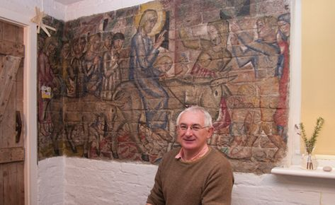
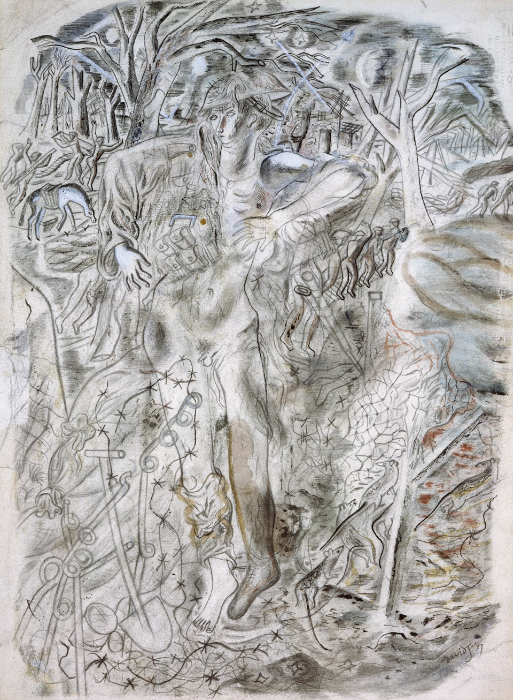

The Reach of
Post-Romantic Poetry

by Edkar Marenko
Copyright 2025
ISBN: 979-82-94237-11-0
Cover image Graham Sutherland, The Sirens (1978-79)
Introduction
This is a book about the reach of post-romantic poetry: the stretching out of its hand, and the terrain it stretched across.
Less elliptically: this is a book about poetic judgment generally, and in particular, the poetic judgments of a handful of poets writing in the British Isles from the last third of the nineteenth to the first two thirds of the twentieth century.
By poetic judgment, I do not mean to demarcate the poetic from the prosaic, the straightforward, the truthful. Rather, I mean to suggest how, with extraordinary deliberation, ordinary words come to bear an extraordinary weight of meaning. So we should hear the adjective “poetic” objectively, as in Geoffrey Hill’s comment that “in the act of ‘making’ we are necessarily delivered up to judgment” [“Poetry as ‘Menace’ and ‘Atonement’,” 1978]—but also subjectively, as in A. D. Nuttall’s suggestion that to dramatize in poetry one’s response to the divine is always “a kind of usurpation” of its cosmic jurisdiction [Overheard by God, 1980]. It is by allowing the phrase to echo in the mind with both meanings at once that we can begin to come to poetic terms with it.
Hill’s and Nuttall’s remarks suggest an axis of possible judgments along which to plot poetic motives, running from “handing over” to “taking in hand.” With “motive,” as well as “judgment,” taking multiple meanings; let the word signify not only mental attitude (a motive for action), but also physical movement (a motive force), and formal patterning (a leitmotif). A poetic utterance, the sort that both enacts and invites poetic judgment, has a motive in all three senses: it bodies forth a state of the spirit, undertaken in response to some state of the world, and aiming at bringing the two into some sort of alignment. To understand a poem is to understand how it accomplishes this bodily spirit-world harmony—or fails (i.e., accomplishes that harmony’s failure).
The poems which this book particularly seeks to understand were written between 1885 and 1973 by Gerard Manley Hopkins, William Butler Yeats, Wilfred Owen, Thomas Stearns Eliot, David Jones, and Wystan Hugh Auden. These poets’ forbear Samuel Taylor Coleridge comes up frequently, but as a point of comparison, a touchstone, never as a first thought. Other predecessors and contemporaries (Milton, Shelley, Keats, Arnold, Joyce) are alluded to in passing. Geoffrey Hill, the greatest British poet of the late twentieth century, hovers always in the background. Which is not to say that this book is an exercise is historical literary scholarship. To the contrary, I am relatively uninterested in these poets’ life trajectories and cultural contexts, except insofar as they affect our understanding of the poetry itself. But neither am I so doctrinaire a new critic as to insist that life and art will never meaningfully overlap. The point is simply that I do not offer here an historical account of a particular period, trend, or coterie in late nineteenth and early twentieth century British literature. Rather, I aim to outline a particular moment in the dialectic of British post-romanticism. The moment, I must acknowledge, that matters most to me, that stands center in my idea of poetry, that I most care to judge accurately.
Coleridge casts his shadow over this book’s epoch because he wrote both the most perfect lyric poem (“Kubla Khan”) and the most perfect narrative poem (The Rime of the Ancient Mariner) of the last quarter-millennium—or at least such is my own critical judgment. Hill lurks at the threshold as the most recent poet I find myself able to consider great. The remainder are not the only poets I consider great—and some I consider greater than others—but they are a set of poets who, standing in Coleridge’s shadow, had an extended conversation with one another about what poetry is, can be, and should be. Or perhaps it should be said that their poetry had this conversation. At any rate, this book follows some lines laid down therein. It reaches, we might say, from the terminus of Coleridge’s sacred river Alph, which
reached the caverns measureless to man,
And sank in tumult to a lifeless ocean,
To the unnamed watercourses of Hill’s “Genesis,” where
The tough pig-headed salmon strove,
Curbing the ebb and the tide’s pull
To reach the steady hills above.
Perhaps by way of Robert Browning’s “a man’s reach should exceed his grasp”—though through whatever path-dependency in my own career as a reader, Browning does not enter into this book’s version of the British post-romantic canon.
That canon, as presented within the book, is eccentric in two respects. First, it does not respect the usual rank-ordering of poets; it spends much of its time with household names like Coleridge, Yeats, Eliot, and Auden, but take equally serious more minor poets like Hopkins and Owen, and a full one and a half chapters to David Jones, a British post-romantic poet and painter you likely had never heard of until picking up this book. Second, and relatedly, the poets making up this book’s poetic canon always understood poetry alongside (in contrast to, or in collaboration with) religion, and specifically the Christian faith. Most of the poets I consider were practicing Christians of one form or another; Coleridge, Eliot, and Auden were high-church Anglican, though of debatable orthodoxy, while Hopkins and Jones were Roman Catholic, which in an English context (as Ford Madox Ford, among others, has pointed out) is always to say a kind of non-conformist. The two exceptions are Owen, who shows up only in Chapter II, and Yeats, who is in a way the main character of the book, playing a role in five of six chapters while no other poet appears in more than half of them. Owens lost his low-church evangelical faith at a young age, while Yeats seems to have always been what is today called “spiritual but not religious.” Both are closer to the norm for this period of literary history than the more religious poets on whom I focus. We might take them to stand for the mainstream of British poet-romantic poetry—but this book focuses on post-romanticism’s outer reaches, where the solitude of poetry clashed against the communal dimension of organized religion. Indeed, the question of religion, and in particular of high-church Christian religion, is part of why I have seized on the term “post-romantic” (be sure to give the embedded “roman” its due) instead of the more ready-to-hand “modernist.” Another consideration being that “modernist” as the term is traditionally used does not include Owen or Hopkins.
The six chapters across which I sketch my argument (which will at times seem less argument than commentary, an attempt to translate into prose what these poets built into their poetic forms) fall into two parts.
The first three are comparative: Chapter I traces the problem of poetic innovation in Hopkins, Yeats, and Auden (with comparison to two strands of pre-romantic poetry); Chapter II the problem of poetic violence in Owen and Yeats (with comparison to the paradigm romantic Coleridge); and Chapter III the problem of poetic vocation in Jones and Auden (with comparison to the post-romantic mainstream). The first two of these chapters will for the reader well-versed in British poetry tread familiar ground, although it is to be hoped that they follow an unexpected route in doing so. The third chapter considers more obscure material, but not, I think, of less intrinsic interest.
The last three chapters each focus on an individual poet, though for only one do I consider his poetry in the strict sense of the word, and even there, the poetry considered is not in the mode of the post-romantic lyric—that verbal composition, as Helen Vendler eloquently explained it, that invites us “to take such words as our own” [Soul Says, 1996]. This avoidance of “poetry proper” is intentional; my goal in these chapters is to understand the alternatives these poets turned to when they ran up against the post-romantic lyric’s intrinsic limitations. Chapter IV looks at Jones’s copperplate illustrations for Coleridge’s Ancient Mariner; Chapter V at Eliot’s poetic drama Murder in the Cathedral; and Chapter VI at Auden’s late light verse.
I have already noted that this is a work of literary criticism, not historical literary scholarship. Yet the reader will also by now have noticed that it is not a work of academic literary criticism, even if parts of the book first began to take shape in an academic context. Which is mostly to say that it does not conform to the conventions of the academic genre, with copious footnotes including citations to previous “researchers” on the same “subject matter.” The preceding paragraphs have referenced a few ideas about poetry-in-general attributable to literary critics who held academic posts (Hill, Nuttall, Vendler). There will be no more such references, for the goal is to take these poets and their poetry on their own terms. I do from time to time quote various literary scholars (Samuel Hynes, Geoffrey Hill, Thomas Dilworth, Stanley Fish, Lucy McDiarmid, Peter McDonald) for their particular thoughts about particular poets’ varieties of poetic motive. I endeavor to do so as infrequently as possible. When they occur, these citations are meant to stand as signposts to mark when a particular reader’s gloss on a literary work has indelibly marked my understanding of it. Occasionally by getting the work wrong—but even erroneous readings can be enlightening (this possibility being a central theme of the fourth and fifth chapters, if not of the entire book).
The Appendix presents the full text of each of the poems I discuss in any detail, save those that are too long for such treatment to be possible or too short for it to be necessary. (The reader is encouraged to refer to the Appendix frequently, to assess that discussion’s accuracy.) This book also quotes and discusses a number of prose fragments, but with a single exception (Coleridge’s Preface to “Kubla Khan”), the Appendix does not present any of the wholes (letters, essays, lectures) from which these fragments were drawn. Those larger wholes are too large to fit comfortably within this volume, and besides—though they contain moments of poetry, in the broader sense of that term—they do not comprise unified poetic wholes, fully intentional verbal arrangements. Poetry does not require meter or rhyme or even lineation, but discrete identifiable poems do tend to be in verse.
Part One
Poetic Judgment
I. The Music of the Spheres
When the Hebrew poet depicts God speaking to Job out of the whirlwind, his first strophe ends by invoking an inaudible celestial music. In the words of the Authorized Version:
Where wast thou when I laid the foundations of the earth … When the morning stars sang together, and all the sons of God shouted for joy?
[Job 38:4-7, c. 500 B.C.]. Job never heard the stars sing, and takes his failure to demonstrate God’s supremacy. Avowing his silence, he repents in dust and ashes.
Aristotle, in a quite different context (and without any hint of divine intervention), likewise considers the abjection threatened by the purported music of the spheres, but offers quite a different response:
Indeed the reason why we do not hear, and show in our bodies none of the effects of violent force, is easily given: it is that there is no noise.
[On the Heavens at II.9, c. 350 B.C.]. Not to know what is not there leaves the knower nothing to repent of.
Aristotle may be correct, as an empirical matter, but this does not prevent anyone from looking up at the night sky and synaesthetizing a cosmic harmony signifying universal justice. Neither does it prevent him from imagining this just harmony to require of him an antiphonal response.
Such responses inevitably raise questions of poetic judgment. Job’s repentant silence in the face of cosmic music would be an instance of the poetic motive associated in the Introduction with a remark of Geoffrey Hill, that of handing over. Aristotle’s assertoric science in the face of cosmic silence would be an instance of the opposite motive, that of taking in hand. The contrast suggests a spectrum of possible motives of response to the musica universalis. Some of these, like the passages from Job and On the Heavens quoted above, are relatively straightforward to comprehend, but others are more complex.
*
Consider, for example, Jesus Christ telling his disciples to pray with words “after this manner,” that is, to borrow words from another that address another and leave to that other the responsibility of securing their efficacy:
Our Father which art in heaven, Hallowed by thy name. Thy kingdom come, Thy will be done in earth, as it is in heaven. Give us this day our daily bread. And forgive us our debts, as we forgive our debtors. And lead us not into temptation, but deliver us from evil.
Set this alongside Immanuel Kant’s friends placing on his tombstone, not any religious symbol, but rather these words which imagine the (perhaps unrealizable) possibility of disinterested utterance:
Two things fill the mind with ever new and increasing admiration and awe, the oftener and the more steadily it employs itself in reflection on them: the starry heavens above me and the moral law within me.
Both passages have been extracted from larger works, the Gospel of Matthew and The Critique of Practical Reason, originally written in Koine Greek and German, respectively; but each has taken on a life of its own, and has done so, not by accident, but due to the density of grammatical contexture it contains. Though not all of that density survives the trials of isolation and translation, enough does to reward careful reading.
From their very first words both passages concern themselves with hierarchy (“Father,” “two”) and community (“our,” “the mind”). The paternoster begins with a salutary acceptance of hierarchy as necessary prelude to relationship. When we pray, we must do so alone, as Jesus tells us just previously: “go into your room, close the door and pray to your Father, who is unseen.” The epitaph, in contrast, opens by abstractly asserting the mind’s reflection upon hierarchy, an implicit refusal of submission and insistence on self-employment. No “name” remains to be hallowed as king, Kant’s so-called “kingdom of ends,” das Reich Endes, being no monarchy, but rather an autarchy where the ends themselves rule. Nor is “the mind” quite a first-person plural. Though it resembles “we” in including all and only those willing to speak these words, the logic behind that inclusion more closely resembles that of the normative “one,” demanding that we enter into the community of mind with no guarantee that anyone else exists therein. This refusal of hierarchical implication makes the passage particularly suited to be placed on a tombstone, where it can become not an utterance of the man christened Immanuel, but a monument by which his words escape their bodily origins. It was placed there, not by Kant himself, but by his friends, who thus take up the epitaph’s invitation to participate in a shared judgment of the human condition, and through that participation bring about the judgment’s autonomy which is not quite self-subsistence.
Following the salutation, the paternoster lays out three sets of petitions. First, two petitions address “thy” precedence, the earthly advent of “kingdom” and “will” guaranteed by their heavenly preexistence. Second, after the father makes “us” subjects in his realm, a single petition deals with “our” desire for communal sustenance. Third and last, once our place has been established within and fulfilled by the heavenly community, two petitions concern how “we” can receive full personhood and enter into relationship with other persons. By forgiving a debt, that is, the speaker can assert agency—though the agency is not that of the first-person singular. The debt perhaps arises from our succumbing to temptation (the Aramaic word thought to stand behind the Greek ὀφειλήματα can mean “sins”), but is also the debt of language itself: because the speaker’s words are not his own, he avoids the “I” and shares a “we” with a community of common speakers. This sharing earns forgiveness through its just measure. Jesus’s second injunction before imparting this paradigmatic prayer concerns quantity: “do not keep on babbling like pagans, for they think they will be heard because of their many words.” The paternoster does not squander its words, but speaks with carefully balanced syntax—as in heaven, so on earth; forgive us, as we forgive; lead us not, but deliver us. The speaker convinces the creditor to forgive the lexical loan, not by telling him something he does not know, but by passing along the gift of the Father’s word, which, if accepted, will allow the speaker to enter the promise of the kingdom, be filled with its sustenance, and become its steward.
The epitaph, meanwhile, consists of a single sentence divided by an imagistic colon into two halves: a labored statement, and an elliptical list. The former concerns the mind’s habitual relation to the two things, the latter the two things’ prepositioning relative to a first-person singular dative. Like the sequencing of the paternoster’s petitions, this conjunction suggests a link between the heavens and the moral law, and that law still leads the mind to its daily bread of admiration and awe, which fulfill not a literal, but a spiritual desire. The admiration and awe now arrive, however, not as gift-pay from any stellar overseer, but as a discovery within me of a law absent above me. The agent setting out the law is no father, but rather “the mind” itself, whose impersonality the reader contrasts with no “we,” but with what the paternoster lacks, a “me”—in fact, two at once. Though dative and fragmentary, these aspire to a “mind” whole and autonomous. The colon encapsulates the moment of lawful discovery that is mind itself, a shift from an extended, suspenseful reflection on the mysterious two things to a sudden glance of stark comprehension. The gesperrt lettering after the colon forces the reader to protract this moment of recognition until the abruptness of mind becomes audible in the movement of the words themselves. For any “mind” able to make the leap, the passage thus demonstrates its words and its self to be its own; for any “me” that cannot, it acknowledges no debt of words to a community, for until I mind myself there exists neither any “I” nor any law to break. Unless it successfully demonstrates its mastery, the epitaph does nothing for us, does not even fail in a way on which it would make sense to pass judgment.
In characterizing the contrast between paternoster and epitaph, we (or one) must be careful not to shoehorn them into any preset dichotomy—say, designating the former “prayer,” an act of interpersonal bidding, and the latter “philosophy,” an attempt to erect an autonomous monument. Neither “prayer” nor “philosophy” designates a natural kind, and experience suggests that we can locate many instances that would count as both. Neither should the readings I have proposed be understood to have simply recapitulated the religious narrative or philosophical argument of the larger text in which these passages are embedded, finding the part a fitting emblem of the whole. It would be equally plausible to say that those systems develop from the dense kernel of these acts of self-judgment. Extended the possibility that the world is governed by an unchanging law, these passages respond, not merely with an utterance, but with a judgment that their utterance should be taken as somehow exemplary and authoritative. They differ only in their specific motives of self-judgment: the paternoster offers prayerfully balanced stewardship; the epitaph, philosophically abrupt mastery.
It might sound as if I am saying that the paternoster and the epitaph are lyric poems. But the point rather is that the lyric mode is only one way for motives of self-judgment to find expression—and that looking to other modes as well will allow the reader to hear more clearly the “self” in question, and his relation to it. Used of the paternoster and epitaph, “self-expression” clearly does not refer to the self of psychological introspection, as if the reader were concerned with the original author’s state of mind (which would be a naive romanticism). Neither does it mean the self of the words themselves acting as subject of the expression, as if the poem could mean something for the reader simply by virtue of its objective existence (which would be a naive modernism). Both of these ethical formulae are self-referential only in the sense that the reader who takes them up wields them as both instrument and object of his acts of self-understanding. We (to commit provisionally to the first-personal plural) make sense of our use of words at the same time as we make sense of ourselves.
*
The post-romantic lyric, like its Christian and Kantian antecedents, responds to the heavens’ intimation of cosmic justice and human imperfection by offering its own self-judgment. In those ethical formulae, however, the self-judgment is exemplary because it marks out a resemblance between all who can hear the words, whether the communal “we” of the paternoster or the normative “mind” of the epitaph. The post-romantic lyric, in contrast, lacking any likeness in which to participate or the existence of which to postulate, is unable to reconcile itself to the all-too-definite stars above. If the lyric is exemplary, it is only in its failure to be so; as readers we cannot, though we try, take such words as finally our own.
Consider Gerard Manley Hopkins’s “Spelt from Sibyl’s Leaves” [1885; see App’x at 127], an extended attempt to locate itself in the suspension between mastery and stewardship. This poem occupies a strange place in Hopkins’s oeuvre, simultaneously central and marginal, one of Hopkins’s greatest achievements and among his most difficult to parse. The difficulty is compounded by the poem’s perplexing meter, which is nigh impossible to hear on a first reading. Written at the tail end of Hopkins’s experiments in what he called sprung rhythm, the poem offers not the bounding energy of “The Windhover” or even “Carrion Comfort,” but a tense straining between enigmatic diacritical markings, of which only the caesurae and stress marks translate easily into print. The result is a curious ambivalence. Insofar as the poem insists on the material specificity of its voicing, it enacts Hopkins’s theories of sprung rhythm in their purest form. But, as the titular words “Spelt” and “Leaves” emphasize, this poem is not a verbal but a written artifact, a fact reinforced by the very notation which insists the poem be spoken in a particular way, and yet leaves us entirely uncertain what the poem should actually sound like. “Sibyl’s Leaves” must but cannot be heard; it asks us to imagine a sound that cannot come from our own lips.
The titular “Sibyl,” whatever else she may mean, expresses this perplexity. Hopkins forces us to hear the alien voice of the sibyl through an almost unbearable stretching-out. The length of the poem was for Hopkins its most important feature: in a letter to his friend Robert Bridges, he called it “the longest sonnet ever made and no doubt the longest making” [Letter CLXI, 26 Nov 1886]. The “longest sonnet”: with eight beats plus a marked caesura, its lines take almost twice as long to recite as a typical pentameter. The “longest making”: Hopkins paused for two years halfway through the tenth line, at the end of which, one suspects, the first part of the poem felt to the author of the last as if it were written by a stranger. In a later letter, perhaps alluding to these pauses, Hopkins wrote that the poem requires “not reading with the eye but loud, leisurely, poetical (not rhetorical) recitation, with long rests, long dwells on the rhyme and other marked syllables, and so on. This sonnet shd. be almost sung: it is most carefully timed in tempo rubato” [Letter CLXIII, 11 Dec 1886]. Hopkins’s description suggests that “Sibyl’s Leaves” acts on the poet’s desire, mentioned in an earlier letter, to “compose my own requiem, like Mozart, but in plainchant” [Letter CXXVII, 1-2 April 1885].
Hopkins’s musical specifications sought to ensure each beat received its full expressive power. The speaker-singer’s attention would be led inward, away from the “rhetorical” connections between the words and toward the weight of each individual moment. Such pondering, however, would also force him to weigh these moments against each other, for tempo rubato, “stolen time,” preserves its metrical balance only by taking time from one measure in order to draw out another. On both semantic and syllabic levels we hear the poem as a sequence of distended moments, scattered leaves, which are to one another strangers and potential thieves. The first line’s seven words hang in the air devoid of semantic or metrical connection, and with such powerful sonic effects that we almost forget to notice what they mean. Each word receives a single stress, exerting its own sphere of influence. In later lines metrical conflict goes hand in hand with syntactic confusion, as the poem demands ever more strenuously that we measure it correctly even as we become less and less sure what our measurements accomplish.
After the first line break, the adjectives of the opening come to settle on a noun, “Evening,” though one which could be mistaken for another adjective; then the next word, “strains,” finally provides the verb, though one which could easily be mistaken for a noun. An apocalyptic nightfall is coming into view. But who sees it? Most Hopkinsian visions have a clearly defined speaker who performs a definite speech act, often one of narration. “The Windhover” is paradigmatic: “I caught.” “Sibyl’s Leaves,” in contrast, obscures both the grammatical and the illocutionary force of its words. By the second line we surmise that the poem is in the present habitual or historical, but neither description captures the impersonal visionary quality of the poem, which does not in any simple sense happen once, let alone many times. The poem is not a description so much as a construction; the tense of its verbs might be best labeled as the present visionary, allowing neither the postulation of a speaker narrating his experiences in real time, nor the relegation of the vision to any future tense or irrealis mode.
In plain English, the next few lines depict sunset, moonrise, and stars looming over us. For the present, at least, we hear this “us” as a vision of the universal human condition: for everyone, everywhen, night is presently falling. Instead of the obscure adjectives attached to “Evening,” the epithets of “night” follow a clear logical pattern, from womb, to home, to hearse. The dueling adjectives attached to sun and moon, and the stage directions “west” and “height,” construct an imaginative scene. The fourth line’s pun on “earliest,” “earl,” “principal” personifies this world’s hierarchy so that it can become responsible for the violence of the second quatrain, when night’s fall comes to mean earth’s ruin. The variegated beauty of the world gives way to a stark chiaroscuro of ethical judgment, but does not thereby gain in clarity. If there never was a time when night had not begun to fall, what sense can it make to talk of what preceded it? And if the unity of “us” depends on the coherence of our shared world, what happens to “us” when that world not only vanishes, but is seen never to have existed in the first place?
In the next lines this confusion erupts as an apostrophic exclamation, and for the first time visionary utterance finds its place in dramatic context. That the stress of judgment tautologically “whelms” and continually threatens, without ever, while life persists, actually managing, to “end us” (only the second first-person plural pronoun), now comes to “me” (the only first-person singular) from a personified “Heart.” More precisely, the poem tells Heart that “you round me right with” it, a perplexingly polyvalent word choice: it could mean “to rebuke,” but also “to make round,” “to tonsure,” or even “to act as the celestial round” and “to sing in a round.” Rather than force a determination between these possibilities, we should take the ambiguity to be constitutive of the poem’s meaning. Is “Heart” whispering to “me” from within, or overwhelming “me” from without? Is the heart mine, or does “me” belong to “Heart,” unpossessed? If the latter, the speaker has been subordinated to a part of himself, namely, to his desire’s impending dissolution, such that the dramatis personae of the heavens and the heart come to seem indistinguishable; if the former, the same happens instead to heart and self. The effect of the invocation of “heart” is to tear apart the dramatic positioning of self and sky and leave the world one alien, undifferentiated mass. There remains no ground to stand on, and no one to stand on it.
The sestet responds to this apocalyptic vision with the familiar image of jagged tree-boughs outlined against the night sky. By this point in the poem these leafy boughs are the only thing in the world besides the world, and they come between the world and itself. We already know the evening to be “voluminous,” suggesting that the leaves may be pages of writing. But we known nothing about what may be written on them, other than that, in contrast to the sky’s smoothness, they are dragon-sharp—dangerous, perhaps devilish. Their introduction “damask[s]” these lines, giving them a pattern utterly distinct from what preceded them, but a distinction whose meaning, again, is not immediately apparent. Are the leaves of prophecy a supplement to the heart’s vision, or something interjected between it and “me”? And if a supplement, are they in origin divine or demonic? To develop their meaning, Hopkins settled first on the word “tale,” but could not write a line that measured up to the rest of the poem, and paused. Only years later did he arrive, by way, one suspects, of Aeneas’s Golden Bough, at the ensuing invocation of the Sibyl, introduced by the unaccented exclamatory “O”: “Óur tale, O óur oracle!”
Here the poem’s tempo rubato reaches its climax. The pause between octave and sestet was, however leisurely, regulated by the form of the sonnet. This “O,” in contrast, demands an unanticipated and almost infinite distension of the pause between the stresses on “Óur” and “óur.” We have no way to judge the weight of the apocalyptic tautology spanning the gap, the rhetorical equation of “tale” and “oracle.” The difficulties imposed by the octave’s “Heart” are here redoubled: is the poem now concerned with a past of which it tells, or a future of which it prophesies? The ambiguity, moreover, afflicts not only the visionary world, but also the persona of the speaker. Can the speaker speak of and for any community besides that of the heart within which he is trapped? Is this possessive pronoun subjective or objective? Is this oracle ours because about us, or ours because we own it? The words of biblical prophecy, or the words of the poet himself?
Under the tension of such compounding ambiguities the poem begins to unravel, the remainder of the sestet devolving into a single, relentlessly elliptical sentence. Someone must “let life” (the poem’s newest character) be divided in two; and, in a tautological reiteration, must actively “part, pen, pack” her into right and wrong; and, in what may be yet another tautology, must “reckon,” “reck,” “mind” this division; and, finally, must “wáre” of a world with only these two, with only the agony of the choice between them. Grammatically the verbs share a single subject, but it is difficult to tell who is it, or whether the verbs address them with an imperative or an imprecation. If the latter, then these lines are a kind of spectral after-image, uttered by “us,” of the paternoster’s “forgive us” and “deliver us from evil”: please may the octave’s apocalypse become the true judgment the world has always required, please may the judge take into account our moral scrupulosity. If the former, they more closely resemble Kant’s epitaph, such that the oracle, like the mind, ordains both the law and the tortured self who must reckon it, after but not according to its encounter with the starry sky. Because we cannot decide between these, the poem concludes with the speaker both pleading in his own words to hasten a promised judgment, and imagining in words not his own bringing about a judgment to-be-feared.
This does not mean, however, that “Sibyl’s Leaves” sits at a midpoint between philosophy and prayer. Rather, it suspends itself between paternoster and epitaph, and its motive is that suspension. What we remember of these last lines is not the stark choice, nor the proliferation of alternate possibilities, but rather the dread drumbeat of the self stretched on the rack of judgment—just as the reader of the poem hangs suspended between incommensurable interpretations, the inevitable result of daring to pass final judgment on the meaning of one’s words. At least for the span of this poem, Hopkins longed to believe in the Word, but he believed his own words, when they sought to demonstrate belief, to enact not any redemption but a kind of robbery. He hoped only that their acts of robbery would be excused if self-directed.
*
If “Sibyl’s Leaves” reluctantly held back from asserting the exemplarity of either stewardship or mastery, William Butler Yeats’s “The Cold Heaven” [1914; see App’x at 128] much more forcefully renounces both. From the moment we see it on the page, its lines twice as long again as Yeats’s usual trimeter and tetrameter, the stark divide between it and the other poems in Responsibilities is difficult to ignore. It is not quite that the poem anticipates the high style of the 1920s, in which Yeats advanced from personal mythology to impersonal vision. Rather, it dramatizes the advance itself, or the impulse toward it, frantically turning away from both stewardship and mastery toward an indefinable and unattainable desire.
This turn occurs over four narrative moments: the vision of the cold heaven, its effect upon the seer, the seer’s reaction to it, and the riddle it poses him. But caution is required. Though the meter of “The Cold Heaven” is just as eccentric and opaque as that of “Sibyl’s Leaves,” its mood is not meditative but rather endlessly longing. We cannot imagine this poem being sung, and may not even recognize that its 7676 meter simply adds three feet to the 4343 ballad quatrain. Rather than carry us along with a self-explanatory melody, “The Cold Heaven” drives relentlessly over our objections with a breathless, staggering meter we cannot ignore but also cannot hear clearly. Through most of the poem we can tell only with difficulty that there ought, in theory, to be a full seven stresses on each odd-numbered line, and if we try to weigh them accurately we tend to lose our place in the meter entirely, as we are already liable to do, given the distance between rhyme-words. Instead, we balance the lines by giving two of the feet in the first only half a stress. The resulting syncopation propels us forward, but at the same time makes us trip over our own words. Such stumbling and doubling back is also, I would suggest, the action of the poem’s words on themselves. As the speaker narrates his vision, he also rewrites it over and over, discovering new ways to understand it. This rewriting constitutes the vision itself.
To see what I mean, compare “The Cold Heaven” to Yeats’s other vision poems of the period, like “The Magi” or “The Second Coming.” Only in “The Cold Heaven” does the act of seeing arrive “suddenly,” unheralded, unwanted, and only here does it take place in the past tense, not “see” or “can see” but “saw.” These together suggest, not that the vision is being recorded after the fact, but that the vision itself, which the words of the poem summon anew, is of having been, in the past, passive. The poem begins by throwing us backwards in time, and the remainder of the opening couplet describes and redescribes the violence inherent in this sudden turn. The first line suggests a vision of heaven lacking emotion and pleasing to creatures who feed on rotting flesh. The connection between “cold” and “rook-delighting” cannot, however, be immediately apprehended, an insufficiency to which the second line responds, rewriting the cold as a paradoxical burning ice that incorporates the violence of the rooks. We find here not an Eliotic contemplative koan, “the fire and the ice are one,” but rather the insistent blow of “ice burned” and the heavy repetition of the final word in the closing spondee “more ice.” The antithesis shocks us into sensation, and we feel the cold to be not simply a lack of warm emotion, but a positive force of “rook-delighting” destruction.
The next four lines of the poem contain difficult ambiguities. A paraphrase of the first clause would run: “and after that (after seeing the cold heaven), the seer’s imagination and heart were driven wild by what he had seen (so wild that …).” But the long word “thereupon” would be a waste of breath if it did not also summon a more specific meaning appropriate to this context: “upon that there.” Imagination and heart were driven upon, onto, the cold heaven, like cattle into pens, wild beasts into traps, or dolphins onto rocks. Nor, though we at first assume they are the speaker’s, do “imagination” and “heart” receive any possessive pronoun, as they easily could have. When they are driven wild, the visionary himself has ceased to exist in the “casual” present, being reduced to the “memories” that alone remain; or, alternatively, the visionary sees heart and imagination before the formation of his “I,” when they are not yet his, being simply driven. Rather than assume “the vision” or “the cold heaven” does the driving, we should say that the vision itself is of driving having been done by some nameless agent.
This deep ambivalence continues in the subordinate clause, when the memories appear finally to receive content. Tempted by biography, we easily read these lines as saying that the memories are “out of season | with the hot blood of youth,” more appropriate for the seer’s present old age, because “long ago,” in the seer’s youth, his love (for Maude Gonne or Ireland) was “crossed,” a fate that made him old before his time. But “crossed” love is obscure: “star-crossed,” “crossed out” by the beloved herself, “crossed over” by the lover? We know only that the love has ceased, not who or what has caused it to do so. Nor can the memories left behind be separated from the vision itself, which reveals them to have been all along past, memories of a love that can only be understood as “crossed long ago.” These alternatives, then, coexist: pledging allegiance to ideal beauty in the face of a hostile lifeless cosmos, and emerging into selfhood through the heart always already having broken against the unyielding beauty of the beloved. The visionary sees again the idealized object of desire, and at the same time ceases to desire her as he once did and instead desires to regain the lost love itself.
All this happened when things passively “were driven.” The next line, in contrast, has a clear agent: “And I took all the blame out of all sense and reason.” But the “I” is not really so clear: is it the “I” of the seer responding to the vision, or an “I” emerging from the heart of the envisioned youth? The verb “blame”—which certainly does not mean “guilt”—makes the agency of this “I” a central question of the poem. Where did “blame” and “sense” and “reason” come from, and why and in what sense is the first taken “out of” the other two? These three terms relate chiastically to the earlier “memory,” “heart,” and “imagination.” “Imagination” had been a free association, but now must conform to “reason.” “Heart” had desired whatever object it would, but now only desires what it can “sense.” The crossed love had been but a passive “memory,” but now that an “I” has arrived, it asks: am “I” to “blame”? Who did the crossing, and, for that matter, who did the driving? The semantically unnecessary but poetically powerful repetition of “all” opens up three possibilities, which we cannot decide between. If it means “I eliminated blame from thought and reason,” then the “I” absolves itself of remembered love by attributing it to cosmic hostility. If “I preserved blame, and discarded sense and reason,” then the “I” insists on remembered love despite the doubt cast on it by cosmic mechanics. And if “I accepted blame, which was sensible and reasonable,” then the “I” justifies remembered love through an appeal to cosmic judgment.
In any case, the absolving, insisting, or justifying “I” is interrupted before it completes its task. “Until,” like “thereupon,” is not simply “and then.” Here, it indicates that the taking has been broken off by the crying and trembling and rocking. The issue, again, is agency, but the question is now more complex than simply whether or not the “I” possesses it. The “I” breaks off, unable to withstand the pressure of its incorporation as either patient, agent, or evaluator. As with “that” in the previous sections, what follows “until” does not continue so much as restate what precedes it: the “I” that actively “took” the blame is superimposed on an “I” that reacted to it, “cried and trembled and rocked to and fro” while the “light” emanating from the cold heaven “riddled” it with either blame or its absence. Riddled him, even, about the presence or absence of blame, as an extraordinary pun (“riddled” as pierced, “riddled” as asked) makes the cold heaven appear responsible for the poem’s concluding question.
This last question can seem, not just unclear, but entirely nonsensical, as well as a non sequitur. Why are we talking about ghosts, and why so much as imagine that injustice can punish anyone? What determines the content of these lines, and what requires that content to be presented in the form of a (rhetorical?) question? The quickening ghost rewrites the light-riddled “I” crouched in the fetal position, both figuring, not death followed by rebirth, but birth as a kind of death. Here birth into purified self-consciousness takes place through a failed confrontation with a deadly riddle. What to do with, whom to blame for, the memory of a “love crossed long ago”? The poem’s tentative answer emerges from the chiasmus of the final sentence. The shrouding of the death-bed ends, somehow, with the self stripped naked; the ghost’s quickening, in an ironic rhyme, somehow consists of it being “stricken,” unjustly punished. This vision of being “riddled with light,” that is, of having been questioned, has precisely the effect the question suggests: it strips the quotation marks from the seer’s report of it and strikes him forcefully enough to reduce him to an inarticulate “Ah!” There follows a mythologized birth of Yeats’s new style, akin to that of his contemporaneous poem “The Coat.” He will henceforth write without protective adornment, and will end his poems not with carefully controlled rhetorical questions, but with lacerating riddles—lacerating because Yeats does not know if the “memories” on which he based his poetry had any truth to them.
If the riddle comes from the cold heaven, however, it is also “as the books say.” This enigmatic aside tells us what we need to know about this poem’s attitude to its own exemplarity, but it requires some glossing. What books does Yeats have in mind? One possibility: aesthetic and occult tomes (Yeats did not sharply distinguish between these). Such books tempted Yeats to imagine a mind which could master itself, but the desire they provoked exceeded what they could philosophically communicate. Another possibility: religious scriptures and catechisms. Such books commanded Yeats to join an “us” of self-abnegation, but were unable to make the community they promised desirable. A third possibility, which can accommodate the first two: Yeats’s poems themselves, including this one. “The Cold Heaven” abandons its first-person singular without turning to any first-person plural because any claim to exemplarity, whether of mind’s mastery or of our stewardship, could never live up to the endless desire of the un-pronoun “Ah!” This poem’s inordinate love hurtles it headlong toward a community which will never form because it cannot even be named without betraying it.
*
Adopting neither Yeats’s propulsive “Ah” nor Hopkins’s suspended “O,” Wystan Hugh Auden’s “The More Loving One” [1952; see App’x at 146] simply eludes any vocalizing whatever of the self’s dilemma. The resulting short ballad, remembered mostly for the memorable couplet containing its title, can seem light-hearted, even trivial, existing on a lower poetic plane than such weighty works (and such long lines) as we considered above.
But for the later Auden the apparent ambition of a poem is rarely a reliable indicator of its poetic value. “The More Loving One” shows his late poetics at their best, and their most difficult, in part because they seem so easy. The lightly running tetrameter couplets, each but the second-to-last stopped by a mark of punctuation, and every other couplet followed by a line of white space, easily separate the poem into four iterations of humorous provocation and self-assured response. We should not allow ourselves to be taken in by Auden’s facility with the ballad meter. Even when sure what the poem says, we are rather less sure why it says it. And though they sound so lighthearted we do not at first notice, the claims this poem makes ought to shock us: an indifferent cosmos is not so bad; we should rather love than be loved; we cannot miss the stars; even their absence would be sublime. How seriously can we take these assertions, which assumptions should we accept, which exaggerations ought to make us suspicious?
These questions implicate not isolated words, as with Hopkins’s poem, nor unclear predications, as with Yeats’s, but misleading logical tissue. For example, despite the poem beginning with an adverbial clause about vision, the “I” learns nothing from any visionary experience. What he knows whenever he happens to look (not necessarily now) he knows “quite well” enough not to forget when not looking. Vision does not ground knowledge imaginatively or empirically, but only recalls to mind a gnosis whose grounds are quite unclear. Unclear, too, is the proposition known: does it include the second couplet, or only the second line? Certainly, by the time we get to “But on earth,” the adverbial “looking” no longer seems to apply, and we do not imagine the “I” still looking up at the stars, if we ever did. The claim to knowledge, too, has faded into the background; the “I” neither responds nor affirms, but merely muses. The B couplet lacks clear warrant, but we do not notice, for it says what “we” can all agree on, which unanimity allows us to put off, for a time, the question of who this “we” is. And, to be sure, as the historical horrors in the poem’s background demonstrate (it was written not long after Potsdam), indifference is not the worst thing earthly creatures can do to one another. In this light the stars’ initially dismissive “go to hell” may grow more sinister, “to hell” being where the world has already gone, but also more elegiac—the stars may have cared but been unable to prevent it.
Given the momentum of the first stanza, we might expect the “I” now to ask, “How should we like it if the stars were to treat us the way we treat each other?” Instead, he suggests that we should fear, as we fear violence, being the object of a burning passion we cannot return—a thought far more shocking than the swift transition between quatrains might lead us to believe. Biography here suggests details to fill in the picture: lovers are tempted to strangle those unfaithful to them; public poets are tempted to lie to their audience for its own good; similarly, if the stars had a passion for us commensurate with their enormity, they would destroy us. Perhaps, but surely the assertion requires further justification? Two separate ambiguities, in fact, undermine the argument: it may be that doing evil, rather than suffering it, is what really sends us to hell; and it may be that, while the stars do burn with passion for us, we are, in fact, able to return it. The speaker leaves these possibilities behind, however, and instead avows a desire to be “the more loving one,” which hardly seems to solve anything. Will not he, too, end up destroying his beloved? Though his wish has innocent origins in the Christian commandment “love your enemies,” the manner of its expression ought also to shock us. Rhyming “be” with “me,” the “I” threatens to set himself up as a rival to the all-loving cosmic mover of traditional Christian belief.
The prosaic word “affection,” at least, anchors the poem to earth, suggesting a speaker who, like Auden himself, never responded to the stars with particular affective intensity. The shift to admiration in the third stanza threatens to carry us away into cosmic, political, and erotic extravagance. It is as if the speaker has not noticed his own indifference to the stars (the city, the beloved), or at least believes himself obliged to respond intensely to them without seeing anything in them deserving of intensity. With the loose tetrameter of the first two quatrains now constrained to a grid of sixteen iambs, the speaker’s “I think I am” sounds like a monomaniacal Cartesian skeptic, whose confusion descends in the B couplet into solipsism. His claim not to have “missed one terribly all day” attempts, like the first line of the quatrain, to parrot common knowledge, but strikes wide of the mark. Until this point Auden has not been contemplating Shakespeare’s “bright particular star,” but the entire multitude. There may be an allusion here to the sorites paradox: if taking away one star would not make a difference, then taking away two stars would not either… The speaker, however, couches his uncommon sense as merely recognizing an uncomfortable truth. His claim, like most skeptical claims, strikes the rest of us as both reasonable and absurd: true, to say we do not miss a single one of the stars during the day; absurd, to draw from this fact enormous implications, as if “I do not miss one” means “their collective presence makes no difference.”
The final quatrain brings the reductio ad absurdum. I am aware of no poem that envisions an apocalypse so easily, with hardly a semantic, syntactic, or metrical distortion. We hear only the slightest of stutters in the stress shifted from the “dis-” in “disappear” to doubly emphasize “all stars.” This “I” may be courageous, but he is also heartless, reciprocating the stars’ (apparent) indifference: they, too, can go to hell; if heaven must be cold, it might as well be empty. The speaker does not even distinguish “disappear” from “die,” suggesting he no longer grants the stars any existence outside his own perception. This would make the imagined disappearance less an apocalypse than a closing of the eyes, and “sublime” less in a Kantian sense than in the sense of a “sublime” bottle of wine. The wry last line suggests, in fact, that the speaker knows all this to be mere bravura. Though he imagines having this response, he realizes things might go differently if an apocalypse were actually to occur, and admits, in the end, to having spoken somewhat excessively, to having been carried away with himself. He did not mean what he said, not wholeheartedly anyway. He affirmed his indifference only out of a resentful sense that his skeptical realization compelled him to do so.
To recapitulate the speaker’s trajectory: his “I” comes into being with a claim to “know quite well” the community to which “we” belong, namely, that of those who “go to hell” for all “they,” the stars, care. But almost immediately, his “let [it] be me” declares him a god and so denies his membership in the community of sufferers that led him knowledge in the first place. Having lost his “our,” he quickly loses both his “they” and his knowledge as well; first only “think[ing]” about “admir[ing]” them, he then “cannot say” he minds their regular absence. Finally, he claims that “I should learn,” in case of an apocalypse, to be indifferent to their absence, a subjunctive which threatens to become an imperative, revealing his goal all along to have been escape from his stellar overseers. The irony here involves a recognizable constellation of concepts—original sin, eros versus agape, abstract and concrete, the danger of building a life out of a single mood—but it does not proceed according to the arcadian-utopian dialectic Auden developed in contemporaneous poems like “Vespers.” Here the second quatrain offers a utopian prayer for final perfection, the fourth an arcadian boast of original complacency; both are subverted. The poem proceeds not through moral theorizing, but through its verbal enactment of Auden’s formative disillusionment. The first-personal avowals enact a subtle evasion of responsibility which are revealed as such only through the poem’s ironic gestures. If this “I” neither hangs suspended between nor aggressively interrogates its ambiguous communal affiliations, nevertheless every attempt it makes to specify any particular relationship between the cosmos, our desire, and my suffering, is immediately met with an irony apparently fatal to all alike.
At least, the irony is fatal if the words receive their full weight. But the ballad meter does not encourage such pondering. Rather than condemn its own words—imagining the existence of other, unuttered words that comprised the real poem—this poem eludes its own implications, and condemns those who would give them more importance than they deserve. Such self-conscious frivolity explains also why what we could call the poem’s two voices, knower and ironist, inflect a single utterance rather than engaging in explicit dialogue. Their interpenetration prevents either one from arousing in the reader too strong an identification with that voice’s desire. Unlike Hopkins, whose poems, however rigorously counterpointed, are never insincere, and unlike Crazy Jane and similar Yeatsian masks, whose alien visage serves to intensify the desire their words evoke, Auden plays his voices off one another so as to weaken their impact. Learned allusion was particularly favored by Auden for achieving this elusion of desire. The present poem’s echoes of Dante and Descartes, for example, do not arouse curiosity so much as suggest that Auden has written a relatively unimportant postscript to the traditions of Christian theology and Enlightenment philosophy. This carefully orchestrated suggestion itself marks the originality of the poem’s achievement.
II. Prophecies of War
Whether a poem can judge itself is one central concern of this volume. Another: whether a poem can judge anyone else. Not whether a poet can do so—poets are human beings like the rest of us, equally capable of passing judgment and doing injustice—but, to echo the language of the previous chapter, whether a poet’s doing so can amount to a poetic motive.
Consider the words Wilfred Owen wrote to introduce an anticipated volume of war poems. As everyone knows (or else should know), the old poetry glorifying a warrior culture was responsible for untold deaths in the trenches of the Great War. Owen’s poetry will be different:
This book is not about heroes. English poetry is not yet fit to speak of them.
Nor is it about deeds, or lands, nor anything about glory, honour, might, majesty, dominion, or power, except War.
Above all I am not concerned with Poetry.
My subject is War, and the pity of War.
The Poetry is in the pity.
Yet these elegies are to this generation in no sense consolatory. They may be to the next. All a poet can do today is warn. That is why the true Poets must be truthful.
(If I thought the letter of this book would last, I might have used proper names; but if the spirit of it survives—survives Prussia—my ambition and those names will be content; for they will have achieved themselves fresher fields than Flanders…)
The moral force of Owen’s words here is undeniable, and I do not intend in this chapter to deny it. Nevertheless, we might legitimately wonder whether Owen’s convictions regarding content—what poetry should be “about,” namely, not great deeds of violence—can really translate so smoothly into his prescription regarding form—what “the Poetry is in,” namely, not present consolation.
Tracing the dialectical relationship Owen envisions between poetry and war turns out to be more difficult than one might have supposed. Owen begins, it would seem, by rejecting the first term in favor of the second, stripping from his book all of poetry’s usual subject matter until, finally and most brutally, he severs it from poetry itself, leaving only war, that is, the cause of suffering, and pity, our relation to others’ suffering: “I am not concerned with Poetry. | My subject is War, and the Pity of War.” Immediately, however, Owen reverses himself, transforming his rejection of poetry into a definition for it: “The Poetry is in the pity.” From the point forward it is pity, not poetry, which drops out, subsumed into its pararhyme, as over a few short sentences Owen offers a program for both. The poet of today, Owen goes on to declaim, warns this generation about the realities of war (note again the aural repetition) by speaking truthfully. The truth Owen has in mind here is not of the “letter,” but of the “spirit,” which is to say that he offers not a practical warning (such as “you are in danger”) but rather a moral warning, perhaps even prophetic one (“you have sinned”).
The resulting poetic form Owen envisions is curiously ambivalent: if its warning is heeded, poetry will no longer be required to offer it, and it can become an elegy. But so long as suffering continues, Owen implies, it is inappropriate for a poet to be concerned with consolatory poetry. The Latinate terms invite an etymological dissection: the poet must avoid bringing us together (“con-”) by sifting (“-cern”) and soothing (“-sole”), that is, through an application of reason and a calming of the passions. Instead, he must adopt a stance of righteous indignation. This indignation restricts poetry’s freedom: it becomes “All” poetry can do. But the reduction of scope is felt as an expansion of power. The new poetry has gained authority through a predication which hovers between defining and prescribing: “the true Poets,” with a capital P, must be those who “must be truthful.” Our attention is drawn away from the aesthetic object to the performance of passionate moral conviction. Owen ends by suggesting that, if his book succeeds in this performance, it will have surpassed the conventional heroism already symbolized (since the December 1915 publication of John McCrae’s poem) by Flanders Field. Owen’s planned book will be about heroes after all, or, at least, about one hero, the poet himself, who will heroically perform his task of piteous warning until war and suffering have ceased.
Wilfred Owen died November 4, 1918, his book and its preface unpublished. The Great War ended a week later. Human suffering did not, and though Owen’s work soon saw publication, his hope that his poems of warning would for the next generation become elegies could not but be disappointed. Instead, the 1930s saw a new crop of poètes engagés take as their motto Owen’s “All a poet can do today is warn,” “today” simply translated two decades into the future. The strongest opposition to Owen’s self-proclaimed disciples came from the generation preceding, in the form of William Butler Yeats’s editorship of The Oxford Book of Modern Verse, 1892-1935 [1936], and it is to Yeats’s response to Owen that I now turn.
Yeats purposefully excluded from his anthology almost all of the poems written during the Great War, soon to be known as World War I. This decision incurred and continues to incur near-universal censure; even Geoffrey Hill, whose own critique of Owen’s Preface is strongly Yeatsian, called the anthology “lunatic” [Oxford Lecture XIII, 2014]. But however frivolous we find Yeats’s inclusion of private relations like Margot Ruddock, his exclusion of soldier-poets like Owen was seriously considered and deserves serious consideration. In the Introduction he offered this explanation:
The writers of these poems were invariably officers of exceptional courage and capacity, one a man constantly selected for dangerous work, all, I think, had the Military Cross; their letters are vivid and humorous, they were not without joy—for all skill is joyful—but felt bound, in the words of the best known, to plead the suffering of their men. In poems that had for a time considerable fame, written in the first person, they made that suffering their own. I have rejected these poems for the same reason that made Arnold withdraw his “Empedocles on Etna” from circulation: passive suffering is not a theme for poetry. In all the great tragedies, tragedy is a joy to the man who dies; in Greece the tragic chorus danced.
This passage quite carefully reverses the logic of Owen’s Preface. I do not claim that the reversal was necessarily conscious, but I do insist that it was not a coincidence: though Yeats does not respond directly to Owen’s claims about his poetry, he does respond to Owen’s poetry itself, about whose operation, as we will see later, Owen gave an accurate account.
The inversion is recognizable from Yeats’s very first sentence. Yeats begins by emphasizing what Owen refused to discuss, the conventional heroism of the soldier-poets. Then, with the semicolon after “Military Cross,” Yeats leads us to associate this heroism with his proposed alternative to “War, and the pity of War,” namely “joy—all skill is joyful.” He goes on to recognize that the war poets sought, for moral reasons, to address their audience and provoke a response, but he demotes this address from the authoritative “warn” of Owen’s Preface to the more pathetic “plead” of his letters [cf. Letter 662, 4-5 October 1918], and so insists that even an adversarial address to an audience entails submission to the latter’s power. The moralistic heroism of the poète engagé is no heroism at all, being unable to command assent. True authority, Yeats holds, derives only from a rejection of the audience’s claim upon the poet, which in turn requires setting aside the “first person” of the poet in favor of what Owen rejected, impersonal poetry. Against Owen’s “the poetry is in the pity,” Yeats declares that “passive suffering is not a theme for poetry,” bolstering his assertion with an appeal to Matthew Arnold, representative of the very English tradition which Owen had denigrated as “not yet fit to speak” of heroes. Finally, to counter Owen’s pseudo-tautological insistence on poetic truth, Yeats closes with his own redoubled appeal to tragedy, understood in a quasi-Nietzschean sense as a boundary-dissolving alternative to philosophical truth-mongering.
The recurrence of “joy” in the final sentence, however, recalls the joyfully skilled language of the “vivid and humorous” letters, and so prevents us from thinking the soldier-poet to have been set aside entirely. Rather, “the man who dies” is the poet who dies into his art; Yeats has called on would-be pleaders of truth instead to transform themselves into tragic hero-poets. Such a transformation will in turn transform the present age, an age when the war’s pseudo-poetry could have “for a time considerable fame,” into “Greece” reborn. This imagined world of a united community dancing around the joyful dying poet offers an unexpected renovation of the soldier-poets’ original desire, misapplied but not entirely mistaken, to make “the suffering of their men” “their own.” In sum, though Yeats appeals to aesthetics (tragedy, joy) and nostalgia (Greece), where Owen appeals to ethics (truth, pity) and progress (the next generation), both insist that the poetry of the present age has failed to live up to the demands which knowledge of suffering places on the poet. Both respond with a prescription for the would-be poet (Yeats insists on skill, Owen on warning), and proceed to imagine a world, less a plausible past or future than a place altogether elsewhere, in which such a poet could rule as hierarch—could, rather than subordinating himself to his auditors, achieve authority over them through the power of his poetry.
*
This pattern of inversion reflects a deeper affinity between these two poets. If Owen and Yeats disagree on the level of moral content, they agree about the relation between that content and poetic form. This agreement calls into question both of these poets’ accounts of that relation. If we attempt to take both seriously, we cannot take either one to be correct. The pairing of Owen and Yeats thus poses an exemplary test case for any attempt to describe the relationship between poetry and moral judgment.
I acknowledge at the outset that it is strange to claim an affinity between Yeats and Owen’s sense of what poetry does (though Owen’s formal debt to the early Yeats is well known). It would be more usual to say that the one valued truth, the other beauty, or else, using purportedly more sophisticated critical vocabulary, to say that Yeats’s proto-fascistic poetry aestheticized politics, while Owen’s quasi-revolutionary writing brought politics into art. And indeed, such has been the tenor of the most nuanced discussions of the Anthology controversy. But any such dichotomy—even if not vitiated by the pesky “proto” and “quasi”—presupposes a shared definition of “aesthetics” and “politics.” Here we discover common ground. For these two poets, aesthetics means a romantic lyricism based on the contagion of extreme affect, and politics means a program for the restructuring of the polity which the poet aims, not merely to embed within the affect, but to make coextensive with it, thereby achieving the square circle of intellectual intuition. Whether “politics” or “aesthetics” holds the reins may determine the content of Owen and Yeats’s poetry, but it does not determine the mode of its poetic aspirations.
To understand that mode, we require a different set of terms than “politics” and “aesthetics.” Samuel Hynes points us in the right direction when he observes that, faced with the poets of the Great War, Yeats “den[ied] the validity of their vision by a willful act of his own” [“Yeats’s Wars,” 1989, at 53]. I would add only that the converse is also true—the soldier poet’s act of denial was equally willful; and that the key terms in Hynes’s sentence are the plural possessive pronoun “their,” the singular “his,” and the common object of these two, “vision.” Both Owen and Yeats’s war poetry, especially that poetry which most fully realizes their poetic ambitions, centers on a clash of visions, the true vision of the poet versus the false vision of the audience. This emphasis on vision leads to a peculiar understanding of both the individual poem, and the idea of a poetic tradition to which the poem can relate.
To see what I mean by the above, we can consider one of Owen’s most famous poems, “Dulce et Decorum Est” [1917; see App’x at 129], and set it alongside one of Yeats’s, “Lapis Lazuli” [1935; see App’x at 136]. What are these poems doing? Owen’s poem, of course, is an act of political opposition to the literal war of soldier against soldier, the world in which “I saw him drowning.” But it is also an attempt to wage, in the place of this literal Great War, a figurative war of poet against audience, in which dreams of the dead soldier “plung[ing] at me, guttering, choking, drowning,” become Owen’s weapon of choice. Yeats’s political views are quite different from those of Owen, making his use of poetic violence less hypocritical, though not less self-stultifying: he takes as a given the impersonal visionary truth that “all things fall and are built again,” and insists that “those who build them again are gay” because indifferent to how they fall down upon their audience. Despite their extensive differences, both poems attempt to escape their history and to dominate their readers by effecting in them something like a forced conversion; and, further, both poems, even while recognizing the impossibility of success in such an endeavor, refuse to admit that this impossibility dooms them to failure.
Apart from their shared latinate titles, the most obvious point of resemblance between these two poems is their reliance on polemic. Both poems have at their foundation an attack on clichéd utterance: “the old Lie” (Owen), what “everyone knows or else should know” (Yeats). Owen has in mind the Latin poetry learned by rote in English public schools; Yeats’s everyone’s knowledge, on the other hand, refers to what he might have called the New Lie blaring from radio and newspaper. But neither poet intends an attack on the old qua old, or on the new qua new. Rather, the issue is the failure of the one to relate properly to the other. Owen does not attack Horace on his own ground, but rather on the inadequacy of Horatian sentiments as applied to the Great War. “Dulce et decorum est pro patria mori” may be in some sense true from a temporal distance (hence Owen expects his poems may turn into consolatory elegies), but when brought in close to the present, the saying leads to an epistemic failure, a mismatch between what the soldiers expect war to be like, and what it turns out to be like. The “old Lie” is a lie because, being old, it turns the soldiers who believe it into “old beggars.”
Something similar happens with the fears of imminent war Yeats mocks. The fears are misguided not because the war is not imminent—indeed, “all things fall and are built again”—but because they wrongly infer that this imminence obliges one to focus on preserving “old civilisations” rather than creating new art. What matters about that
handiwork of Callimachus
Who handled marble as if it were bronze,
Made draperies that seemed to rise
When sea-wind swept the corner,
is not its historical fate, but the eternal present of its handling: it “stands” in imagination, and we almost forget that that these lines begin with “No.” We might even imagine the literal absence of standing marbles to be an advantage, for if the material artifacts had survived the present world would care more about them than about Callimachus’s (and Yeats’s) precarious stance of artistic mastery.
In brief, these poems castigate not the art of the past, but the present’s inappropriate attachment to that art. The attacks on cliché implicate the person of the reader herself, who stands accused of passionate misapplication of tradition. Owen’s poem ends, like a sermon, by turning from the fable to its lesson: “My friend, you would not tell with such high zest.” Yeats’s more diffuse meditation begins, “I have heard that hysterical women say.” The zest and the hysteria, we feel, compound the offense, marking the audience as engaged in a kind of anti-poetry, a passionate performance that can be granted no authority, and against which the true poet seeks to warn—whom? The very audience perpetrating the offense.
We might note, parenthetically, these poems’ shared misogyny: explicit in the “hysterical women” of “Lapis Lazuli,” and, while only implicit in the anonymous “you” of “Dulce et Decorum Est,” quite obvious in the earlier drafts addressed to “a certain Poetess.” Setting aside the complex sexual politics of both poets, which are beyond the scope of this chapter, we can observe that, in these two poems at least, the misogyny follows directly from the male poet’s hostility toward an audience conceived as essentially feminine. The misogyny thus confirms what we already suspected, the existence of a metaphysical barrier separating audience from poet, and prohibiting the audience from comprehending the message which the poet seeks to impart. For Owen, the cliché would vanish if the audience could share the poet’s dream, but dreams, while they can be told, by definition cannot be shared. For Yeats, the “mournful music” which ought to replace hysteria exists only in a scene which “I | delight to imagine,” the enjambment emphasizing the first appearance of a first-person pronoun since the opening line of the poem. Nor will it do to say that the poem itself is the “smothering dream” or “tragic scene” made available to the audience. In their attitudes towards Horace and Callimachus, both poems have rejected the idea of an artwork as something the audience can take hold of and carry away and around with them. Rather than an object or an experience, both poems believe poetry to be, first, an activity immanent to the moment of artistic creation, and, second, a transcendent, autonomous whole, accessible only to the creative agent. As a consequence, they do not merely lack any theory of what the reader will get out of reading them, but rather they actively suggest that, by their nature, the reader can get nothing out of them.
This prohibition is more obvious with “Lapis Lazuli,” whose indifference towards the matter of the sculpture in favor of the sculptor’s handling we have already mentioned. We should note also how the (imagined) mournful melodies comprehend a scene, made up of “the mountain and the sky,” which is tragic because only given imaginative substance by “Every discolouration of the stone, | Every accidental crack or dent.” Even the speaker of the poem, that is, cannot receive the image of mountain and sky from the sculpture he considers, but only by transforming its decay through what amounts to a new act of artistic creation. Nor does the musician, “doubtless a serving-man,” have any effect on the two auditors when he plays music for them:
There, on the mountain and the sky,
On all the tragic scene they stare.
One asks for mournful melodies;
Accomplished fingers begin to play.
Their eyes mid many wrinkles, their eyes,
Their ancient, glittering eyes, are gay.
The distinction I intend here is subtle. To be sure, the speaker mentions their ancient, glittering eyes only after the music has begun, which is to say that the music makes visible the tragic gaiety of the two “Chinamen” (“China” being this poem’s aesthetic otherworld, analogous to that discussed earlier under the title of “Greece”). This is not a vision of the genesis of gaiety, however, but of its revelation. Even before the music sounds the “Chinamen” are pilgrim travelers, detached from the tragic scene and able to stare out at it. Upon the request of an abstract “One” the music emanates from impersonal “Accomplished fingers,” and so remains merely instrumental, without a trace of the other’s voice. Their eyes were already transcendent wholes enveloped and obscured by the wrinkles of material decay; the music only made them glitter, meaning not, made light enter their eyes, but rather, made the light already in their eyes fitfully visible. The musician does not communicate anything to them, for the community the group of pilgrims forms is already the imaginary altogether-elsewhere community-in-art.
The same, mutatis mutandis, goes for “Dulce et Decorum Est.” Neither the unreal character of dreams, not the hypothetical nature of this particular dream, exhaust the poem’s efforts to prevent its proposed poetics from reaching a real, as opposed to irrealis, imaginative embodiment. The crucial content of the imaginary dream must be hidden, “obscene as cancer,” and the dying soldier, agent of the smothering and hence figure of the poet, must be vivisected into eyes, face, and lungs until finally displaced for the even-more-unreal similitudinal “innocent tongues.” Whose tongues these might be is unclear, for the children mentioned two lines later as “ardent for some desperate glory” can hardly, in their lust for despair, be considered innocent. Rather than an attempt to communicate anything in particular, the smothering the soldier performs comprises a series of sub-voluntary gestures: “yelling,” “stumbling,” “flound’ring,” “guttering,” “choking,” “drowning,” “writhing,” “hanging,” “gargling.” These gerunds, which amount almost to active suffering, uncannily incarnate Owen’s theory of poetry as warning, as the “accomplished fingers” in “Lapis Lazuli” embody Yeats’s theory of poetry as skill. The same descent into active helplessness afflicts the speaker:
As under a green sea, I saw him drowning.
In all my dreams before my helpless sight,
He plunges at me, guttering, choking, drowning.
If the “I” attempts to assert any agency, it quickly fails, falling back into the objective “me.” In doing so, it transforms the dying soldier from a possibly efficacious force external to the speaker, to an expression of the speaker’s antecedent inner state: just as the speaker’s sight is helpless, so the soldier’s eyes are writhing. The first person here does not differentiate the poet from the dying soldier or from the rest of the group, but rather gives them roles parallel to the “one,” fragmented musician, and trio of traveling Chinamen of “Lapis Lazuli.” Whatever the soldier’s death-by-gerunds teaches his fellow-soldiers, it does not differ in kind from what they already know from their own experience of being thrown by the gas-attack into “an ecstasy of fumbling | fitting.” Their souls are already drawn out from their bodies and bound together in a community-of-art. This community turns into a participation in the death of that unfortunate whose helmet is not put on in time, but the agent of the ecstasy is not the scene of that death, which is to say, is not any work of art, but rather is the obscenity of the gas, which sets all soldiers invisibly apart from those unable to dream gas-dreams.
Both poems, in sum, understand poetry to be an expression of esoteric knowledge, knowledge which can be gestured at but cannot be communicated in the ordinary way. One can gain access to it only through finding oneself to be a soldier or a pilgrim, that is, through finding oneself a member of the elect (however horrific the means of election may be). We sometimes describe this situation as one of “paradoxical” communication, as if the poem communicates what cannot be communicated, or shows us what cannot be seen, allowing us to become spiritual soldiers or spiritual pilgrims. Or we simply state that the poet is invoking the “impossibility topos,” rhetorically emphasizing the impossibility of communication in order to greater impress us once communication is accomplished. But it would be more accurate to say that a poem such as “Dulce et Decorum Est” or “Lapis Lazuli” communicates nothing, in any usual sense of the word. Though gesticulating vigorously, like a preacher pointing up at heaven, it does not do so in the direction of anything the reader can turn and see for herself. Its expressivity is thus not so much communicative as impressive, in the military as well as the affective sense of the word. Receiving from the poem no clear communication, but impressed by its expressive force, the reader finds herself impressed into the ranks of the poem’s elect, the group of those whose very being the poem expresses. At no point in this process does the poem offer its reader any description of its purpose or an application for membership. Before the impressment takes place, any such offer would be impossible, and after it would be unnecessary, membership having already been accomplished by other means.
*
Lest it appear that I put too much weight on aspects of these poems which are not, after all, particularly unusual, I now juxtapose “Dulce et Decorum Est” and “Lapis Lazuli” with another poem which attempts to expressively short-circuit ordinary communication, Samuel Taylor Coleridge’s “Kubla Khan” [1797; see App’x at 123]. Just as Owen cannot point us to what he sees in all his dreams, and Yeats cannot bring us to the mountaintop, so Coleridge cannot recover the vision he has lost. Indeed, the closing lines of Coleridge’s poem share many tropes with those ending Owen’s and Yeats’s:
And all who heard should see them there,
And all should cry, Beware! Beware!
His flashing eyes, his floating hair!
Weave a circle round him thrice,
And close your eyes with holy dread,
For he on honey-dew hath fed,
And drunk the milk of Paradise.
We have here the analysis of the body into its component parts, emphasizing the flashing eyes; the contagion linking the poet’s eyes to those of the audience, which here close with holy dread; the elsewhere of Paradise. These add up in all three poems to what we might call the scene of poetic expression. Arising at the poem’s end, after its purported subject has already been thoroughly explored, the scene of poetic expression turns the poem on its head, asserting the impossibility of our having actually received what we think we have received, an intellectual intuition of the scene poetically expressed—of Kubla’s pleasure dome, or the gas attack, or the movement of history.
This assertion transforms the scene poetically expressed from an act of communication about a thing in the world, into an image of the act of expression itself. The poem, like its titular character, “did … | A stately pleasure dome decree.” The legislative term aptly captures the not-merely-descriptive character Coleridge’s declarative statements take on as they trace, in the movement of “Alph, the sacred river,” the erotic, turbulent movement of the poetic imagination. Similar acts of self-expressive imagination saturate Owen and Yeats’s poems: both the continuous “He plunges at me, guttering, choking, drowning,” and the habitual “All things fall and are built again,” come to express their poems’ formal movements, “Dulce et Decorum Est” sluggish, full of false starts, and ending with a dying fall, “Lapis Lazuli” bounding abruptly and assuredly from one topic to another. Such images, it must be stressed, do not function like an ordinary metaphor, linking two things in the world, but rather connect a thing in the world to the very act of imaginative expression with which the connection is drawn.
Unlike Owen and Yeats’s expressivity, however, Coleridge’s does not even pretend to communicate. “Kubla Khan” is a poem of solitude, the vast pleasure dome it cannot quite envision for us having not a single inhabitant. The poem ends with all who hear the hypothetical poet first “see[ing] them there,” that is, participating in his vision, and then ritually acknowledging the barrier between them and the visionary by “weav[ing] a circle round him thrice.” If, per impossibile, the vision could truly be shared, it would not unite a community so much as reveal the intrinsic worth of the visionary’s separateness. “Dulce et Decorum Est” and “Lapis Lazuli,” on the other hand, imagine a collapse of this separation, an overcoming of the metaphysical barrier between persons, and imagine that only such a collapse could absolve the audience of their culpable ignorance. The poet has already overcome this barrier through gaining access to some privileged vantage point. The view of Owen’s soldier-artists is extreme in intensity: they see the obscenity of a gas attack “in all my dreams” framed by the windows of their gas masks “as under a green sea.” The pilgrim-artists of “Lapis Lazuli” have a view extreme in scope: they have seen “all the tragic scene” from “the little halfway-house” on the side of a mountain. Each has a privileged position because their experience has been somehow unusual, in a way that purportedly makes it possible to see what is obscene, off-stage, accessible only in the darkness of dreams, or else to see a scene that cannot be contained by even “a hundred thousand stages,” unless it be a Shakespearean theatrum mundi. Each seeks to impress its readers into this position by subjecting them to an analogously unusual experience.
In a word, “Dulce et Decorum Est” and “Lapis Lazuli” are both war poems, while “Kubla Khan” is not. For Coleridge, war and art are incompatibles, and as soon as “Kubla heard from far | Ancestral voices prophesying war” the vision of the pleasure dome began to fade away. The anachronistic slant rhyme hints at a shift of theme from the play of poetic imagination to the role such imagination plays in mediating our response to others’ suffering. But it is merely a hint, and almost everything about the latter theme is left unresolved: who are these ancestors? what relation do their voices bear to Kubla’s own decrees? and what would be the fate of imagination if their prophecies came true? Coleridge offers no answer to these questions, and the reader finds it natural to suppress them, finding in the war, as in the preceding “tumult,” merely an image for the culmination and cessation of poetic imagining. Owen and Yeats, in contrast, hope for their poems to affect our interpretation of actual historical events. For them, the poetic imagination becomes itself an image for the truth of war. Which is to say: neither “Dulce et Decorum Est” nor “Lapis Lazuli” truthfully communicates what war is like. Rather, each makes an allegedly indescribable scene of war into an image of poetic imagination; then, each makes the resulting imaginative mood, whether of stumbling pity or bounding joy, into a further image for the truth of war.
*
Taking that the above description of the poetic logic of Owen and Yeats’s poems to be accurate, can we consider it to be successful?
With this question, I do not mean to ask whether these poems possess artistic merit. We can answer that question in the affirmative without thinking that Yeats or Owen possesses any great insight into anything besides the skillful arrangement of words of warning. To be sure, “Dulce et Decorum Est” issues a powerful warning, and “Lapis Lazuli” demonstrates great skill. Each of these poems, however, is not merely an autonomous aesthetic artifact, but a contribution to a larger project of cultural reformation. To ignore these projects is to do an injustice to the poetry, even if done with the intention of saving it from itself.
Nor, however, do I mean to ask after these poems’ extrinsic effects. It is easy enough to see that, as far as the broader culture goes, both high zest and hysteria remain rampant, while, in the poetic tradition, both “Dulce et Decorum Est” and “Lapis Lazuli” have become commonplaces (to the extent that most present-day readers associate the former phrase with Owen rather than Horace). Such mishearings are not necessarily the fault of Owen and Yeats, and insofar as they are accidental, they are the concern of the historian, not the critic, whose business is rather evaluating the coherence and success of the poet’s intentions. Both Owen and Yeats had diagnosed in their contemporaries an imaginative illness and prescribed a putative cure. Do these physicians of poetry succeed in healing themselves? Would their prescription have achieved its aim if it had been heard properly? Are their poetic actions—are any poetic actions—capable even in principle of bringing about the elsewheres of which their poetic agents dream, or are they doomed to perpetuate the very conditions, in both poetry and politics, which they claim to oppose?
My answer should not be surprising. The very fact of the similarity described above, given the incompatibility of Owen and Yeats’s visions, suggests that the latter alternative must obtain. Both of these poems offer their audience a powerful imaginative experience, and both claim an identity between that experience and the meaning of war, such that for either poem to succeed would be for that poem to determine, whether through direct confrontation (Owen) or indirect mastery (Yeats), what its audience believed war to consist in (namely, direct confrontation or indirect mastery). But the experiences these poems impose differ, and are in fact diametrically opposed. We cannot accept both of these poems’ incompatible claims to determine the meaning of war, and so must choose between the claims on extrinsic grounds—we might find compelling Owen’s claim to immediate experience in the Great War, or might conversely find compelling Yeats’s claim to panoptic experience of all of history. Whichever author we disbelieved we would be compelled to dismiss as inauthentic for claiming to suffer more totally than he had in fact done. If, on the other hand, we reject such a choice between two rival poets, insisting on remaining in a position to appreciate both of their poems, then we cannot credit either poem with fulfilling its author’s polemical purpose. Or, at least, we can say only that it fulfilled that purpose accidentally, in the manner of a stopped clock being right twice a day.
The problem with poetry of the imaginative elsewhere, as distinct from poetry that claims for itself a less exalted authority, is that it is of the imaginative elsewhere, and cannot be given this-world content without opening the door for disagreements that cannot be adjudicated solely on imaginative grounds. Coleridge saw the dilemma clearly. When he finally agreed to publish “Kubla Khan,” he put it forward “rather as a psychological curiosity, than on the grounds of any supposed poetic merits” [“Preface,” 1816]. The curiosity lay in how the author’s memory of his vision allegedly vanished once he was “unfortunately called out by a person on business from Porlock.” This story being, as W. H. Auden puts it, an apparent “fib” [The Dyer’s Hand, 1962], we are free to read it as an allegory: the poem falls silent because, confronted with the plurality of persons (the plurality of potential poets), the sovereign decrees of the imagination were revealed to be incapable of forging the community of which they dreamt. Coleridge melancholically abandoned “Kubla Khan” when it became apparent that its poetics could not be a poetics of communal peace. Either they would remain solitary, or they would lead to violence. Owen and Yeats, on the other hand, filled with indignation towards their audience, embraced the idea of making war upon it.
The peculiarity of this decision is worth pondering. Both Owen and Yeats define war in terms of the suffering it imposes on those involved, and both propose that the proper response to such suffering is the imposition, via poetic expression, of further suffering, shifted, however, from a literal to a spiritual register. Imaginative warfare, if less morally objectionable than the physical variety, is nevertheless more absolutely so, since the usual justification in terms of self-defense never obtains. Two poems cannot, after all, even threaten one another; they can only apply Shelley’s dictum about poets being the “unacknowledged legislators of the world” [The Defence of Poetry, 1821], and seek imaginatively to outlaw one another on grounds of cliché. Such an understanding of poetic authority, in which each would-be poet seeks to banish his rivals on the basis, not of falsified evidence, but of differing mood, amounts, to put it bluntly, to solipsism, and a failure to live up to the dream of peace implicit in these poems’ visions of artistic community.
Perhaps, however, blunt instruments are not the proper tools with which to pursue a critique such as this one. After all, these poems are not ignorant about their failures. To the contrary, they broadcast them, taking a perverse delight in the apparent impossibility of any poem achieving the peaceful ends for which these poems of war profess to aim. In the end, I have not said anything about these poems that they do not say about themselves, I have only shown that they also, and more devastatingly, say them about one another.
*
We do not know what Owen would have made of Yeats’ later poetry, had he lived to read it. One suspects that he would have disliked it, but could he have recognized the power of its (unhearable) call for cultural reform, despite it directly opposing the (equally impossible) reform Owen hoped to see? Perhaps his response would have resembled that of Yeats to Owen’s own poetry. While Yeats’ Introduction attempted more to reverse the logic of engagé poetry than to record his evaluation of Owen’s work, we catch a glimpse of that evaluation in Yeats’s letter to his friend Dorothy Wellesley [26 December 1936]:
When I excluded Wilfred Owen, whom I consider unworthy of the poets’ corner of a country newspaper, I did not know I was excluding a revered sandwich-board Man of the revolution & that some body has put his worst & most famous poem in a glass-case in the British Museum—however if I had known it I would have excluded him just the same. He is all blood, dirt, & sucked sugar stick (look at the selection in Faber’s Anthology—he calls poets ‘bards,’ a girl a ‘maid,’ & talks about ‘Titanic wars’).
We find here again deep insight with an admixture of willful obtuseness. To be sure, Yeats has an ideological motive for refusing to recognize that the language of “bards” and “maid” predominates, not in the major poetry written after Owen’s injury, but in Owen’s earlier work, really his juvenilia (indeed, Owen outgrew such imagery sooner than did Yeats in his own pre-war poetry). By treating Owen as a mere versifier, Yeats can pretend no to have noticed Owen’s innovative use of pararhyme, which resembles in some ways Yeats’ own development away from full rhyme in his later career; this allows him to dismiss Owen’s poetry when what he means to dismiss is his politics.
At the same time, however, Yeats show his critical acumen when he describes Owen’s verse as a fusion of revolutionary fervor with Keatsian languor. This languor is the target of Yeats’s reference to Owen’s phrase “Titanic wars,” which alludes to Keats’ Hyperion poems. It is also the meaning behind the allegation of the “sucked sugar stick,” which recalls the description of Keats in Yeats’s “Ego Dominus Tuus” [1918] as having “face and nose pressed to a sweet-shop window.” In that poem, Yeats suggests that the “luxuriant song” of unhappy Keats—no joyful builder he—compensated for but also perpetuated his sense of being “Shut out from all the luxury of the world.” The soldier-poet’s revolutionary verse, Yeats would have it, is just such a sterile self-perpetuating compensation.
The same critique, I have been arguing, applies to Yeats’ poetry as well, though Yeats did not see it. At least, not in “Lapis Lazuli.” In Yeats’ very last war poems, like “Cuchulain Comforted” [1939; see App’x at 129], the story is slightly different. At least, I find a strange comfort in the juxtaposition of this poem with that Yeats described as Owen’s “worst & most famous,” and which perpetrated the alleged solecism “Titanic wars”: the dream-vision “Strange Meeting” [1918; see App’x at 128].
“Strange Meeting” narrates the speaker’s descent to the underworld and his encounter with the soul of an enemy soldier whom he killed. This dead soldier makes an even more transparent figure for the ideal artist than did the dying soldier of “Dulce et Decorum Est,” and the poem is even more transparently a piece of propaganda. The fallen soldier’s main objection to being dead is that he will be unable to tell “the truth untold | The pity of war, the pity war distilled.” Still, whatever its flaws, it is nowhere near the worst of Owen’s poems. Yeats is being hyperbolic. The hyperbole suggests that Yeats disliked the poem less for its intrinsic qualities than for its very popularity, and the way that popularity made salient its utility as propaganda—at the expense, we might add, of its powerful formal design. The poem’s continuous use of pararhyme, and the final unrhyming half-line “Let us sleep now…,” achieve an uncanny quality that exceeds the poem’s didactic content.
As for “Cuchulain Comforted”—in Yeats’s poem we see not only an exceeding of didacticism, but actually an escape from it, as Yeats the avowed propagandist locates in the self a mystery which does not allow for propagation. It is a greater poem than “Strange Meeting,” but seems also to have learned from it, achieving its effect through a poetic scenario and through poetic effects closely paralleling those of its lesser precursor. (Direct influence is difficult to prove, and so I will not assert it, but Yeats’ letter to Wellesley does at least demonstrate that he was familiar with Owen’s poem.)
“Cuchulain Comforted” narrates the mysterious encounter of the dead warrior Cuchulain with a group of coward-shades. The poem seems at first to reject Cuchulain’s warrior ethos for the shades’ cowardice; the leader of the shades instructs Cuchulain to “Obey our ancient rule and make a shroud.” But the poem ends on a different note, one of lingering transformation, in a line standing alone after the last triplet (the poem is in a slant-rhyme terza rima whose uncanny effect is similar to but more complex than that of Owen’s slant-rhyme couplets):
They sang, but had nor human tunes nor words,
Though all was done in common as before;
They had changed their throats and had the throats of birds.
This afterlife for the paradigmatic Yeatsian warrior ends free of all didacticism, resolving into birdsong, the Keatsian pass-key to “faery lands forlorn.” This birdsong is common to all, free of the hierarchy obtaining between visionary poet and the community he envisions.
But it is also mere birdsong—not a fragmentation of the body, but an absolute negation of it. The communion achieved has no positive content, a lack which leaves any would-be recipient of a poetic communication still discontented.
III. Altar Egos Aside
In the preceding two chapters we have asked whether the poem can judge itself, and whether it can judge others. The problem of poetic judgment can be posed a third way: Can poetry judge the poet? Which is not to ask, can a poem be autobiographical (of course it can), but rather, does poetry summon the poet to judgment? Does any human being have a vocation to poetry, in the religious sense of the word “vocation”? A special calling, from some higher power, that determines that trajectory of the life of the person called?
Geoffrey Hill’s essay “A Postscript on Modernist Poetics” [2005] offers an entry point for thinking this question through from the perspective of what he calls modernism, and which I would prefer to call (for the reasons noted in this book’s Introduction) the tradition of British post-romanticism. Hill takes as emblematic of the travails of this tradition the contrast between the poet-priest Gerard Manley Hopkins and the poet-magus William Butler Yeats. Hopkins thought his true vocation to be to the Society of Jesus, while his poetry was at best irrelevant and at worst destructive:
I have never wavered in my vocation, but I have not lived up to it. I destroyed the verse I had written when I entered the Society and meant to write no more … it is a question whether I did well to write anything else.
In keeping with his scruples, Hopkins didn’t write that much else. His post-conversion poetry can be fit onto a few dozen pages. Yeats, in contrast, was a liberal Protestant turned syncretistic occultist. Yeats believed that poets were called to serve in “the priesthood of an almost forgotten faith,” namely, the religion of art. His own long career was a testament to this faith, a record of continual reinvention aimed at nothing besides the poetic work. In short, Yeats was the quintessential major poet of British post-romanticism, while Hopkins was the quintessential minor poet. These are not judgments of poetic merit, but of poetic outlook: poetry was central to Yeats’s life, while to Hopkins’s it was eccentric.
*
Hopkins and Yeats’s conceptions of the poetic vocation or lack thereof pose the would-be poet-priest a stark alternative—but they are not the only alternatives available. We can also imagine a poet who claims for himself the mantle of the priest, but only in a provisional or paradoxical sense; and, indeed, can imagine multiple incompatible ways in which such a claim could be lodged. The next few pages briefly address the paradoxical sense of poetic vocation mostly closely associated with British post-romanticism. The remainder of this chapter then goes on to consider a lesser-known alternative.
The novelist James Joyce abandoned his Irish Catholicism at a young age, but could never quite escape the theology he learned in his Jesuit high school. In his quasi-autobiographical novel A Portrait of the Artist as a Young Man [1914], the young man of the title for a time considers joining the priesthood. In one scene, Stephen Daedalus converses with the director of his Jesuit-run school:
–Have you ever felt that you had a vocation?
Stephen parted his lips to answer yes and then withheld the word suddenly. The priest waited for the answer and added:
–I mean, have you ever felt within yourself, in your soul, a desire to join the order? Think.
–I have sometimes thought of it, said Stephen.
In the end, Stephen does not join. He perhaps has a vocation, but not to the Catholic priesthood: he longs to be, as he later calls himself, “a priest of the eternal imagination, transmuting the daily bread of experience into the radiant body of everliving life.” He longs, that is, to enact through poetry a kind of aesthetic transubstantiation. To be a poet-priest, as Stephen envisions it, does not mean, as it seems to for Yeats, merely wielding cultural authority; Stephen longs to be ontologically marked with the power to perform quasi-sacred rituals.
But as we see in Joyce’s next novel Ulysses, no aesthetic ordination is in fact in the offing—a fact Stephen already on some level knows, readily admitting to having thought about becoming a priest, but hesitating to affirm the word “vocation.” The reason for Stephen’s hesitation is not, as some might expect, that a “vocation” implies the existence of a God to do the calling. The atheism of Joyce was not like that of (say) Thomas Hardy; it did not reject the existence of the divine so much as the legitimacy of the earthly powers who claimed to represent it. But neither was Joyce’s atheism merely political, as if he would have accepted the authority of the Roman Catholic hierarchy on condition it were rendered less corrupt. Rather, Joyce doubted that the divine was a respecter of persons, and doubted the same about the poetic. The Stephen Daedalus of Portrait again:
The personality of the artist, at first a cry or a cadence or a mood and then a fluid and lambent narrative, finally refines itself out of existence, impersonalizes itself, so to speak. The esthetic image in the dramatic form is life purified in and reprojected from the human imagination. The mystery of esthetic, like that of material creation, is accomplished. The artist, like the God of creation, remains within or behind or beyond or above his handiwork, invisible, refined out of existence, indifferent, paring his fingernails.
Daedalus’s image of fingernail parings plays on more romantic conceits of the poet as a honeybee gathering honey or a spider weaving a web, but without the positive valuation implied by those images. Unwilling even to assert the implied comparison of the poem to something the poet secretes, severs, and discards, he nevertheless insists that nothing about the poem traces back to the poet (his status, his psychology) in any meaningful way. As T.S. Eliot puts it in one of his most Joycean essays, “Tradition and the Individual Talent” [1919]:
The analogy was that of the catalyst. When the two gases previously mentioned are mixed in the presence of a filament of platinum, they form sulphurous acid. This combination takes place only if the platinum is present; nevertheless the newly formed acid contains no trace of platinum, and the platinum itself is apparently unaffected; has remained inert, neutral, and unchanged. The mind of the poet is the shred of platinum.
The unaffected catalyst, like the fingernail-paring God, is an image for a poet who has not been called to his work by any divinity because his work has nothing whatsoever to do with him. Where the Roman priest acts in persona Christi, turning the wafer into the living flesh of Jesus, the Joycean or Eliotic poet acts in persona nihili, turning experiences into impersonal life. The former personage we are supposed to learn to see differently. The latter we are not supposed to notice at all.
Or, to bring it back to the terms of this chapter—for Joyce and Eliot (before his conversion; more on the later Eliot in Chapter V), poetry is almost a vocation, but the equation fails in suggesting that the poem’s validity has anything at all to do with the identity of the poet. The poet is not someone who was specially called; rather, the poet is someone who allowed his self, his personality, to fall silent.
*
The problematic of the poetic vocation is taken in a quite different direction by two British post-romantics from the generation after Joyce, like Joyce torn between religious commitment and poetic aspiration: the painter-poet David Jones and the poet-playwright Wystan Hugh Auden. The two shared a sense of the poetic calling, not as a vocation, but as what I will call an avocation (though what exactly I mean by that it will take some time to get into view). And while I will not address the disagreement directly, this chapter also constitutes a kind of rebuttal to Hill’s “Postscript,” which ignored Jones entirely and saw Auden’s flight from seriousness as the downfall of British modernism. To the contrary, I respond, for all the problems of Auden’s later poetry (explored in Chapter VI), he stood almost alone among post-romantic poets in the seriousness with which he approached the problem of the poet’s apparent vocation. Jones—otherwise on a quite different aesthetic trajectory—stood alongside him.
Consider the following passage, from Jones’s “Autobiographical Talk” [1954]:
I had decided by about the age of six that when I grew up there was only one thing that I would do. By which I do not mean that I was possessed of some special sense of vocation. Not at all. I mean simply that I cannot recall a time when drawing of some sort was not an accustomed activity and one which I supposed I should pursue later in life. For one thing, I was so backward at my lessons that I do not doubt but what I regarded drawing as a counterweight to my deficiency in everything else.
And compare with Auden’s self-undermining vocational anecdote, which he recalled over and over; here is one version, from the unpublished lecture “Phantasy and Reality in Poetry” [VI:713]:
Given my passionate interest as a boy in mines, I and my parents naturally assumed that, when I grew up, I would become either a mining engineer or a geologist. So at Public school I studied science and won a scholarship to Oxford in biology. It was not to be. One Sunday in March 1922, I was walking across a field with a schoolfriend, when he asked me if I ever wrote poetry. Good God, no I said. The idea has never occurred to me. Why don’t you he replied, and at that moment I discovered my vocation.
When I ask myself why my friend’s suggestion met with such an unexpected response, I now realize that, without knowing it, I had been enjoying the use of poetic language for a long time. I had read the technological prose of my books on mining in a peculiar way. A word like pyrites, for example, had not, to me, been simply an indicative sign, it was the Proper Name of a Sacred Being…
Jones and Auden respond in characteristically different ways to the potential for confusion between aesthetic and religious, between the beautiful and the sacred.
The prickly defensiveness of Jones’ denial is striking. He adopts this tone, in the first place, because he takes the religious concept of vocation seriously and does not want anyone to attribute to him a vocation he did not believe he possessed. But even this is not quite so simple, for “vocation” means different things in Catholic and Protestant contexts, and at the age of six Jones was an Evangelical (and, as he tells it, an unusually devout one). In denying that God called him to be an artist, Jones simultaneously rejects the purported equation between artist and priest, and denies that any calling deserves the name “vocation” but a calling to the priesthood. The final sentence’s brief act of self-analysis, wherein Jones attempts to neutralize the thought of an artistic vocation by genealogically tracing it to his feeling of ineptitude for other work, hints that the thought of an artist-priest was, for the enthusiastically Protestant young Jones, a live possibility, and, for the older Catholic convert, a danger to be avoided.
Auden’s account is comparatively mild, though rife with subtle ironies that call into question its apparently straightforward avowal of a poetic vocation. Auden does not reject the word “vocation” off the bat because, unlike the Catholic Jones, who associated the word “vocation” with the priesthood and religious life, Auden follows the Protestant usage in which one can have a vocation to any profession. But his apparent vocation is a strange one, coming not from the Christian God, but rather from “a Sacred Being” whose proper name, or one of whose proper names, is “pyrites.” The implicit theology seems either poly- or pantheistic, and either way, by the later Auden’s lights, idolatrous, if perhaps innocently so. As Auden reports elsewhere, in 1920 he went through a period of “religious Schwärmerei,” but soon after the anecdote quoted above he “discovers he has lost his faith” [V:154]. His mineralogical Sacred Being tempts Auden into poetry in part by making him, like Jones, unsuited for other subjects—though Auden’s unsuitability is less an ineptitude than a misleading appearance of excellence, in the form of an Oxford scholarship.
So the stylistic colorings of these anecdotes differ well enough—what, then, is the point of juxtaposing them? It is not that Jones and Auden both regretted their pseudo-vocations; to the contrary, each placed a certain faith in the felix culpa, and the goal of these examinations of poetic conscience is not self-recrimination but self-understanding. What both poets share, rather, is a sense of the weightiness of their youthful decisions to become poets, combined with a skepticism about the propriety of that decision—whether it committed the poet an unwarranted assertion of authority—and a feeling that, good or bad, it was taken in ignorance—they became poets not knowing what poets were, not consciously intending the arrogation poetry necessarily involved. Both Jones and Auden are imagining their poetic calling less as a vocation than as an avocation, both in the sense of a distraction and diversion from gainful employment, and in the sense of a summons to answer for oneself before a higher court. The answer required by the poetic judge is simultaneously ethical, a matter of justifying one’s poems, those apparently aimless actions, and theoretical, a matter of explaining what these apparently aimless actions are and are for; and, above all, it is poetic, since any answer must be in the form of a poem.
This imagining of poetry as an avocation permeates Jones and Auden’s later critical writing. It helps us, for one thing, to understand the sense in which each poet understands poems to be rituals, since for neither poet do these rituals, as they did for Stephen Daedalus (if not for Joyce himself), take the place of the Christian liturgy. Auden associates his “sacred beings” with the ritual nature of poems in “Making, Knowing, Judging,” his 1956 inaugural lecture as Oxford Professor of Poetry [The Dyer’s Hand, 1962], the last few pages of which he described as a “literary dogmatic psalm.” His central claim runs as follows:
The impulse to create a work of art is felt when, in certain persons, the passive awe provoked by sacred beings or events is transformed into a desire to express that awe in a rite of worship or homage, and to be fit homage, this rite must be beautiful. This rite has no magical or idolatrous intention; nothing is expected in return.
When a late modernist poet says that poetry has something to do with ritual, it is hardly surprising, indicating only that they have read Eliot’s footnotes to The Waste Land. But the way Auden specifies the claim, particularly in the second sentence, is not particularly Eliotic. The poet is not positioned as the unmoved mover, but as the one moved. The rite is not magical, which is to say it effects nothing, has no use. It is not an act of the calculative intellect, but is what Auden elsewhere calls “gratuitous.” Moreover, the rite is not idolatrous, which is to say it is not a substitute for monotheistic religion, a distinction Auden elsewhere draws explicitly: “Catharsis is properly effected not by works of art, but by religious rites.” The artistic rite may be inspired by the sacred, but itself is merely beautiful. It is an act of the “Secondary Imagination.” Such Coleridgean terminology is rather alien to the usual language of modernist criticism.
Similar terms do, however, govern Jones’s essay “Art and Sacrament,” first published a year before Auden’s lecture (and written at the same time as Jones’s autobiographical talk). The title, to begin with, suggests an analogy between poet and priest—but what does Jones make of that analogy? He begins by arguing that “It is the intransitiveness and gratuity in man’s art that is the sign of man’s uniqueness,” which is to say in slightly different words what Auden meant by “nothing is expected in return.” To be gratuitous is to be superfluous, unnecessary; to be intransitive is to be directed at itself as its own end, the way one does not seek happiness for any further purpose but just in order to be happy. That these are the “sign” of human uniqueness means, for Jones, that they are significant of something, and so are sacraments, which is to say, rites: “man is unavoidably a sacramentalist and … his works are sacramental in character.” But this is “sacrament” with a lower-case “s,” quite distinct from “the Sacrament” of Christian faith, although analogous to it. While religious Sacraments forgive sins and make God really present, artistic sacraments instead make present “beauty,” that is, in Jones’s scholastic definition, “a reality which, having been seen, has pleased.” Jones defines this achievement of beauty as the purpose of all art: “Poussin said … ‘The goal of painting is delight.’ And this is universally true of all art.” Art does nothing useful, in a profane or a religious sense, but it constitutes a ritual whose beauty delights.
At this point in the analysis two questions arise. First, what is the nature of this delightful beauty which poetry achieves? Second, what about beauty justifies poetry in the face of its inutility for both profane and religious ends? Auden often raises the second question explicitly, as in the concluding paragraph of his essay “Writing,” which begins:
The condition of mankind is, and always has been, so miserable and depraved that, if anyone were to say to the poet: “For God’s sake stop singing and do something useful like putting on the kettle or fetching bandages,” what just reason could he give for refusing?
The question draws our attention to the ethical implications of Auden’s uncompromising theory of poetry’s uselessness: is not art a pointless distraction? It also alludes to the fact, by now a crucial component in Auden’s public persona, of his experience as a Republican volunteer in the Spanish Civil War, from which he returned disillusioned with both the militant left and the project of politically engaged poetry. But this concluding paragraph continues in a more imaginative vein:
But nobody says this. The self-appointed unqualified nurse says: “You are to sing the patient a song which will make him believe that I, and I alone, can cure him. If you can’t or won’t, I shall confiscate your passport and send you to the mines.” And the poor patient in his delirium cries: “Please sing me a song which will give me sweet dreams instead of nightmares. If you succeed, I will give you a penthouse in New York or a ranch in Arizona.”
Auden insists that poetry not act on either the imperative or the imprecation: as he says earlier on the page, the only “ulterior purpose” of poetry, if it can be said to have one at all (about which he seems doubtful), is, “by telling the truth, to disenchant and disintoxicate.” His ability to imagine these scenes does not tell us anything about Auden’s life or about the nature of art in general, but it does tell us something about Auden’s art—namely, that it contains such totalitarian nightmares and American sweet dreams. When we think of poetic beauty, Auden wants us to think about about how it compels us, in vain, to ask such things of it, and how it then frustrates our expectations, remaining insistently only its useless self.
One gets a similar sense from the end of Jones’s “Art and Sacrament,” in a passage which hovers between philosophy, history, poetic expansiveness, and poetic vulnerability. Throughout the essay Jones has used the intentionally provocative example of the art of military strategy, a choice which places in stark relief Jones’s overarching assertion of art’s inherent independence from moral concerns, and also inescapably reminds us that the defining experience of Jones’s life was his time in the trenches of the Great War. The reminder is even stronger in Jones’s postscript to the essay, titled “The Utile,” where he declares that “The artist in man is the infantryman in man.” Whether the artist’s work has a social function, good or evil, is not his concern; he deals only with the perfection of the work itself. All the more striking, then, given these disavowals of political responsibility, when “Art and Sacrament” concludes by requiring of the would-be contemporary poet “that conviction which strips off all defensive armour, so that the sharp contradictions and heavy incongruities may at least be felt.” Is the artist in question here still an infantryman? If so, he is the disarmed infantryman who has stepped back from the battle, not because he remains impersonally aloof from the cultural situation, but because refraining from active engagement allows him to suffer the situation more intensely. Like Auden, Jones suggests that poetry has something to do with truth, but also that poetry does not achieve this relationship with truth by pursuing any particular goal. Rather, poetry makes itself vulnerable so as to feel the sharply contradictory purposes we imagine for it.
*
What we find in these vignettes is not a reasoned justification for the poet’s decision to refrain from offering practical assistance. Rather, we get a mythical account of the poet’s turn from effective tool toward gratuitous artwork, a turn which purports to be in some sense more truthful. Art began, for both Jones and Auden, with the first tool-maker who cared about the beauty of his tool beyond what was necessary for the tool to perform its mundane task. At most times and in most places, however, the gratuitous and the effective can exist in harmony, such that the carpenter, the soldier, and the priest are also all artists, in this naive sense. When the gratuitous and the effective come apart, as they do, according to Jones and Auden, in modern technocracies generally, and specifically in their own experiences of technological warfare, it becomes more and more difficult to remain a simple craftsman. The poet must reflect explicitly on the choice he faces: to become either no artist at all, or an artist above all else; to abandon beauty, or to turn away, unjustifiably, from what is practical. The vignettes just discussed depict that moment of turning, and depict it as beautiful not despite, but because of its lack of efficacy.
The beauty of the poet’s refusal of efficacious action is neither that of formal patterning nor that of erotic attraction, but rather that of peaceful vulnerability. It is of crucial importance that the activities from which Jones’s and Auden’s poets refrain are not simply humanitarian endeavors like building houses and digging wells. Bandages and armor both counteract the violence humans inflict on one another by covering up the victim. Neither Jones nor Auden opposes such ameliorative endeavors, but both suggest that poetry operates otherwise. The bystander who knows he should fetch bandages for the wounded, but nevertheless feels called to sing, or the soldier who knows he should protect himself and his comrades, but nevertheless feels called to remove his armor, are not described as the moral monsters we might otherwise imagine them to be. We see them as both pathetic in their indecision, their uncertainty as to the rectitude of their endeavor, and beautiful in their vulnerability, their willingness to expose themselves to judgment. This is not to say that Jones’s or Auden’s poetry was confessional in the usual sense—it would be difficult to confuse either with, say, Robert Lowell. Both believed that art was not self-expressive, but rather a representation of some honorable reality. But for both, the highest such reality which poetry could represent while remaining poetry, rather than liturgy, was the human person, and in particular the human person’s capacity for such imaginative appreciation. Poetry, unlike carpentry, is the art of being human.
Jones dramatizes poetry’s suspension between carpentry and liturgy in an autobiographical anecdote written near the end of his life and published posthumously but dealing with his experiences during the Great War [Dai Greatcoat, 1980]. This passage is often noted for what it says about Jones’s first exposure to Catholicism, and I do not mean to deny its place in his conversion narrative. I would suggest, however, that the passage also has much to say about the place of the poet qua poet even after the conversion of the human being. The setting is on the Western Front, but not yet in the trenches; Jones has wandered away from his company and come across an apparently abandoned barn which he hopes to dismantle for firewood. He then looks through a crack in the wall:
But what I saw through the small gap in the wall was not the dim emptiness I had expected but the back of a sacerdos in a gilt-hued planeta, two points of flickering candle-light no doubt lent an extra sense of goldness to the vestment & a golden warmth seemed, by the same agency, to lend the white altar-cloths and the white linen of the celebrant’s alb & amice & maniple (the latter, I notice, has been abandoned, without a word of explanation, by these blasted reformers). You can imagine what a great marvel it was for me to see through that chink in the wall, and kneeling in the hay beneath the improvised mensa were a few huddled figures in khaki … I can’t recall at what point of the Mass it was as I looked through that squint-hole and I didn’t think I ought to stay long as it seemed rather like an uninitiated bloke prying on the Mysteries of a Cult. But it made a big impression on me. For one thing I was astonished how close to the Front Line the priest had decided to make the Oblation and I was also impressed to see Old Sweat Mulligan, a somewhat fearsome figure, a real pugilistic, hard-drinking Goidelic Celt, kneeling there in the smokey candlelight. And one strong impression I had … I felt immediately the oneness between the Offerant and those toughs that clustered round him in the dim-lit byre—a thing I had never felt remotely as a Protestant at the Office of Holy Communion in spite of the insistence of Protestant theology on the “priesthood of the laity.”
Auden, too, in his autobiographical essay “Modern Canterbury Pilgrims” [III:578], places the seed of his conversion in a scene involving poet, priest, religious ritual, and, in the background, war—although what Auden encounters is rather that ritual’s absence. This scene takes place during the Spanish Civil War; as mentioned earlier, Auden had traveled to Spain to help the Communists (though they did not have much use for him):
On arriving in Barcelona, I found as I walked through the city that all the churches were closed and there was not a priest to be seen. To my astonishment, this discovery left me profoundly shocked and disturbed. The feeling was far too intense to be the result of a mere liberal dislike of intolerance, the notion that it is wrong to stop people from doing what they like, even if it is something silly like going to church. I could not escape acknowledging that, however I had consciously ignored and rejected the Church for sixteen years, the existence of churches and what went on in them had all the time been very important to me. If that was the case, then what then?
More than the avocational passages discussed earlier, these scenes admirably exemplify Jones and Auden’s distinctive prose styles. Jones’ account is full of precise and even pedantic physical description and of historical-theological digressions (I have omitted the longest of these). They add up to an allegorical argument—the light shining unexpectedly in darkness; the small religious congregation united in ritual action while beset on all sides by conditions of war, equated with conditions of iconoclasm in the phrase “blasted reform”; the artist gathering material to make his own light and excluded from the greater light of the ritual even as he recognizes its significance. The highly wrought description highlights the gap between Jones’ experience at the time, which lasted only a few moments, and the weight of interpretation he now requires it to bear.
Auden’s version, in contrast, is not a story of something happening all of a sudden, but a story of something not happening. To avoid implying that his realization was occasioned by any particularly forceful experience, he plays down any hint of violence, not mentioning that at least some of the churches were closed because they were destroyed, and the priests were unseen because all those not in hiding had been killed. As in Jones, here physical and social suffering are elided into one another. Auden’s narrative hews closely to the texture of immediate perception (or lack thereof), and for that very reason its meaning remains opaque. He suspends any elaboration on the significance of, as he vaguely terms it, “what went on in them.” In Auden’s hands that vague phrase takes on an additional weight. We sense that the Christian rituals that “went on in” the churches were “very important” to Auden not despite, but because, having ignored and rejected them, he did not consciously understand them.
This perplexed attitude toward ritual points toward the key similarity between these two passages, which lies in what we might call their geometry. Both place surprising emphasis on the role of the priest, set apart from the congregation but thereby more closely united to them. For Jones, it is the difference between “the Offerant and those toughs that clustered round him” that allows for the “oneness” the rite enacts between them, and potentially Jones also. For Auden, it is not the closure of the churches but the specific absence of the priests that forces him to feel religious goings-on to be more than merely “people … doing what they like,” and so somehow unconsciously “important” even to Auden the unbeliever. Further, both passages place the poet in a peculiar position relative to priest and congregation both. The poet stands apart from congregation, not because he is before an altar, but because he is outside the church altogether, fascinated by but also excluded from the liturgical scene, aimlessly walking around the city or stopping to peek through a chink in the wall.
I take this geometry to lie at the heart of both Jones’s and Auden’s religious conversions, and their shared sense of poetic avocation. For Jones, the visible difference between priest and congregation reveals the inadequacy of the Protestant doctrine of the “priesthood of the laity,” which makes everyone a priest, subjectively speaking, at the cost of not letting anyone be someone else’s priest in an objective sense. For Auden, similarly, the visible absence of priests (while the remainder of the congregation is, presumably, still invisibly present) reveals that priestly actions matter whether or not one thinks about them; one does not have the option of liberally tolerating them. These realizations both center on the theological principle noted earlier, in the discussion of James Joyce: that the priest acts in persona Christi. The priest is able to unite the congregation with his liturgical actions because, in a certain theological sense, he not the one acting at all. The sacrament derives its power not from him but ex opere operato Christi—from Christ acting through him.
These church-porch scenes were pivotal in these poets’ conversions because they suggested new ways to understand poetic activity—but in a way we must be careful not to misread. Both Jones and Auden thought that poems have a certain objective reality, analogous to the objective reality of a sacrament. The analogy is misleading, though, if we ignore that reality’s source. Neither Jones nor Auden imagined that the poet could, like the priest, act in persona Christi, and so take his rightful place on the altar before a subservient congregation. As if to head off any such suggestion, Auden went so far as to describe priests as almost the opposite of skilled artists: “Like some mass-produced utensil, any priest is interchangeable with any other” [III:204]. Neither, however, could the poet simply take his place among the congregation, participating vicariously in the priest’s in-persona-Christi actions. Such participation would not call for anything besides attention. The poets remain on the threshold, not yet entering the church, because the reality of poetry resides elsewhere. Auden often attributes this reality to the poetic gift, while Jones uses even more romantic language: “By the particular workings of [for example] Hogarth’s genius a reality is offered to us.” I take the key words here to be the adjective “particular” and the article “a.” Hogarth’s paintings are particular to Hogarth, and represent not the reality already known but a reality newly encountered. Unlike the Christ-personating priest (and also unlike the in persona nihili modernist), the poet who writes in propria persona cannot take for granted that the new reality of his work will be recognized. Neither can he imagine that its recognition bears the same religious significance as does the recognition of sacramental efficacy. Its significance is no more, but also no less, than the fact that this particular person is the one who offers it.
*
Each of these scenes of liturgical overhearing, and the earlier scenes of youthful avocation, provided a metapoetic image for the relation between the poet’s work and his religious obligations. The same could be said about how I have approached these authors’ theoretical writings: what they intended as abstract claims about the nature of poetry I have taken for poetic evocations demonstrating the value of poetry’s self-limitations. I justify my procedure on the grounds that Jones and Auden were—after all—neither historians nor philosophers, but poets. What they principally share is not any theoretical claim or autobiographical strategy, but a set of interlocking images used to define the poet’s role: the poet as exposed soldier, the poet as private offerant at a private side altar. And part of what makes these images worth our attention is how they are not confined to theory—which is to say that Jones and Auden shared not only a theological commitment, but also, although few have noticed it, an aesthetic. To illustrate that shared poetics, I close this chapter, and this half of the book, with a comparison of two works: Jones’s frontispiece to his narrative poem In Parenthesis [1937; see App’x at 138], and Auden’s “In Praise of Limestone” [1948; see App’x at 143].
Jones’s frontispiece presents a battlefield scene through a complex layering of watercolor, pencil, and ink. The watercolor pays little heed to the figuration, striving instead for subtle light effects; most of the page is covered in a shimmering gray, with patches of dull red marking the soldier’s blood, hints of blue on horse and buckle and arcing across the sky, and large patches of pale white radiating from the crescent moon. In the upper-left, soldiers run and carry large objects in a grove of shattered trees; in the foreground, a shovel leans against a twisted fence of barbed wire; rats made by a trick of perspective as large as the soldiers scurry to the right of the wire through a tangle of nets; above them, a line of soldiers marches into another grove, separated from the first by a distant village; in the sky above, moon and stars hang in the night sky. Center-stage and far larger than life than stands a half-nude soldier, leg bleeding, enmeshed in the wire, arms awkwardly akimbo. Unlike the other cartoonish figures, he is depicted with some realism—except that his genitals are less a representation than an ideogram, simultaneously a minuscule weapon and a vulnerable point; they take the place of his gun, which is nowhere to be seen. Ink has been applied sparingly, to reinforce certain outlines, mostly on the platoon in the background, in places around the coat worn by the central figure but nowhere on the margin of his bare flesh. His clothing has been half-stripped from him, stranding him between bare humanity and armed soldiery. As soldier, he exists separate from the landscape; as man, he blends into it, and it blends into him, such that the viewer must linger over both if she is to discern one from the other.
In so lingering, the viewer notices that figure and ground also share a common shape: his arms, one silvered by the moonlight and the other dark under his coat, look like limbs of the two closest trees, one dark, one light, whose severed boughs are like hands clutching the sky. He becomes one with the no-man’s-land Jones described in his Preface to In Parenthesis as full of “sharp contours and unformed voids” [x]. But with the shovel that stands in the dirt beside him, he becomes one who digs trenches into that land, shaping the entrenched culture, the “intimate, continuing domestic life of small contingents of men [ix]. Many elements of the picture—the rats, the moonlight, the blue horse—can be fully interpreted only in light of the specifics of that culture, as conveyed through the private symbol-world of that book. But it is difficult to miss that he digs into, makes himself at home in, covers himself with the very earth which is in turn remade in the image of the soldier. Only a single patch of land, on the right edge of the page, is devoid of any mark of human habitation, and it is toward this patch that the line of soldiers seems to march, bringing form to the unformed.
In being a maker, an artist, as well as in being a wounded soldier sensually displayed, the central figure of the frontispiece takes on an autobiographical character. We can sense this even if we do not know that the figure’s visage somewhat resembles that of Jones himself, or that Jones, too, was wounded in the leg. I do not mean that the frontispiece is a self-portrait, but rather that the wounded soldier gives the impression of standing to the world around him much as the Jonesian artist stands to his artwork. At the same time, extending his arms in the shape of a T, the soldier appears one who has been crucified. As Jones later insisted, this does not mean that the soldier dies for the sins of the world. Rather, he suffers in the act of contributing to (though not founding) the community of private soldiers, and the observer sees his still suffering to be the unexpected epitome of the frenetic activity surrounding him. Half-naked, fragile genitalia sensually displayed, he exhibits himself as an example not of any moral ideal but simply of human being in the world. He suffers but his face is not a mask of suffering; rather it seems inscrutable, as if, looking on nothing at all, he contemplates his own pain, and how it reshapes him just as it reshapes the moonlit landscape around him.
Turning from the In Parenthesis frontispiece to Auden’s “In Praise of Limestone,” we find another work identifying its creator with a landscape of suffering and erotic mutability, and the effort to carve out a human habitation therein. To compare these works is not to deny their differences—the frontispiece depicts harsh battlefield conditions, while for the poem the greatest suffering comes in listening to bad opera. But their common concerns must equally be acknowledged. Jones’s frontispiece shows the soldiers moving out of what he saw as almost cozy domestic trenches into the violently estranging no-man’s-land. Auden’s poem, likewise, pivots on the contrast between the seedy inconstancy of those “accustomed to a stone that responds” and the incomprehensible inhumanity of those from “granite wastes,” “clays and gravels,” and “oceanic whisper,” whose personalities recall those which Auden had in previous works held responsible for the horrors of modern war.
Auden sees the same impulses that would lead to war in the limestone landscape’s “band of rivals” who each suffer from the “child’s wish | To receive more attention than his brothers.” But like the soldiers in their warren of traverses and dugouts, these figures are saved from annihilation by limestone’s “secret system of caves and conduits”: space in a brutally disproportionate world for a home proportionate to humanity, a “region | Of short distances and definite spaces.” Both Jones and Auden concern themselves with finding a provisional home within the violence of history, refusing to deny that home’s provisional character:
They were right, my dear, all those voices were right
And still are; this land is not the sweet home that it looks,
Nor its peace the historical calm of a site
Where something was settled once and for all:
The home is fashioned out of the mutable earth, which becomes a picture of human nature, the proper body of “we, the inconstant ones,” whose faults can be acknowledged and perhaps reformed. This makes the poem less an exercise in the pathetic fallacy, the coloring of an object by the crises internal to some subject, than an attempt to place geology, anthropology, and theology into analogical relationships.
The final verse paragraph makes the goal of such an analogical outlook explicit: “it disturbs our rights,” which is to say our complacencies regarding what counts as a properly human life. The land offers an image of what that life could look like through “These modifications of matter into | Innocent athletes and gesticulating fountains,” marble statues which suggest how “The blessed will not care what angle they are regarded from, | Having nothing to hide.” These statues play a similar role to Jones’s half-nude soldier, a sign simultaneously of the holy and the naively sensual. The first verse paragraph, finding this lack of shame nothing to be ashamed of, suggests the Freudian angle more forcefully:
What could be more like Mother or a fitter background
For her son, for the nude young male who lounges
Against a rock displaying his dildo, never doubting
That for all his faults he is loved; whose works are but
Extensions of his power to charm?
What is the relationship between this narcissistic son and the consciousness of the poet? If the statue simply were Auden, just as if the soldier simply were Jones, then the self-revelation would be mere narcissism. Instead, as with the soldier, the nude statue is not quite a confessional self-portrait, but nevertheless comes to signify the poet’s act of self-revelation. What the statue displays is not any particular subject, but human nature.
This universality extends to the confession of guilt appearing unexpectedly near the end of the poem. After the opening “we,” the poem speaks for the most part in an impersonally conversational key conformed to a barely perceptible syllabic meter (a rhythm than runs gently beneath the surface). Near the end, however, the poem unexpectedly announces an intimacy of “I” with “you”: “I, too, am reproached, for what | And how much you know.” Though the context suggests the guilt is sexual, no specific accusation is made. The content of the reproach matters less than its source: not the people around the poet (whose accusations the poet could easily shrug off), but “this land” itself:
It has a worldly duty which in spite of itself
It does not neglect, but calls into question
All the Great Powers assume; it disturbs our rights.
The land, that is, the poet’s own sensual self, has communicated a self-reproach, albeit without making any report. The poem ends with an appeal to forgiveness, one which not only depends on a four-fold repetition of the singular first-person pronoun but which also stations that pronoun against a term even more intimate than the earlier “you”:
Dear, I know nothing of
Either, but when I try to imagine a faultless love
Or the life to come, what I hear is the murmur
Of underground streams, what I see is a limestone landscape.
If the reader accepts this rhetorical intimacy, taking herself to be “Dear,” then she at the same time accepts that she is made of the same modifiable matter as the speaker, who begins the poem by summoning “we, the inconstant ones.” In effect, Auden addresses first and foremost the very landscape he has found to represent his own flesh, and only secondarily all others who can find their own flesh also in that flawed landscape.
Part Two
Some Quasi-Poetic Judgments
IV. Seeing the Ancient Mariner's Way
David Jones left art school in 1915 to join the Royal Welch Fusiliers. He went back to art school after he was demobbed in 1919, then in the early 1920s he converted to Catholicism and joined sculptor Eric Gill’s Catholic artist’s compound in Sussex. While there he undertook his first visual narrative, Cum Floribus et Palmis [1922; see App’x at 132], a mural of Christ’s entry into Jerusalem painted on the walls of the converted barn in which the apprentices slept.
Soon after painting the mural, Jones began a brief career working with fine art presses, engraving woodcut illustrations for editions of works such as Gulliver’s Travels [1925], The Book of Jonah [1926], and The Chester Play of the Deluge [1927]. Each of these had been assigned by the publisher, but in 1927 Jones was offered a commission to illustrate a text of his choice, this time to be done not in woodcut but in copperplate.
Jones selected Samuel Taylor Coleridge’s The Rime of the Ancient Mariner, a favorite poem from his youth. Jones took two years to complete the eight engravings, plus smaller frontispiece and tailpiece, and the edition was published in 1929 [see App’x at 133]. The result was one of Jones’s greatest achievements and a minor masterpiece of British visual art.
To see what Jones accomplished with his Ancient Mariner illustrations we should begin a few years earlier. Jones’s mentor Eric Gill embraced many of the principles of artistic modernism as pronounced by critics like Roger Fry: a rejection of Victorian sentimentality, a belief in significant form over representational realism, a desire to integrate art into life rather than isolating it on the walls of a museum. But unlike Fry, Gill understood art to be in service of religion. In light of this theoretiacl background both the form and content of the Cum Floribus murals seem almost preordained. Painted on the four walls of the converted barn, the murals surrounded the viewer as he went about his business. They depicted the life of Christ, which ought always to be at the back of every Christian’s mind, and so themselves hover in the background, infusing Christ’s spirit into whatever is done within sight of them and prompting the viewer, whenever he noticed any particular scene, to seek out its predetermined relation to his own life.
The Ancient Mariner illustrations, in contrast, do not seek tso re-present their original, as if the Ancient Mariner were itself a mere enactment of some third thing, the religious reality, which was the real object of interest. But neither—as most post-romantics would have done—do they treat their original as mere source material, a heap of rubble to be mined and reconstituted as the new author sees fit. While the former approach would be deferential and the latter audacious, both would evidence a reluctance to linger with the earlier artwork itself, as if rewriting were a means to avoid reading. Jones’s illustrations, in contrast, keep their original in view, and demonstrate the sustained care this keeping in view requires.
Which is to say that the Ancient Mariner illustrations are true illustrations. Jones’s eight tableaux appear in a codex, in parallel to the temporal sequence of Coleridge’s poem, where they can be viewed only one at a time, and at a time set aside for the task, before and after which they will be out of sight upon a shelf. Such could be said of all book illustrations, but only with the Ancient Mariner did Jones fully realize the significance of the illustrative mode’s temporal sequence. Where the Cum Floribus murals (until they were later whitewashed over and lost to history) depicted Christ’s entry to Jerusalem, the Ancient Mariner illustrations center on Coleridge’s more marginal and ambiguous protagonist, whose meaning the book invites us to work out only while its pages remain open.
*
The need for meaning to be worked out over time I take to be the theme of Plate 5, which illustrates the climactic moment of Coleridge’s poem. Recall that the Ancient Mariner tells the tale of a young sailor who wantonly slaughters an albatross with his crossbow and as a result sees his entire ship, except himself, doomed to slowly die of thirst. In Part IV, at the half-way mark, the curse incurred by shooting the albatross is lifted:
Within the shadow of the ship
I watched their rich attire:
Blue, glossy green, and velvet black,
They coiled and swam; and every track
Was a flash of golden fire.
O happy living things! no tongue
Their beauty might declare:
A spring of love gushed from my heart,
And I blessed them unaware:
Sure my kind saint took pity on me,
And I blessed them unaware.
The self-same moment I could pray;
And from my neck so free
The Albatross fell off, and sank
Like lead into the sea.
In the poem’s terms, we see here an act of blessing, coextensive with an outpouring of love and a vision of happiness, freeing the Mariner from the weight of his sin, and allowing him to pray. The moral of the story seems tidy enough, and the poem’s concluding motto seeks to reinforce this impression: “He prayeth well who loveth well | Both man and bird and beast.”
Apparently tidy, but in fact ambiguous. Does loving man and bird and beast, which is to say, fulfilling the second of the two greatest commandments, offer evidence that one also fulfills the first, that is, loves God? Or does loving man and bird and beast itself constitute the only prayer needed, such that the first commandment can be discarded? The one alternative is easily reconciled with theological orthodoxy, while the other tends towards pantheism. To see the pantheistic side of Coleridge’s legacy, consider a poem like William Butler Yeats’ “Dialogue of Self and Soul,” which closes with an echo of the Mariner and seems almost to propose a reading of the earlier poem:
When such as I cast out remorse
So great a sweetness flows into the breast
We must laugh and we must sing,
We are blest by everything,
Everything we look upon is blest.
A poetic theology is implicit in the very grammar of these lines. The singularity of the “I” confers on all those “such as” him the right to cast out remorse, at which point sweetness flows into “the” breast—the breast of all such as him; but also, the breast of the new body that the “I” has brought into being by proposing itself as an exemplar. The superfluity of this body emanates into a “We” who laughs and sings, and blessing descends, not upon any particular thing, nor even upon “all living things” (a phrase Yeats used in his drafts, only to discard), but upon “everything we look upon.” The latter phrase suggests that the blessing finds its source in the looking, not in the things. “We” do not recognize here any fact about the world, but rather change the world by changing ourselves.
Jones likely sensed the possibility of re-envisioning Coleridge’s poem in the Yeatsian way, such that the water snakes would matter only accidentally, as an occasion for the blessing, playing a role which could have been filled by anything or everything else. His illustrations, however, took a different path. The water snakes appear in Plate 5, but also in Plate 3, depicting the moment when, as Coleridge’s marginal gloss puts it, “the Albatross begins to be avenged.” The textual basis for this inclusion is slight but significant. Among a catalog of woes (no wind, no fresh water, St. Elmo’s fire, prophetic nightmares) Coleridge mentions that “slimy things did crawl with legs | Upon the slimy sea.” Jones takes these slimy things and the water snakes to be one and the same, and places them prominently in two of his eight illustrations. Seeing the snakes as emblems of the Mariner’s exclusion from blessedness, Jones cannot take the Mariner’s act of recognizing and blessing their beauty to be a casting out of some generalized feeling of remorse. What the Mariner has overcome is his resentment towards the punishment he suffers; he has reached, not the end of remorse, but its beginning.
Jones emphasizes the Mariner’s acceptance of his own punishment by centering Plate 5 not on the Mariner’s line of sight, but on his cruciform body, arms extended and torso seamlessly aligned with the ship’s central mast. It’s important (not to say crucial) to recognize that the Mariner’s posture does not make him a “Christ figure,” whatever that would mean. The only innocent victim here is the albatross itself, hung from the neck of the Mariner much as it had been crucified against the masthead in Plate 2. The Mariner’s posture does, however, make him a representative of the dead sailors whose arms and legs are arrayed behind him like extensions of his flesh. Whatever he does he does on their behalf. He has not yet done it; the albatross still weighs him down. Jones depicts instead the moment immediately preceding his blessing of the water-snakes, the moment Coleridge describes in the first stanza quoted above, immediately preceding the blessing. By lingering in this moment of indeterminate perception, Jones emphasizes both that the Mariner’s blessing was a free choice, a recognition unforced and deliberate, and that it was precipitated by something outside the Mariner’s control, namely, by the water-snakes themselves, whose appearance we could liken, to use the theological vocabulary Jones favored, to the imperceptible advent of prevenient grace.
*
Because Plate 5 depicts not the full flowering of the Mariner’s blessing but its gradual arrival, we cannot, tempting as it might be, epitomize Jones’s Ancient Mariner illustrations with the image of the cruciform Mariner. Instead, we must understand that image with reference to what came before. Recognition can be recognized only from the interrelation of disparate moments, and thus only in its emergence from an absence of recognition. The asymmetry between the two resembles the asymmetry between fixed past and free present. The advent of praise, the unlooked-for recognition of the beauty of the water-snakes, not only differs from the prior moment of resentment, but follows it, precluding their being understood as interchangeable alternatives. Which is to say that Plate 5 stands to Plate 4, Jones’s hellish vision of Death dicing with Life-in-Death, not as a mirror—the interpretation articulated by in Thomas Dilworth’s “Afterword” to the Enitharmon Press edition of Jones’s Ancient Mariner[1997]—but rather as a response.
It is in Jones’s depiction of Death and Life-in-Death that he takes the greatest liberties with Coleridge’s poem. For Coleridge, these two figures are another item in a catalog of ghostly horrors, heralding from afar the death of all the crew save the Mariner, who lives on as if dead:
Alas! (thought I, and my heart beat loud)
How fast she nears and nears!
Are those her sails that glance in the Sun
Like restless gossameres!
Are those her ribs through which the Sun
Did peer, as through a grate?
And is that Woman all her crew?
Is that a DEATH? and are there two?
Is DEATH that woman's mate?
Her lips were red, her looks were free,
Her locks were yellow as gold:
Her skin was as white as leprosy,
The Night-Mare LIFE-IN-DEATH was she,
Who thicks man’s blood with cold.
But in Jones’s engraving, Death and Life-in-Death take center stage. Indeed, many subtle visual cues make the two figures in Plate 4 seem somehow the same as those in Plate 5, like contrary aspects of a duck-rabbit. The tilted horizon line, the mast, the shrouds, all reappear, giving the impression (false so far as the poem is concerned) that Death and Life-in-Death stand on the Mariner’s own ship rather than on a separate ghostly craft. The Mariner’s feet become Death’s right foot and Life-in-Death’s left; the staircase beside the Mariner, Death’s backbone; the plumage of the albatross, Life-in-Death’s dress; the puncture wound left by the crossbow, the beauty mark on her bare thigh; the Mariner’s open arms, a grotesque embrace of interlocking limbs. Jones does follow Coleridge in centering the nightmare vision on the pair’s game of chance for the Mariner’s life:
The naked hulk alongside came,
And the twain were casting dice;
“The game is done! I’ve won! I’ve won!”
Quoth she, and whistles thrice.
Jones shows the very embrace of Death and Life-in-Death to centers on floating dice which read like a hollowing out of the Mariner’s deliberate watching of the water-snakes. The nonsensical numbering of the game board reiterates the meaninglessness of aleatoric rule. In sum, the responsiveness of Mariner and albatross finds its antithesis in the self-entrancement of skeleton and harlot.
For Dilworth, these plates’ antithetical visions are like two sides of a coin, each equally compelling but impossible to hold in view simultaneously. But such an interpretation fails, I would argue, when we consider how both plates are about both an act of perception and a dyadic relation, such that each plate offers a distinctive way of seeing its relationship to the other. Plate 4 takes its inspiration from the Mariner’s query, “Is Death that woman’s mate?” Their hellish embrace might suggest that Jones answers in the affirmative, but their eyes tell a different story, pointing not at each other but at the tumbling dice between them. Death’s empty eye sockets see nothing, while the eyes of Life-in-Death see only the playing out of her own empty activity, the tumbling of the dice from the cup she herself holds. If we adopt Life-in-Death’s way of seeing, we will be left incapable of placing the two in relation to one another, and indeed will be incapable of seeing that there are two separate beings in the first place which might be able to stand in relation. In Plate 5, in contrast, the albatross hangs dead from the Mariner’s neck, and looks with dead eyes out at the water-snakes the Mariner sees with the eyes of the half-living. His act of seeing has the potential to loosen the cursed cord binding albatross and Mariner together, but the blessing has not yet descended. The Mariner stands transfixed in the moment of deliberation, when both the way of curse and the way of blessing lie open to him. If we see as the Mariner sees, we will be capable of deliberating between Plate 4 and Plate 5, not yet having chosen either.
One can, of course, adopt a skeptical attitude towards such distinctions, but unless one refuses to recognize alternate attitudes, the resulting position will be incoherent. The initially plausible view that Plate 4 and Plate 5 offer us no way to decide between them necessitates the much less plausible view that their differences do not exist. At least, I take such a denial to be implausible in this case because I cannot envision maintaining it. Still, the implausibility does not reside in the lines on the page, nor in the figures we take them to represent, nor even in the narrative in which we understand those figures to be embedded, but rather in our all-things-considered interpretive judgments.
*
At the center of the Ancient Mariner illustrations we move from a way of seeing caught up in its own isolation from reality, and able to imagine only the death of all others, to one that recognizes blessing in the world, despite the the seer’s own culpability in sometimes falling into such isolating violence. This recognition takes place on the border between life and death, but does not control that border; it makes human community possible, not by establishing it, but by refraining from destroying it. We recognize the difference between good and bad when we recognize that such recognition is contingent, taking place only sometimes and between some people. This contingency becomes the thematic focus of the first and last full-plate plates in Jones’s Mariner, which oppose the temporal instability of our artistic encounters to the regularity of religious observance.
Both of these plates depict the formation of a community around an act of vision. Both are moments not depicted in Coleridge’s poem, but only obliquely alluded to. The vision in Plate 8 is that of the priest, who gazes up at the altar he incenses while a fisherman and his family turn the corner to enter the church. It comes from the Mariner’s words when he finally releases the Wedding Guest from the grip of his tale, after holding him captive for the entire duration of the poem:
What loud uproar bursts from that door!
The wedding-guests are there:
But in the garden-bower the bride
And bride-maids singing are:
And hark the little vesper bell,
Which biddeth me to prayer!
O Wedding-Guest! this soul hath been
Alone on a wide wide sea:
So lonely ’twas, that God himself
Scarce seemèd there to be.
O sweeter than the marriage-feast,
’Tis sweeter far to me,
To walk together to the kirk
With a goodly company!—
Jones’s illustration shows the priest only obliquely through the church door, with the altar itself entirely hidden from view. Religious rite does not entirely exclude the Mariner’s rime, but neither are they in straightforward continuity.
Now compare this scene with that of the complementary Plate 1, depicting the opening lines of the poem:
It is an ancient Mariner,
And he stoppeth one of three.
‘By thy long grey beard and glittering eye,
Now wherefore stopp’st thou me?
The Bridegroom’s doors are opened wide,
And I am next of kin;
The guests are met, the feast is set:
May’st hear the merry din.’
He holds him with his skinny hand,
‘There was a ship,’ quoth he.
‘Hold off! unhand me, grey-beard loon!’
Eftsoons his hand dropt he.
In Plate 1 we see a wedding party, dressed in more aristocratic fashion than the fishing folk in Plate 8, processing into a church of neoclassical, which is to say, for Jones, of ambiguously Christian, architecture. The three men on the stairs seem less religious devotees than a collection of dandyish suitors vying for the bride’s hand, and the Wedding Guest, with his feathered hat and gloves, another such suitor. The way he holds his empty right glove in his left suggests how hollow such a community must be. But the Mariner pulls the Wedding Guest away from this proto- or pseudo-community we see following after the alluring eyes of the bride.
And as a result, the Ancient Mariner illustrations go down a quite different path from that which leads to the recitation of vespers in Plate 8. The Mariner’s community also involves recitation, but not of a religious character. The set rhythms of the liturgical hours ritually intimate the ultimate harmony of every day with every other. The Mariner’s ordeal, in contrast, as he describes just before breaking off at hearing the vesper bell, has neither a fixed rhythm nor a certain membership:
Since then, at an uncertain hour,
That agony returns:
And till my ghastly tale is told,
This heart within me burns.
I pass, like night, from land to land;
I have strange power of speech;
That moment that his face I see,
I know the man that must hear me:
To him my tale I teach.
Rather than envisioning a single company comprised of all the congregants united in prayer, the Mariner forces the Wedding Guest to look into his eyes only after he has seen the Wedding Guest’s own face. In Jones’s illustration the two seem mirror images of one another, the Mariner’s face only bearded and more deeply lined, which is to say, more reflective. The Mariner reaches insistently but gently towards the Guest through a wrought-iron railing which serves as an unwelcome reminder of the difference between them, and under an ephemeral arch formed by the Guest’s feathered hat which hardly provides any common ground.
The community formed here is not a poetic unity, but a recognition of the distance between them, and of the fact that their eyes meet only for the duration of the poem. That interlocked gaze again resembles in some ways Yeats’ “Everything we look upon is blest,” but differs from it in two crucial respects. First, it has its source, not in the Wedding Guest or even the Mariner, but in the water snakes, the sight of which first set the Mariner upon his path of endless wandering. Second, it involves, not a unifying mood, but a recognition of separation. We cannot bring about our own recognition of the distance between “I” and “you,” or in any other sense control when the vision repeats itself, any more than the Mariner has a say in his choice of audience. And, indeed, our recognition of this distance depends on our memory of moments when it appeared to be eclipsed.
*
If recognition can be recognized only in its emergence from a failure of recognition, then the two diptychs considered thus far cannot epitomize the meaning of Jones’s Ancient Mariner illustrations any more than can Plate 5 on its own. Indeed, strictly speaking they are not diptychs at all, since they do not appear on recto and verso but rather on successive recto pages. They cannot be viewed simultaneously, but rather kept in mind as one another’s before and after. And the point applies to the entire set of Ancient Mariner illustrations. We should not see their form as spatially unified, but as temporally extended.
At this juncture I must again disagree with Thomas Dilworth’s “Afterword.” For Dilworth, the eight full plates and two endpieces of Jones’s Mariner constitute five pairs of images, the tailpiece echoing the frontispiece, Plate 8 echoing Plate 1, and so on, in a “ring composition” along the lines classicists have identified in the Iliad and other ancient works. Dilworth further asserts that Jones discovered the principles of ring-composition by reading Coleridge, and thus that Jones’s imagination is Coleridgean just to the extent that it imagines rings. Now, to be sure, Jones builds each panel of the Ancient Mariner illustrations around a handful of recurring motifs (canted horizon line, Mariner, sea, ship, albatross, sea-snakes, bride, church door) drawn from the central images of Coleridge’s poem and directing our attention to the connections between scenes and to the unity of the series as a whole. We have thus far considered two of these pairings. But Dilworth’s argument is nevertheless implausible, for several reasons.
First, Coleridge’s poem is not a ring composition in any strong sense, and certainly does not have a “quasi-symmetrical and concentric” structure running throughout, as Dilworth suggests. Dilworth’s claims rest on seven image-pairs which he claims lie in rings around the blessing of the water-snakes, but the apparent symmetry and concentricity are entirely illusory. The illusion of symmetry vanishes when we arrange the pairings by line number of their first member, and see that the line numbers of their second members form a sequence—501, 464, 327, 595, 365, 313, 530—indistinguishable from one randomly generated. The illusion of concentricity vanishes when we see that it is present only by stipulation: Dilworth did not even look for image-pairs whose members are both in the same half of the poem, and so of course each pair he found spanned the poem’s center. The only true symmetries in Coleridge’s Rime occur at the very beginning and the very end, and add up to merely this: the Mariner tells a story about a voyage; when the narrated voyage ends, the Mariner ends his story.
Second, Jones’s purported symmetries are not drawn from Coleridge’s poem (which, again, has few), but rather from Jones’s modifications of it. Beginning from the center pair: we have already seen how, in Plate 4, Death and Life-in-Death play their frenzied game of dice, on which the Mariner’s life hangs, while, in Plate 5, the Mariner stands as if crucified with the albatross around his neck and looks out at the water-snakes, on a deck that appears be the same deck as the one on which Death and Life-in-Death dance, though in Coleridge’s poem they are different ships entirely. Similarly, with Plate 3 and Plate 6, we have seen how Jones elevates Coleridge’s passing mention of slimy things in the water into the central object of contemplation for the despairing crew, and construes the the spirits inhabiting the sailors’ bodies to be oddly snake-like. Plate 2 shows the albatross pierced by the crossbow bolt as if nailed to the cross-like mast, and Plate 7, in an echo it would be difficult to justify with materials from Coleridge’s poem, depicting the Mariner stretched on the rigging at the same angle as the albatross. The only truly Coleridgean symmetries are to be found where Coleridge put them, in Plate 1 and Plate 8.
Finally, and most importantly—the point that makes Dilworth’s argument worth disagreeing with—“symmetries” is the wrong word for how Jones’s illustrations relate to one another. To be sure, visual echoes reinforce the relationship between each pair of plates, convincing us to see them as a pair. But they do so only in order to convince us to move back and forth between them, to flip from page to page in search of an understanding of what motivates the differences between them. They cannot compel us to understand the motivating source; that source will at times flicker out of view, and to preserve it will be the work of a lifetime of revisitation, of opening back up the book that has laid for an uncertain time unnoticed upon the shelf. But this is the theme also of the Ancient Mariner itself, as Jones’s illustrations teach us to read it.
And, indeed, as Coleridge himself might have read it. As Coleridge wrote in his Biographia Literaria, his conception of poetic form had less to do with spatial organization than with the coiling and swimming of the Mariner’s water-snakes:
The philosophic critics of all ages coincide with the ultimate judgment of all countries, in equally denying the praises of a just poem, on the one hand, to a series of striking lines or distiches, each of which, absorbing the whole attention of the reader to itself, becomes disjoined from its context, and forms a separate whole, instead of a harmonizing part; and on the other hand, to an unsustained composition, from which the reader collects rapidly the general result unattracted by the component parts. The reader should be carried forward, not merely or chiefly by the mechanical impulse of curiosity, or by a restless desire to arrive at the final solution; but by the pleasureable activity of mind excited by the attractions of the journey itself. Like the motion of a serpent, which the Egyptians made the emblem of intellectual power; or like the path of sound through the air;—at every step he pauses and half recedes; and from the retrogressive movement collects the force which again carries him onward. Praecipitandus est liber spiritus, says Petronius most happily. The epithet, liber, here balances the preceding verb; and it is not easy to conceive more meaning condensed in fewer words.
V. A Trying Amusement
In 1951 the by-then-renowned poet Eliot assisted director George Hoellering in a film adaptation of Eliot’s 1935 verse drama Murder in the Cathedral, and as part of this collaboration Eliot made a reference recording of the entire script. No re-recording was necessary save for the scene which, Eliot later told Hoellering, was “his main reason for writing the play”: that in which the Knights, having already killed Archbishop Becket within the walls of Canterbury Cathedral, break the fourth wall and modulate into modern political oratory concerning their reasons for committing the murder. As Eliot delivered these speeches, “the sound recordist suddenly turned round to Mr Eliot and, completely forgetting his control switches, said excitedly, ‘Aren’t they right, sir? What do you think?’ Mr. Eliot, needless to say, was highly amused.” [“Filming Murder in the Cathedral,” 1958.]
Needless to say, Hoellering implies, because of course Eliot did not think that the Knights were correct—but what is amusing about an audience member perpetrating such a blatant misreading? Though we are not surprised, exactly, by this anecdote, especially not if we are already familiar with this poet’s puckish personality, still there is a clue here worth pursuing. That clue does not consist in the reaction of the audience, though, to be sure, those too knowing to give the Knights’ speeches an eager endorsement will often respond with uneasy laughter. Rather, the clue lies in Eliot’s amused consciousness of that laughter, and our own belated consciousness of that amusement, our knowledge that we have been tricked.
I would suggest that Eliot’s amusement can unravel for us the whole mystery of this play whose title conforms to the grammar of a detective novel. We too easily slip into remembering Murder in the Cathedral [see App’x at 135] as an exercise in somber religiosity, imparting in quasi-ritualistic fashion an authoritative lesson about the true nature of sacrifice. Or, if we evade this, we still too easily remember it as a trial by aesthetic representation in which bishop and knights each attempt to justify themselves in our sight. Eliot’s amusement tells a different story. It helps us see that the play plays a joke on its audience, and, in doing so, places the audience itself on trial. This latter trial, it turns out, centers on the difference between aesthetic judgment and religious authority.
*
For Eliot’s amusement at our reaction to the Knights’ speech we do not need to take Hoellering’s word. Eliot himself, in his 1951 essay “Poetry and Drama,” written around the same time as the film adaptation, emphasizes that the “platform prose” of the Knights at the end of Murder in the Cathedral is “a kind of trick, that is, a device tolerable only in one play and of no use for any other.” Though Eliot is focused here on the difference between dramatic prose and dramatic poetry, we can still hear in these words a whisper of the trial-by-amusement I have suggested. To begin with, the word “trick” echoes a more famous passage Eliot wrote almost twenty years earlier in his sixth Norton lecture, on “Matthew Arnold”:
For Arnold the best poetry supersedes both religion and philosophy. I have tried to indicate the results of this conjuring trick elsewhere. The most generalised form of my own view is simply this: that nothing in this world or the next is a substitute for anything else; and if you find that you must do without something, such as religious faith or philosophic belief, then you must just do without it.
We should keep this image of the conjuring trick in mind when we consider Eliot’s writing about the line between religious faith and, not poetic, but specifically dramatic amusement. Eliot almost despairingly raises the question in the 1928 “A Dialogue on Dramatic Poetry”:
Our literature is a substitute for religion, and so is our religion. We should do better if, instead of worrying about the place of drama in society, we simply decided what amused us. What is the purpose of the theatre except to amuse?
A decade later, in his 1937 essay “Religious Drama: Medieval and Modern”—written not long after Murder in the Cathedral itself—Eliot has a more positive program to offer:
I would go so far as to say that a religious play, to be good, must not be purely religious. If it is, it is simply doing something that the liturgy does better; and the religious play is not a substitute for liturgical observance and ceremonial, but something different. It is a combination of religious with ordinary dramatic interest.
In sum, the intersection of religion and art, and particularly of religion and drama, is a zone for trickery. One kind of trick, the Arnoldian kind which, Eliot believes, religious drama must reject, is substitutionary: art attempts quite straightforwardly to replace religion. Another kind, that in which Murder in the Cathedral engages, is instead combinatory, retaining the distinction between religious and dramatic interest while finding a way for them to coexist. Given the respective magnitudes of dramatic and religious interest, however—the one finite and the other infinite—we might expect stabilizing such a coexistence to be as impossible as keeping track of a drop of wine dissolved in an ocean of water. Watching a drama which turns out to be religious seems a bit like checking your phone during a lecture because you received a text reminding you to listen to the talk.
By Eliot’s lights such a comparison, if excessively deflationary, would nevertheless not be entirely mistaken. Though the 1937 essay does not use the word “trick” for the joke on the audience at the center of Eliot’s religious drama, it does elaborate our keyword “amusement” into the trickier “distraction”:
Now I think that this essentially religious craving is latent in all serious lovers of the drama. It is not true that the craving which has possessed most peoples at most times, for seeing human actions represented with mime and voice, is simply a craving for amusement and distraction. … If, however, a theatre of mere amusement can never satisfy—so that the audiences are always wanting something better, though they may not know it—we must remember that there is an important aspect in which the lowest things are the most necessary. The element of amusement is indispensable; if a play does not amuse people it can do nothing for them. I am obviously using the word “amuse” in a wide sense, and one in which the notion of merriment need not enter. I include distraction, and the holding of people’s attention without any effort on their part.
If Eliot’s reasoning here recalls Lucretius’s De Rerum Natura, where the sweet honey of the poetic Muse holds the mind of the reader steady until she sees into the philosophical nature of things, it also resembles a passage from the last of Eliot’s Norton lectures, wherein “meaning” serves
to satisfy one habit of the reader, to keep his mind diverted and quiet, while the poem does its work upon him: much as the imaginary burglar is always provided with a nice piece of meat for the house-dog.
This latter analogy, in turn, recalls Virgil’s Sibyl, who calms Cerberus with a honeyed drug as she and Aeneas enter the underworld. The amusement of the playwright, for Eliot, is no trivial matter. Like an epic hero, a philosopher-physician, or a conjuring magician, he distracts his audience from ordinary reality in order to make more real to them some truth about it.
The significance Eliot finds in amusement can be glimpsed a few pages later in the 1937 essay, when this complex exchange between religious and secular forms of attention becomes a type for all metaphysical integrations. Amusement stands to craving as as secular world stands to church, or as body stands to soul, time to eternity, human being to God, part to whole:
We need to strive towards a kind of reintegration of both kinds of drama, just as we need to strive towards a reintegration of life. … When I say “reintegration” I do not want to be taken to mean “simplification.” … While, therefore, I should like to dissipate the artificial distinction between religious and secular drama, I think this can best be done if at the same time we maintain clear practical distinctions of subject-matter and treatment for different places and occasions.
A play, like a human life, cannot avoid being ultimately religious. Insofar, however, as it distracts from its final end, lingering in time and space rather than ascending to the absolute, it gains the freedom to be dramatic as well. The dynamic structure of dramatic amusement, the way in which digression necessitates corresponding return, renders any rigid philosophical distinctions untenable, but allows, and in fact depends on, practical ones: the playwright cannot try to draw us from the world to what transcends it unless he can first capture our attention with and within in the world itself. The playwright draws us into his amusingly mimetic fiction so that we will be drawn out the other end.
*
We can now return from this digression about Eliot’s poetics of amusement back to the poetic drama of Murder in the Cathedral. We were turned onto the track of amusement by two comments Eliot made regarding the four Knights’ concluding speeches, first that he was amused by one audience member’s reading (misreading?) of them, and second that they consituted a trick, one which could not be repeated once it had achieved its effect. But now that we have seen a connection between amusement and the interplay of religious and secular, we find it everywhere. Eliot summarized the plot of his play with the words: “A man comes home, foreseeing that he will be killed, and he is killed.” Murder in the Cathedral depicts the last days in the life of Saint Thomas Becket, Archbishop of Canterbury, leading up to his murder, three days after Christmas, within the walls of Canterbury Cathedral itself. He was killed by Four Knights who believed themselves to act at the behest of King Henry II, who resented Becket for complex political reasons which the play does not attempt to explicate (the Knights’ final speeches make little attempt at historical accuracy). This is a subject simultaneously religious and secular, and indeed dealing with the contested border between them, the way in which it is defined not by a fixed boundary line but by an act of digression.
This theme plays into the very structure of the play. That structure is, peculiar, and hard to justify on straightforward aesthetic grounds. Part I shows the man coming home, foreseeing he is to be killed, and the play could have ended there, as does Aeschylus’s Agamemnon [458 B.C.]. Instead, an extraneous Part II shows us the martyrdom itself, culminating in the Knights’ rhetorical self-justifications. The extraneous status of Part II both echoes the Eliotic division between two rival forms of interest, and admits of two rival explanations. On the one hand, we can understand the structure of the play as an echo of the Catholic mass: Becket’s temptation in Part I parallels the Liturgy of the Word; Becket’s murder in Part II parallels the Liturgy of the Eucharist; and the sermon Becket delivers in the interlude between them parallels the sermon. But, of course, the formal coincidence only guarantees the analogy to ritual, not that analogy’s interpretation. So we return again to the question: what is the relationship between what this drama does on the stage, and what a priest does at the altar? On the other hand, setting aside the liturgical elements, we can see this play’s structure as an exercise in dramatic diversion. In Eliot’s one-line summary of the play, Part I depicts the foresight, Becket’s return to Canterbury and defense against the wiles of the Four Tempters, while Part II shows the martyrdom, where vision becomes action, or at least an active suffering. The foresight, notice, finds itself confined to a subordinate clause, a secular digression deferring, but not denying, the central religious proposition. So the play’s structure and subject both are simultaneously dramatic and religious, and Eliot seems to be toying with our confusion about just how to understand it.
To escape our bemusement we will have to more more slowly. In Eliot’s poem “The Hollow Men” [1925],
Between the idea
And the reality
Between the motion
And the act
Falls the Shadow.
A shadow stalks Murder in the Cathedral as well: between Becket’s foresight and his martyrdom falls the paradox of his pride. As the last of the Tempters urges Becket at the end of Part I (in words pronounced in the film version by Eliot himself): “Seek the way of martyrdom, make yourself the lowest | On earth, to be high in heaven.” These lines constitute a temptation not because of their content, which is strictly biblical, but because of how they are meant, as an appeal to Becket’s spiritual ambition. For Becket’s martyrdom to be a true martyrdom, it can be foreseen, but must not be sought; the link between Part I and Part II cannot be that of a fulfilled intention. But an intentional link would nevertheless be the most natural inference, as Becket admits:
What yet remains to show you of my history
Will seem to most of you at best futility,
Senseless self-slaughter of a lunatic,
Arrogant passion of a fanatic.
Becket’s difficulty is a Christianized variant of the complaint of Eliot’s earlier hero Prufrock [“The Love Song of J. Alfred Prufrock,” 1914]: “It is impossible to say just what I mean!” For Becket, as for Prufrock, the impossibility has to do with the incoherence of the avowal. One cannot display without what is hidden within without at once destroying its hiddenness. This hiddenness is as essential to humility as it is to solipsism. The lunatic and the fanatic do not do what they do for good reasons, but we have no doubt that they intend to do them. For a would-be martyr, according to the play’s logic, such certainty makes the entire enterprise futile. (Though the play’s logic may be erroneous: it is not logically incoherent to intend both not to be martyred and, in the event of one’s martyrdom, to have one’s martyrdom intepreted correctly.)
The Becket of Part I cannot display the martyrdom he sees before him, but in Part II the martyrdom becomes itself present to the audience. How can Becket’s martyrdom become public in this way without becoming, instead of martyrdom, passionate self-slaughter? This may seem like an odd question to ask, but Becket takes it seriously, and in the gap between Parts I and II we hear him deliver a Christmas sermon devoted to answering it. His answer runs as follows:
A Christian martyrdom is no accident. Saints are not made by accident. Still less is a Christian martyrdom the effect of a man’s will to become a Saint, as a man by willing and contriving may become a ruler of men. Ambition fortifies the will of men to rule over other men: it operates with deception, cajolery, and violence, it is the action of impurity upon impurity. not so in Heaven. A martyr, a saint, is always made by the design of God, for His love of men, to warn them and to lead them, to bring them back to His ways.
The unstated but unavoidable conclusion of the sermon concerns Becket’s own fast-approaching martyrdom: though foreseen most of all by himself, it is God’s design, not his own. God, not Becket, says what Becket means, makes him into a tool of spiritual edification.
Theologically speaking, Becket’s logic here is sound enough—but a problem remains, in the fact that the play contains a second event clearly identified as a tool of spiritual edification, namely, the sermon itself. We can pose the resulting dilemma in the terms Eliot himself offered: is our interest in this sermon religious or dramatic? Since this is, after all, a play, dramatic seems the more probable option. But if we approach Becket’s words as any other dramatic utterance, that is, by considering what it tells us about the speaker’s intentions, then things start looking bad for Becket. The Fourth Tempter comes closest to success when he points out what will happen if Becket declines to be martyred: a time will come
when men will not hate you
Enough to defame or to execrate you,
But pondering the quality that you lacked
will only try to find the historical fact.
When men shall declare that there was no mystery
About this man who played a certain part in history.
Becket longs to establish once and for all the mystery in his own history, removing it from the futile realm of comprehensible cause and effect, and this desire is, according to the play’s logic, precisely the temptation which he must most fervently resist. To seek to determine his own mystery would be to destroy it. But is not such a determination just what Becket’s sermon attempts when it declares martyrdom to be the design of God? We might find it significant that Becket’s sermon about the proper interpretation of martyrdom takes place almost immediately after Becket’s exchange with the Fourth Tempter about his desire to control that interpretation. We infer that Becket has succumbed to the temptation, and that the argument he now makes is either haphazard or hypocritical, either valid only by accident or an invalid expression of self-will. The sermon tells us more about Becket himself than about the theology of martyrdom—or, perhaps we should say, it does not explain that theology so much as illustrate its snares.
If, however, we take a religious interest in the sermon, we will find it entirely coherent, only extreme in its implications. For as soon as martyrdom was expanded from the fact of the violent death, to its spiritually edifying interpretation—an expansion implicit in the commonplace etymological gloss of “martyr” as meaning “witness”—Becket’s sermon itself became an act of martyrdom, and hence, according to the sermon itself, it could not have been intended by man, only designed by God. In a sense, when he sets out in the sermon to communicate to us this theory of divine design, Becket does not communicate at all—God does. We can align this situation with the structure of the play as a whole, as given in Eliot’s one-line summary. The play consists of Becket returning home, foreseeing he will be killed, and then being killed, without his intending to be killed. Similarly, the sermon consists of Becket speaking, and foreseeing that we will interpret his words in a certain edifying way, and us indeed interpreting them in that way, but without him causing us to do so. God makes Becket a martyr, and God brings us to understand that he has become one. This view of the limits of human communication, if extreme, has deep roots in the Christian tradition; according to Augustine of Hippo’s De Magistro, for instance, all communication is divine communication.
To summarize: under dramatic inspection Becket’s sermon becomes less a reasoned discourse than a dramatic illustration, revealing to the audience Becket’s flawed character. Becket intends to be seen as a martyr, and fulfills this intention by reminding his congregation that to have such an intention would invalidate the martyrdom. This view requires the fictional frame of the stage, for it places us simultaneously within Becket’s mind, able to hear his private temptation, and outside of his world, able to stand in judgment over him. Given religious attention, on the other hand, the sermon becomes less a reasoned discourse than a religious ritual, intended only to create the conditions of possibility for divine intervention. Becket foresees what his martyrdom will mean to us, and then it means that to us, but without his having brought about its meaning, just as Becket foresees his martyrdom and then is martyred without having brought it about. This view requires that we hear the sermon in the same spirit as did the members of the original congregation. Which is to say that, though the Interlude does not resolve Becket’s hypocrisy one way or the other, it does collapse the question “Was Becket a real martyr, or only a hypocrite?” into the question “Did we hear a real sermon, or only an actor pretending to give one?”
*
Becket’s sermon collapses these two questions, but it alone does not give us the resources to answer either. We can rule out neither Becket-as-ritual-victim nor Becket-as-realistic-hypocrite, and this very inability constitutes the interest of the play. As W. H. Auden observed, Murder in the Cathedral succeeds dramatically only because Becket “played an exceptional and interesting role in history,” and this very dramatic interest means that the play can be understood either dramatically or religiously, leaving Eliot to “hope against hope that his audience will have the moral sophistication to sense what … he is unable to say” [Secondary Worlds, 1968]. How, after all, can Eliot tell us how to decide between our two alternatives? Even the play’s closing lines, in which the Chorus celebrates Thomas’s sainthood, only identify the former reading as “with” the play’s grain and the latter as “against” it. They do nothing to render the former inevitable or the latter untenable. Rather, the play confronts the viewer with a free moral choice, to see Becket (to see the world) either though secular eyes or through the eyes of a saint.
As I understand it, however, the play does much more than this to determine our reading of it, though to see how we must turn from Becket’s sermon to the play’s concluding speeches, in the sound recorder’s response to which Eliot found such amusement. I have already mentioned the double structure of the play, such that Part II recapitulates Part I, with a difference. I note, now, that Becket’s sermon, too, though officially an interlude between the parts, finds its double in the knights’ speeches at the close of Part II. Just as, following his temptation, Becket mounts the pulpit seemingly to justify himself, so, after his murder, the murderous Four Knights step forward, seemingly to justify themselves. To read these speeches against the sermon follows directly from their structural affinities: these two are the only prose sections of the play; they serve as capstones to Part I and Part II respectively; and they state explicitly the claims underlying the actions of both Becket and his murderers. We need only accept Auden’s suggestion of indeterminacy if we find ourselves unable to fix the relationship between them.
At first, I grant, the Knights’ speeches seem to support the suggestion. After all, the speeches of the Second, Third, and Fourth Knights merely recapitulate at greater length Becket’s earlier suggestion that futility, lunacy, and fanaticism were all of a piece, and that it did not much matter which of them he fell into. The Knights argue, respectively, that their act was disinterested, while Becket’s was selfish; that their act was foundational for the modern secular state, which Becket had betrayed; and that martyrdom is anyhow madness, a kind of suicide. These arguments do not fit neatly together, but that fact is somewhat beside the point. In trying to decide between them, we have already accepted that some such explanation can account for Becket’s behavior, and it is just that premise which Becket’s martyrdom cannot survive. We are left with the conclusion—amusing to Eliot, disconcerting to us—that each party to the case has anticipated the argument of the other, and that, taken in isolation, both interpretations are plausible. Any decision for one or the other will be a judgment call. Indeed, reading this pair of scenes in this way means approaching them as if they were rival arguments in a trial for which the audience has been empaneled as jury. A peculiar trial, to be sure: because the Knights do not deny that they killed Becket, the trial turns less on their act of murder than on the Archbishop’s act of martyrdom, alleged by the Knights to be an act of false witness, while the Knights are true witnesses to Becket’s falsity. But a trial nonetheless. Of course, our aesthetic judgment need not be so binary as a legal judgment must be. We can take the Archbishop’s sermon, just as we do the Knight’s speeches, to be a dramatic fiction presented for its symptomatic value. Becket and the Knights, we conclude, are equally well-spoken and equally self-serving. Perhaps, on balance, we find Becket the more appealing, but we nevertheless must recognize his fatal flaw, the spiritual pride that leads you to believe you can determine the meaning of your life, that you can make yourself into a martyr.
This would be a reasonable reading of the play—if it were in fact possible for us to maintain the spectatorial detachment it would require. But is it? It seems significant that Eliot arranged the very staging of the play so as to call our ability to do so into question. In a typical theater, we sit level with or even above the actors, and naturally feel ourselves to stand in judgment over the characters of the play. But Eliot wrote Murder in the Cathedral for a space in which, as he put it,
[T]he audience were to be all on the same level, rather farther below the level of the stage than most of the seats in a theatre. … I had not thought of it as ever being seen from a gallery—from this point of view certain moments in the play inevitably turn out to be less effective.
So long as the audience feels the words of Becket and the Knight bearing down on them from above, detached aesthetic judgment becomes, if not impossible, at least impossible to take for granted. Such judgment thus becomes, in a way, the play’s subject matter, and I would suggest that the purpose of the Knights’ speeches is to prove a disinterested engagement with the play to be unsustainable.
Aesthetic judgment runs into insoluble difficulties when it encounters the character of the First Knight, whose speeches bracket the longer arguments of the other three. It is also here that the true nature of the contrast between sermon and speech becomes apparent. Reading this scene with the idea of a trial-by-audience in mind, we notice almost immediately that the very idea comes from the First Knight’s unpleasantly oleaginous first speech:
We beg you to give you your attention for a few moments. We know that you may be disposed to judge us unfavorably of our action. I appeal to your sense of honor. You are Englishmen, and therefore will not judge anybody without hearing both sides of the case. This is in accordance with our longstanding principle of Trial by Jury….
“You,” the audience, are hereby empaneled as jurors tasked with deciding between Becket and the Knights, as if to be a spectator carries with it the right to sit in judgment on the drama that has just unfolded. The apparent neutrality of this interpretive model turns out, then, in fact to serve the purposes of the Four Knights. More importantly, this apparently neutral framework is in the end retracted for one quite different, as we glimpse in the First Knight’s closing speech:
Thank you, Brito. I think that there is no more to be said; and I suggest that you now disperse quietly to your homes. Please be careful not to loiter in groups at street corners, and do nothing that might provoke any public outbreak.
These sentences, spoken as they are by armed agents of the Crown, are a veiled threat, a fact we recognize more clearly when we see their resemblance to the words of Clytaemnestra at the end of Eliot’s favorite Greek tragedy: “Let us not be bloody now. | Honored gentlemen of Argos, go to your homes now and give way.” In both plays the speaker’s final reliance on coercion undercuts an earlier claim to submit to public justice.
Murder in the Cathedral, however, introduces an additional wrinkle, in that the First Knight’s speech is addressed not to the Chorus but to the audience itself. (When Hoellering suggested altering the scene so that the Knights spoke to the Chorus, Eliot insisted on the necessity of this direct address.) This fact, like that of Becket’s sermon to the audience, admits of multiple interpretations. On the one hand, we might notice that, where the Chorus is vulnerable to the weapons of Clytaemnestra’s minions, we are as separate from the Knights as fact is from fiction, and infer an invitation to hear the Knight’s implausible attempt at intimidation as a parable about the difference between theater and ordinary life. The First Knight’s threat becomes an unwitting self-portrait once the frame of the stage is placed around it. So far, so good—but we should notice, also, that this frame encompasses as well the First Knight’s original appeal to our authority as judges. If the Knights’ speeches are a tempting fiction, then so is our authorization to stand in judgment over Becket and Knights in the first place. On the other hand—and more suprisingly—the Knight’s threat can, again like Becket’s sermon, be heard in a ritual vein. His warning, after all, is neither needless not hollow. Not needless: the modernist theater had posed a threat to public order ever since the notorious 1913 premier of Stravinsky’s The Rite of Spring, which led to riots in the streets. Not hollow: the Second Knight had already claimed responsibility for the birth of the modern secular state, and that state could, in fact, be relied upon to punish anything “that might provoke any public outbreak.” So even if we are in no danger from the swords of the Knights, their words quite effectively call to mind the very real constraints which the state places on our reaction to the play we have just seen. They thus function as a kind of secular political ritual, and one which demands our submission.
It might seem that I take too seriously the possibility of taking the Knight’s threat seriously. To be sure, Eliot would have thought the political ritual it purports to effect demonic. Nevertheless, I do not think that we cannot rule it out on intrinsic grounds, and, further, I think that Eliot recognizes this impossibility, and presents the choice between sermon and stump speech as a choice for or against Murder itself. It matters at this point that the preaching comes between Parts I and II, while the threatening comes at the play’s end. The sermon, if taken to be divinely efficacious, creates a bridge between foresight and action, and so allows us to speak of the play as a whole achieving a ritual unity. This does not mean deluding ourselves into thinking that it is really Saint Thomas speaking, but rather understanding the sermon’s recitation to be the capstone of a religiously edifying ritual meant to make room for the operation of “the design of God.” The threat, on the other hand, attempts to deny the play any power to affect its audience, even while it emphasizes its disunity, the suicidal lack of fit between Part I and Part II. If we endorse the secular ritual of the Knight’s threat, we endorse, not an alternate reading of the play, but the suppression of the play entirely at the hands of the modern political order. We cannot, then, understand the action of Murder as the Knights understand it, for they refuse to understand it at all. The First Knight’s threat reveals this refusal and so undoes the illusion that they offer us a viable alternative to Becket’s sermon.
With this illusion dissolved, so too dissolves our ability to conclude our engagement with the play through an act of aesthetic judgment. While Eliot has allowed us to hover in judgment over Knight and Archbishop alike, this hovering remains, not a point of rest, but a dubious balancing act, permitted only because our very pursuit of it reminds us that we must in the end come down on one side or the other. We should recall here Eliot’s description of dramatic interest as a kind of digression from religious significance, one which, if it is not to be corrupt, must ultimately return home. For this reason, Murder in the Cathedral does not end with the Knights’ Aeschylean threat, which is to say, with the close of Becket’s trial for false martyrdom. Rather, Eliot appends another scene, Aeschylean in its own way, being a gloss on the end of The Eumenides [458 B.C.]. Though the jury of Athenian citizens hangs itself, the goddess of wisdom ultimately breaks the tie in favor of Orestes’ innocence, and all exit in torchlit procession. Murder in the Cathedral similarly ends, after the Knights exit, with a choral prayer: “Forgive us, O Lord,” the women of Canterbury chant, “we acknowledge ourselves as type of the common man.” They then show us by example what our attitude toward Becket’s guilt or innocence should be:
Blessed Thomas, pray for us.
Eliot hopes we will join the women’s prayer, though he knows he has no recourse if, having already taken the Knights’ directions to disperse, we are unable to do so.
I should offer here a brief word about the Chorus, generally regarded as one of this play’s strongest elements. I do not deny that it is so, but I also believe Eliot to have been right in finding the chorus not to be truly dramatic, but rather a means by which “the dramatic weaknesses would be somewhat covered up by the cries of the women.” Eliot made this remark in a 1951 essay on “Poetry and Drama,” by way of explaining why it was “that in Murder in the Cathedral I had not solved any general problem; but that from my point of view the play was a dead end.” Indeed, as we have seen, the crucial moments in this play’s dramatic logic are not in poetry but in prose. The play aligns poetry with anti-dramatic ritual, and its central question is not whether poetry can become dramatic, but whether prose, or prosaic poetry, can escape its own theatricalization (the same question lurking behind the various critical appraisals of Four Quartets). This play’s answer: yes, but only by ultimately assimilating itself into that from which it was always only a digression.
*
My suggestions about how Murder in the Cathedral structures its reader’s response to Becket and the Knights will remind some readers of Stanley Fish’s highly influential argument in Surprised by Sin [1967]. For Fish, the reader of Milton’s Paradise Lost learns the dangers of sin by succumbing to them, most memorably by allowing herself to be drawn to the grandeur of Milton’s Satan. Eliot’s Knights are not nearly as impressive, but they do seem to be bold enough in their pettiness at least temporarily to win over some members of the audience, as the amusing story of the sound recorder demonstrates. There is something misleading, however, about the very act of applying Fish’s reading of Paradise Lost to Murder in the Cathedral. In Fish’s telling, Milton’s tempting of the audience is not a separable formal device that can be applied in any other work without distortion. It is bound up with Milton’s theology, and we would expect any other poet’s use of analogous techniques to differ insofar as that other poet’s theology differed. I would conclude by remarking one point of divergence and one of convergence, each simultaneously formal and theological, between Eliot’s amusement and Milton’s temptation.
The two converge in their monistic implications. As Fish argues in the Preface to the Second Edition [2003], everything there is, for Milton, is more of the same, since everything comes from God’s will. Reading, however, is inherently digressive, an attempt to identify a coherent plot, a story that explains why Adam and Even fell. Such an explanation simply does not exist, and hence the temptations the reader suffers are temptations to “read at all,” and can be overcome only through refusing “any movement outward from a focus that would only be obscured by any elaboration of it.” Milton’s verse—at every level, from his labyrinthine syntax to his perplexing metaphors to Lucifer’s grand rhetoric to the very structure of the poem—is (Fish says) designed to tempt us into such digressions only to draw us up short, ashamed of our own inability to avoid error, to avoid dualism. Murder in the Cathedral, likewise (I have argued), draws us to speculate about Becket’s psychological motives, only for the conclusion to declare such speculation beside the point. No surprise, then, that Eliot, too, spent his life in flight from dualism, while also seeing dualism as a necessary dialectical digression: in the words of his never-defended Harvard dissertation [1916], it is “tentative and provisional, a moment in a process.”
So Milton’s “temptation” and Eliot’s “amusement” are similar—but not the same. If Milton’s God (and his author) tempt Adam (and his reader), they are not themselves tempted. Eliot, on the other hand, confronted with the spectacle of his audience’s confused amusement, finds himself likewise amused. Put differently, the word “amusement” has a built-in flexibility, and (unlike “temptation”) can name the entire process of digression and return. Fish memorably pictures the effect of Milton’s poem as forcing the reader to make a typo:
Even as the finger presses the wrong key, something in the mind flashes a warning signal; but the reflexes are too slow, a mistake is made, and one simultaneously participates in and analyses a failure of coordination.
Whereas Eliot’s key metaphor, as we identified it earlier, was of the magician’s distracting flourish, holding the audience’s attention while the trick takes place elsewhere. These metaphors differ in the relationship they suggest between author and audience: whatever causes a typo is the typist’s adversary, while the magician’s audience is in a sense also his collaborator. The metaphors differ also, and relatedly, in their temporality. Even as the typo is committed, the proper spelling arises in the typist’s mind. The flourish, on the other hand, while recognized as such even in the moment, is successful in concealing the trick: we do not know what has been hidden until the big reveal. If Milton’s poem is a fractal of perpetual temptation, Eliot’s play is a single provisional distraction through which amusement circulates.
VI. Wiser and More Intelligent Than His Readers
In his Foreword to The Viking Book of Aphorisms [1962], Wystan Hugh Auden wrote:
Aphorisms are essentially an aristocratic genre of writing. The aphorist does not argue or explain, he asserts; and implicit in his assertion is a conviction that he is wiser and more intelligent than his readers. For this reason the aphorist who adopts a folksy style with ‘democratic’ diction and grammar is a cowardly and insufferable hypocrite.
What for Auden the critic was an astute observation was also, for Auden the citizen-poet, a practical dilemma, one faced by every would-be aristocrat in our democratic age: how to establish one’s authority without abusing it? The problem echoes through the American half of Auden’s career, in both prose and verse.
*
The prose helps us get in view what he means by “aristocratic” and “democratic.” For example, Auden writes in his essay “Writing” [The Dyer’s Hand, 1962]:
Except when used as historical labels, the terms classical and romantic are misleading terms for two poetic parties, the Aristocratic and the Democratic, which have always existed and to one of which every writer belongs, though he may switch his party allegiance or, on some specific issue, refuse to obey his Party Whip.
The comparison of poetic tendencies to political ones seems to enjoin the poet to seek something like balance. But what kind of balance? The aristocrat would hear in this injunction a call to rise above the fray and pass judgment on it, the democrat a call to conform his preferences toward that of the median poet—that is, each would seek the balance he already sought anyway. Noticing the existence of the poetic parties is all well and good, but does little to guide us in our response to it.
Auden would likely concur in this complaint, and direct our attention to Aristotle: “It is a mark of an educated person to look in each area for only that degree of accuracy that the nature of the subject permits” [Nicomachean Ethics, c. 350 B.C.]. General poetic advice, like general ethical or political advice, cannot help but be vague and of limited use. And so Auden’s theoretical reflections will have little more to say to us. Only this: a few pages earlier in The Dyer’s Hand, in response to some lines of the would-be aristocratic Irish poet William Butler Yeats, Auden had written that a writer, “who, like all men, has his personal weaknesses and limitations, should be aware of them and try his best to keep them out of his work.” Our interest for the remainder of this chapter will be, not in Auden’s theoretical musings, but in his practical negotiations with the dilemma of poetry’s political self-knowledge. The theme of those negotiations is not that of maintaining a balance between “aristocratic” and “democratic” tendencies, but rather—since Auden identified the aristocratic party as his own natural home—on avoiding the evil of aristocratic arrogance.
For critics considering Auden’s negotiations on this score “In Memory of W. B. Yeats” [1939] has become the touchstone. Its most famous phrase has been taken out of context so often as to become an aphorism of its own: “Poetry makes nothing happen.” These words directly challenge the elegized poet, for Yeats believed in poetry’s efficacy. For Auden, that belief was no more than an indulgent private mythology with dangerous political implications. The Yeatsian poem both describes and attempts to enact an imagined social order based in the privileging of imagination itself. Against such assertions of poetic rank Auden sets a poetics of nothing, in which the poem accomplishes nothing and through this nothing overcomes its poet’s libido dominandi, “surviv[ing] | In the valley of its saying” where no positive assertion ever sets foot. All of this is well understood, and I will not belabor the point that this negative poetics (in the sense of “negative theology”) runs throughout the second half of Auden’s career. So let us leap forward two decades, by which point the dialectic of negation, the Augustinian attempt to root out every growth of pride even when springing up from one’s own humility, had led Auden to a radically different kind of poetry.
If we take the later Auden at his own word, the difference is this: if “In Memory” sought to save the music of poetry by stripping it of content, making it a poem about nothing, then Auden’s poems of the 1960s seek to save the significance of poetry by stripping it of its music. Lucy McDiarmid intelligently described these late works as incessantly apologizing even before they have transgressed, always “haunted by the danger of being loud-voiced and serious” [Auden’s Apologies for Poetry, 1990]. In place of an assertiveness devoid of any particular assertion, they offer quite particular assertions without any enchanting cloak to hide them. Auden understood honest poetic communication to be an achievement, and feared that wordplay and metrical effects would create an air of affectation rendering its achievement impossible. He attempted to write poetry which merely registered its author’s actual thoughts, in the first person singular, tentative and ironic without being insincere, devoid of both adulteration and arrogance.
The poems resulting from Auden’s avowed self-understanding contain no memorable lines clinching their argument, nothing remotely aphoristic. Rather, the meandering seems to be the point. Auden described his desired style as “drab” [“Reply,” Kenyon Review, 1964]. In the drab style, poetic qualities emerge only in the cumulative effect of an ever-widening vocabulary, and in the subtle modulation across several stanzas of multiple systems of prosodic order. The effect is one of endless digression. The author desires to make a statement, but knows that any direct, unequivocal assertion will be seen as either a fabrication or a manipulation. He offers, then, a series of approximations, allowing the reader to infer the train of thought’s destination, and hoping that he can thereby bring about an assertion with performing any unequivocally assertive act. Around this time Auden suggested that a poem is like the crossword puzzle [in P. H. Burton, “Difficult Poetry,” The Listener (5 May 1960)]:
One of the elements of poetry is the riddle, that you do not call a spade a spade. It is evident that people enjoy solving riddles, because otherwise crossword puzzles would not have the popularity they have.
The analogy is apt, but not because a crossword puzzle much resembles a poetic riddle. The stakes of each clue are too low, and while solving each clue does make it a little bit easier to solve the next one, there is no arch-clue to which all the sub-clues build. The point, rather, is that one solves a crossword puzzle at one’s leisure. One feels a similar lack of urgency when piecing together the various meanings of Auden’s later poetry. And crossword puzzles, too, are quite drab.
It might help to distinguish here between two poetic qualities, call them condensation and compactness. To be condensed, a poem must have every rift loaded with ore; to be compact, the words of the poem must be fastened together such that the author’s act of fastening is apparent to the reader and so binds reader to author in turn. Auden’s later long poetry, like “Thanksgiving for a Habitat,” is often highly condensed, but, as the testimony of many bewildered readers testifies, it abandons compactness almost entirely. I admit that I, too, find it difficult to enjoy works simultaneously so dense and so fluid; the only appropriate analogy would be to something like industrial slag. But the later Auden also wrote great quantities of shorter poetry, poems of five, four, even three or two lines, and these are a different matter. Poems of such concision do not seem to fit into the digressive poetics toward which the later Auden claimed he aspired. How did Auden reconcile himself to what he had speculated would be the inevitably aristocratic character of such aphorisms?
*
To answer this question we must turn from Auden’s self-diagnostic prose to the poetry itself.
One favorite tactic in Auden’s later poetry was deflationary humor, directed against the aesthetic aristocracy. Consider Auden’s clerihews, written throughout the fifties and sixties, which he published together under the title Academic Graffiti [1971]. A clerihew somewhat resembles an epigram, but takes itself far less seriously. Its first line must end with the name of its subject, and much of the amusement comes from the awkward rhymes that result, as the next line must share the same rhyme (the pattern is AABB with irregular meter). Auden’s clerihews often give the obviously absurd impression of having pronounced the final word upon their subject. The effect is particularly strong when targeting Auden’s fellow poets, as if, with clerihew in hand, we have no need of the poetry of the original:
Mallarmé
Had too much to say:
He could never quite
Leave the paper white.
Whereas
Alexander Pope
Never gave up hope
Of finding a motto
To affix to his Grotto.
Mallarmé wrote poems that tried to leave off poetry; Pope wrote well-honed heroic couplets, and perhaps too many of them. Of course, these clerihews are less subversive than Auden perhaps imagined when he began writing them. Peter McDonald remarks of Auden’s late turn to humor that, “far from disabling any sense of authority, Auden’s manner of self-deprecation makes the authority all the stronger” [Serious Poetry, 2002]. The clerihews purport to be self-deprecation by proxy, showing a member of the aesthetic aristocracy of poets, novelists, composers, philosophers, undermining that aristocracy from within. But given their ultimately assertive nature, we might suspect that these poems’ absurd rhymes are too close for comfort to the pseudo-democratic “folksy diction” whose hypocrisy Auden avowed deploring. Auden mocks the aristocrats, but he still reserves the right to determine the contents of the literary canon.
Perhaps in recognition of this complication, Auden’s later additions to “Academic Graffiti” strive for a more subtle effect. Of particular note are the two limericks that close the sequence. Both resemble the clerihews in beginning with the name of a single poet, but they turn their comic form to quite different purposes. Consider limerick the first:
T. S. Eliot is quite at a loss
When clubwomen bustle across
At literary teas,
Crying: “What, if you please,
Did you mean by The Mill on the Floss?”
To get the joke, we must first recognize the last line as naming a novel; then recognize the novel as written by George Eliot; then recognize the homonymy between Eliot and Eliot. Our ability to do these things does not, however, make us members of a privileged set, laughing at the ignorant clubwomen. Rather, what stays with us is our moment of bewilderment; like Eliot, we are left at a loss. The limerick insists that the very difference between Eliot (T. S.) and Eliot (George) is beneath the notice of all but a handful of scribblers. Given the ultimate irrelevance of (either) Eliot’s literary output, a clerihew summing it up would not even be worth writing.
The second, less evasive limerick concerns Yeats. At first it might seem a return to the simpler logic of the clerihews, but it ends up attacking aristocratic poetics in unexpected fashion:
To get the Last Poems of Yeats,
You need not mug up on dates;
All a reader requires
Is some knowledge of gyres
And the sort of people he hates.
“Dates” means historical events, as in the titles of “September 1913” and “Easter 1916.” Yeats’s Last Poems—a phrase which not only describes the poems of his last years, but names the volume of posthumously published poetry—contains no such date-poems, but only an invented mythology of “gyres” and a politics of resentment. This may seem pure condemnation, and it comes close. But for Auden, the absence of history makes these last poems in a way more honest, laying bare the libido dominandi of the unrepentant aristocrat. The last line even contains an undertone of dissent: who, after all, is “he” in “the sort of people he hates”? Yeats, or the reader himself? On a quick reading we assume the former, but the latter is grammatically more plausible. The ambiguity offers us a choice: we can read Yeats’s poetry through his biography, in which case it condemns its author, but we can also, though it requires some effort, take his poems as an opportunity to scrutinize our own latent misanthropies.
It’s worth comparing these limericks to one of Auden’s last public statements regarding these two predecessors. In a 1972 interview with the Paris Review, asked about Eliot’s influence on him, Auden responds: “Eliot can have very little direct stylistic influence on other poets, actually” [The Paris Review 57, 1974]. Eliot’s poetry, great as Auden knew it to be, remains somehow a cipher. We might recall here what Eliot himself wrote in “Little Gidding”: “The poetry does not matter.” One is not surprised that Auden’s limerick on the subject was rather about how it was not a subject at all. On the other hand, Auden had a great deal to say about Yeats:
I find it very difficult to be fair to Yeats because he had a bad influence on me. He tempted me into a rhetoric which was, for me, oversimplified. Needless to say, the fault was mine, not his. He was, of course, a very great poet.
This performative diffidence condemns Yeats far more strongly than does the limerick’s mockery. With close attention to the need for a fair assessment, and to the difference between an object and one’s perception of it, Auden carefully notes the oversimplified rhetoric with which Yeats carelessly ran together all such distinctions. For Yeats as for Eliot, then, the limerick and the interview are complementary. In the one, Auden suggests Yeats’s value while affecting to mock him, while in the other, he suggests his shortcomings while affecting to withhold judgment. For our purposes the difference between the two matters less than the similarity. Both have the compact quality of a well-turned epigram, but on inspection turn into something closer to a riddle, whose solution is always the necessity of poetic humility.
Such second thoughts are a valuable weapon in Auden’s war against poetic arrogance. But perhaps because they turn on the perceptual shift from obscurity to clarity, they seem more at home in the concrete context of the epigram than in the abstract context of the aphorism. Turning from “Academic Graffiti” to the haiku and long-lined couplets Auden grouped in his Collected Poems under self-trivializing titles like “Marginalia” and “Shorts I” and “II,” we find many mentions of poetry’s humility but fewer attempts to exemplify it. Consider a couplet from “Shorts II”:
Blessed be all metrical rules that forbid automatic responses,
force us to have second thoughts, free from the fetters of Self.
Does this couplet itself achieve the second-thinking that it blesses? Or, rather, does it only state without argument or explanation a conclusion its author had reached long before sitting down to write it? That I must answer the latter does not force me to condemn the lines; certainly they are well-turned, with enjoyable alliteration, assonance, and metrical effects, and their insight into the nature of meter is non-negligible. But still I must ask: how, by Auden’s own lights, can he avoid deeming them to be an excessive display of aristocratic arrogance? A similar dynamic invades a typical haiku from “Marginalia”:
True Love enjoys
twenty-twenty vision,
but talks like a myopic.
These lines concern themselves with the limited scope of true poetry, but far from exemplifying myopic speech, they avail themselves of universal generalizations implying a highly exalted vantage point. The speaker, without demonstration, asserts knowledge of the truth of love. Both the couplet and the haiku purport to solve the problem of poetic pride by formal means, through a patterning of language sufficiently impersonal to purify the speech-act of any self-interest. The resulting patterns are certainly interesting, but I cannot see how they are thought to result in any such purification.
Admittedly, some internal evidence suggests that Auden would have agreed about the inadequacy of a purely formal approach. Even the couplet just quoted offers another response to the charge of aristocratic arrogance, incompatible with the formal defense: namely, that it does not assert, but rather blesses, the effect of the metrical rules. The haiku, similarly, implies that poetry resembles content-free pillow talk. The speech-act performed, both poems… well… assert, is not one of assertion but rather of religious or erotic communion. We can already see, however, why this solution is no solution at all. The aristocratic implication inheres not in the illocationary act of blessing or asserting, but rather in the perlocutionary effect one achieves when the act implies the superiority of speaker over audience in wisdom, intelligence, virtue, love, whatever. However wise we may think these lines’ blessing, the wisdom is that of the speaker, not of the lines themselves. The couplet convinces (if it does convince) only because we know it to have been written by a venerable poet who has experienced such second thoughts at other times, writing other lines than these, and the haiku convinces (if it does convince) only because we know it to have been written by a poet of love, who has shown us the vision and blindness of love in other poems than this one.
The more successful aphorisms, in terms of their responsiveness to the aristocratic dilemma, do not attempt to escape assertion so much as to take it into account. We can recognize some of these by the presence of the first person pronoun:
Somebody shouted, I read: We are ALL of us marvellously gifted!
Sorry, my love, but I am: You, though, have proved that You ain’t.
These lines might seem to endorse aristocratic arrogance, but I do not think that this is quite what is going on. To my ear, at least, the colloquial “ain’t” pushes these lines over the border of righteous indignation into parodic self-contempt. The words “my love” and capitalized first letter of “You” also clues us in to the complexities of the situation. The couplet does not assert Auden’s poetic gift so much as dramatize his assertion and reveal its shortcomings. Insofar as “my love” and the capital-Y “You” are condescending, the couplet reveals a failure of charity; insofar as they are not, they insist—not that we are all of us marvellously gifted, an assertion Auden would surely deny—but that giftedness or not is not the point.
The personal pronouns in the above couplet are helpful, but not necessary. A similar effect can be achieved without their direct use, so long as the act of poetic utterance is implicated. Take the following haiku:
Only bad rhetoric
can improve this world:
to true Speech it is deaf.
The final line’s complaint is such a cliche that I cannot grant its status as true speech, and I do not think that Auden intends for us to do so. Perhaps he hopes that its bad rhetoric will do more to improve this world than real poetry ever could, or perhaps, and I think more likely, he hopes that the compression of bad rhetoric into the haiku form can transform it into something different, not quite “true Speech,” but neither deaf to it. In understanding the impulse to utter these lines, we understand simultaneously why they cannot be truly uttered. The resulting performative paradox stands to the aphorism much as the riddles ending “Academic Graffiti” stand to the epigram. Each offers a way of existing, as the later Auden desired, on the border of poetry and prose. And each accomplishes this, not through diffusion of poetic tension, as in so many of the later Auden’s longer poems, but through concentration, placing pressure not on our ability to determine what is said, but on our awareness of the person saying it.
I will close with the last poem Auden ever wrote, again a haiku, and, at least on the surface, one of the most nakedly autobiographical:
He still loves life
but O O O O how he wishes
the Good Lord would take him.
[Thank You, Fog, 1973]. We can, certainly, understand “he” to refer to the historical person W. H. Auden, in which case these brief lines are a biblically inflected expression of longing for the afterlife. The lines verge on the confessional, and the series of vocatives are saved from being mere cries of passion by their hidden conformity to the syllabic laws of the haiku, under which adjacent vowels constitute a single syllable for metrical purposes. We can also, however, take this haiku in a more impersonal and aphoristic vein. What if “he” refers, not to the person W. H. Auden, but to the persona of the poet? The poem then becomes a meditation on how poetry cannot be content with its own life, but strives inescapably for its own transcendence. The four times repeated “O” is not an instance of the false folksy style, but neither is it an improper arrogation. Auden has here, at last, a true aphorism on the limits of aphoristic authority.
Postscript
Blaise Pascal once wrote that sloth was “a kind of sorrow, that spiritual things are spiritual.” He intended the pseudo-definition as a mocking paraphrase of what you might hear from a lax Jesuit willing to twist the moral law to please his aristocratic confessees. But the “sorrow that spiritual things are spiritual” is nevertheless an apt phrase to describe a pain poets know too well—anguish at the difference between material things, things you can have, your property, on the one hand, and on the other, movements of the spirit, things you can do, living, thinking, praying, debating, commanding, obeying.
The poet is particularly prone to this sorrow because his work is the crafting of artifacts made out of words but intended to be things. Recall the last line of Shakespeare’s Sonnet 19 [1609]: “My love shall in my verse live ever young.” The stasis intended here is not lifeless; the hope rather is that the single moment of the poem’s life can be stretched out for eternity through its inscription on a timeless monument. But without someone to do the work of perpetually re-inscribing it, a monument is only a dumb stone worn smooth by rain. The necessity of that endless work, for the poet, is experienced as a kind of damnation. Milton writes, in Paradise Lost [1667]: “Which way I fly is Hell; myself am Hell.” An immediate experience of immediacy denied, a restless effort to reach a place of effortless rest. This hellish entrapment within the storms of “devouring time” the poet can picture for himself, and he fears it. The peace of eternity he demands for himself, but can he achieve it?
Romanticism is religion secularized, but a very particular religion, defined by the contrast between heaven as a gift from the outside and hell as something you can imagine on your own—and, moreover, should imagine (through Ignatian meditation, Edwardian sermons), because doing so makes it somehow more likely that you’ll receive the heavenly blessing. In secular terms, heaven becomes the unselfconscious experience of beauty, and hell the painful effort of writing beautifully. God is figured as an artist, and the artist as at least god-like. But for the artist the heavenly poem and the hellish act of poetry are two sides of the same coin; the pleasure-dome of “Kubla Khan” is both a paradise, and dominated by a river “with ceaseless turmoil seething” where one could imagine “woman wailing for her demon-lover.” This sense of alternating between hell and heaven, struggle and rest, is then projected back onto God; Christ’s descent into Hell comes to seem a figure for God’s struggle to realize himself through his act of creation.
Both heaven and hell vanish when the person from Porlock knocks on the door. The reason is that the romantic religion is essentially solipsistic: it makes the artist both god and demon, an equation that cannot be sustained in the presence of other people whom the artist obviously didn’t create. We have seen (in Chapter III) how Coleridge did not publish “Kubla Khan” until years after he wrote it, after friends bullied him into doing so, and how he insisted on appending a note saying it wasn’t a real poem, only a “psychological curiosity.” We could read this insistent reluctance as a rejection of the romantic view of artistic creation “Kubla Khan” embodies, akin to how post-conversion Eliot called The Waste Land a piece of “rhythmical grumbling.” But of course both “Kubla Khan” and The Waste Land are, however curious or grumbly, magnificent poems. These poets’ oddly tone-deaf gestures of moral scrupulosity—and we have seen similar moments in Hopkins, Auden, and Jones as well, over the course of this book—have a power of their own, but “poetic” does not quite seem the right word for it.
Yeats, who had no moral scruples (although plenty of aesthetic ones), doubted that one could turn away from the romantic conception of the poets’ heaven and the poet’s hell without turning away from poetry altogether. As he put it in “The Choice” [1932]:
The intellect of man is forced to choose
Perfection of the life, or of the work.
But of course, as Auden observed [“Writing,” The Dyer’s Hand, 1962], the choice proposed is false, for a man can choose neither. On the one hand, you can’t choose a perfect life, for we “call no man happy until he is dead.” On the other, you can’t choose a perfect work, for a perfect work is one you’ve finished and set aside, making it no longer yours. You can’t hold on to it. You can put your good acts in formaldehyde and mount them on your wall, as Yeats envision is in “Ego Dominus Tuus” [1918]:
For those that love the world serve it in action,
Grow rich popular and full of influence,
And should they paint or write still it is action
The struggle of the fly in marmalade.
But the action cannot be embalmed without killing it first. What you’re left with won’t be the good act, but a record of its death. You might as well make it an honest one, not an attempt at posturing—as Yeats’
Cast a cold eye
On life, on death
Horseman, pass by!
However magisterial, cannot help but strike me. I prefer Eliot, in Little Gidding [1942]:
Every poem an epitaph. And any action
Is a step to the block, to the fire, down the sea’s throat
Or to an illegible stone: and that is where we start.
That is where we start—we writers, and we readers too. (A reader is just a paint-by-numbers writer.) You can’t memorize a poem, lock it in your memory bank, and collect interest; it profits nothing to read if what you read does not wind up moving continually through your soul. We write our readings down only to give an honest record of how our souls once moved, in the hope that they might so move again.
I wrote most of this book seven to ten years ago, then locked it in a drawer. I no longer “do” literary analysis. I still read poetry, but less and less often, and almost never spend a six-hour stretch contemplating the labyrinthine inner workings of a single sonnet. And so my grasp of those workings has slowly ebbed away; re-reading this book’s manuscript, I found myself at times awed, at other times baffled by the intricate analytical frameworks my prior self had erected, mechanisms I could no more reconstruct from scratch than I could re-derive the unsolvability of the general quintic (another task I once was glad to be able to accomplish). One day only bafflement will remain. And then, some day after that, the body my life has made will lie under cold ground. And after that—
Well. By then, reader, the time will be long gone for you and I both to set this book down from our grasp.
Edkar Marenko
University of St. Isidore
July 2025
Appendix
Samuel Taylor Coleridge, “Kubla Khan” (1797)
Samuel Taylor Coleridge, “Preface to Kubla Khan” (1815)
Gerard Manley Hopkins, “Spelt in Sibyl’s Leaves” (1885)
William Butler Yeats, “The Cold Heaven” (1914)
Wilfred Owen, “Dulce et Decorum Est” (1917)
Wilfred Owen, Strange Meeting (1918)
David Jones, Cum Floribus et Palmis (1922)
David Jones, Illustrations to The Rime of the Ancient Mariner (1929)
Outline of Thomas Stearns Eliot, Murder in the Cathedral (1935)
William Butler Yeats, “Lapis Lazuli” (1935)
David Jones, Frontispiece to In Parenthesis (1937)
William Butler Yeats, “Cuchulain Comforted” (1939)
Wystan Hugh Auden, “In Memory of W.B. Yeats” (1939)
Wystan Hugh Auden, “In Praise of Limestone” (1948)
Samuel Taylor Coleridge,
“Kubla Khan” (1797)
Or, a vision in a dream. A Fragment.
In Xanadu did Kubla Khan
A stately pleasure-dome decree:
Where Alph, the sacred river, ran
Through caverns measureless to man
Down to a sunless sea.
So twice five miles of fertile ground
With walls and towers were girdled round;
And there were gardens bright with sinuous rills,
Where blossomed many an incense-bearing tree;
And here were forests ancient as the hills,
Enfolding sunny spots of greenery.
But oh! that deep romantic chasm which slanted
Down the green hill athwart a cedarn cover!
A savage place! as holy and enchanted
As e’er beneath a waning moon was haunted
By woman wailing for her demon-lover!
And from this chasm, with ceaseless turmoil seething,
As if this earth in fast thick pants were breathing,
A mighty fountain momently was forced:
Amid whose swift half-intermitted burst
Huge fragments vaulted like rebounding hail,
Or chaffy grain beneath the thresher’s flail:
And mid these dancing rocks at once and ever
It flung up momently the sacred river.
Five miles meandering with a mazy motion
Through wood and dale the sacred river ran,
Then reached the caverns measureless to man,
And sank in tumult to a lifeless ocean;
And ’mid this tumult Kubla heard from far
Ancestral voices prophesying war!
The shadow of the dome of pleasure
Floated midway on the waves;
Where was heard the mingled measure
From the fountain and the caves.
It was a miracle of rare device,
A sunny pleasure-dome with caves of ice!
A damsel with a dulcimer
In a vision once I saw:
It was an Abyssinian maid
And on her dulcimer she played,
Singing of Mount Abora.
Could I revive within me
Her symphony and song,
To such a deep delight ’twould win me,
That with music loud and long,
I would build that dome in air,
That sunny dome! those caves of ice!
And all who heard should see them there,
And all should cry, Beware! Beware!
His flashing eyes, his floating hair!
Weave a circle round him thrice,
And close your eyes with holy dread
For he on honey-dew hath fed,
And drunk the milk of Paradise.
Samuel Taylor Coleridge,
“Preface to Kubla Khan” (1815)
The following fragment is here published at the request of a poet of great and deserved celebrity, and, as far as the author’s own opinions are concerned, rather as a psychological curiosity, than on the grounds of any supposed poetic merits.
In the summer of the year 1797, the author, then in ill health, had retired to a lonely farmhouse between Porlock and Linton, on the Exmoor confines of Somerset and Devonshire. In consequence of a slight indisposition, an anodyne had been prescribed, from the effects of which he fell asleep in his chair at the moment that he was reading the following sentence, or words of the same substance, in Purchas’s Pilgrimage: “Here the Khan Kubla commanded a palace to be built, and a stately garden thereunto. And thus ten miles of fertile ground were inclosed with a wall.”
The author continued for about three hours in a profound sleep, at least of the external senses, during which time he has the most vivid confidence that he could not have composed less than from two to three hundred lines; if that indeed can be called composition in which all the images rose up before him as things, with a parallel production of the correspondent expressions, without any sensation or consciousness of effort. On awaking he appeared to himself to have a distinct recollection of the whole, and taking his pen, ink, and paper, instantly and eagerly wrote down the lines that are here preserved. At this moment he was unfortunately called out by a person on business from Porlock, and detained by him above an hour, and on his return to his room, found, to his no small surprise and mortification, that though he still retained some vague and dim recollection of the general purport of the vision, yet, with the exception of some eight or ten scattered lines and images, all the rest had passed away like the images on the surface of a stream into which a stone has been cast, but, alas! without the after restoration of the latter!
Then all the charm
Is broken — all that phantom world so fair
Vanishes, and a thousand circlets spread,
And each misshape[s] the other. Stay awhile,
Poor youth! who scarcely dar’st lift up thine eyes —
The stream will soon renew its smoothness, soon
The visions will return! And lo, he stays,
And soon the fragments dim of lovely forms
Come trembling back, unite, and now once more
The pool becomes a mirror.
Yet from the still surviving recollections in his mind, the author has frequently purposed to finish for himself what had been originally, as were, given to him. But the tomorrow is yet to come.
As a contrast to this vision, I have annexed a fragment of a very different character, describing with equal fidelity the dream of pain and disease.
Gerard Manley Hopkins,
“Spelt in Sibyl’s Leaves” (1885)
Earnest, earthless, equal, attuneable, ˈ vaulty, voluminous, … stupendous
Evening strains to be tíme’s vást, ˈ womb-of-all, home-of-all, hearse-of-all night.
Her fond yellow hornlight wound to the west, ˈ her wild hollow hoarlight hung to the height
Waste; her earliest stars, earl-stars, ˈ stárs principal, overbend us,
Fíre-féaturing heaven. For earth ˈ her being has unbound, her dapple is at an end, as-
tray or aswarm, all throughther, in throngs; ˈ self ín self steepèd and páshed—qúite
Disremembering, dísmémbering ˈ áll now. Heart, you round me right
With: Óur évening is over us; óur night ˈ whélms, whélms, ánd will end us.
Only the beak-leaved boughs dragonish ˈ damask the tool-smooth bleak light; black,
Ever so black on it. Óur tale, O óur oracle! ˈ Lét life, wáned, ah lét life wind
Off hér once skéined stained véined variety ˈ upon, áll on twó spools; párt, pen, páck
Now her áll in twó flocks, twó folds—black, white; ˈ right, wrong; reckon but, reck but, mind
But thése two; wáre of a wórld where bút these ˈ twó tell, each off the óther; of a rack
Where, selfwrung, selfstrung, sheathe- and shelterless, ˈ thóughts agaínst thoughts ín groans grínd.
William Butler Yeats,
“The Cold Heaven” (1914)
Suddenly I saw the cold and rook-delighting heaven
That seemed as though ice burned and was but the more ice,
And thereupon imagination and heart were driven
So wild that every casual thought of that and this
Vanished, and left but memories, that should be out of season
With the hot blood of youth, of love crossed long ago;
And I took all the blame out of all sense and reason,
Until I cried and trembled and rocked to and fro,
Riddled with light. Ah! when the ghost begins to quicken,
Confusion of the death-bed over, is it sent
Out naked on the roads, as the books say, and stricken
By the injustice of the skies for punishment?
Wilfred Owen,
“Dulce et Decorum Est” (1917)
Bent double, like old beggars under sacks,
Knock-kneed, coughing like hags, we cursed through sludge,
Till on the haunting flares we turned our backs,
And towards our distant rest began to trudge.
Men marched asleep. Many had lost their boots,
But limped on, blood-shod. All went lame; all blind;
Drunk with fatigue; deaf even to the hoots
Of gas-shells dropping softly behind.
Gas! GAS! Quick, boys!—An ecstasy of fumbling
Fitting the clumsy helmets just in time,
But someone still was yelling out and stumbling
And flound’ring like a man in fire or lime.—
Dim through the misty panes and thick green light,
As under a green sea, I saw him drowning.
In all my dreams before my helpless sight,
He plunges at me, guttering, choking, drowning.
If in some smothering dreams, you too could pace
Behind the wagon that we flung him in,
And watch the white eyes writhing in his face,
His hanging face, like a devil’s sick of sin;
If you could hear, at every jolt, the blood
Come gargling from the froth-corrupted lungs,
Obscene as cancer, bitter as the cud
Of vile, incurable sores on innocent tongues,—
My friend, you would not tell with such high zest
To children ardent for some desperate glory,
The old Lie: Dulce et decorum est
Pro patria mori.
Wilfred Owen,
Strange Meeting (1918)
It seemed that out of battle I escaped
Down some profound dull tunnel, long since scooped
Through granites which titanic wars had groined.
Yet also there encumbered sleepers groaned,
Too fast in thought or death to be bestirred.
Then, as I probed them, one sprang up, and stared
With piteous recognition in fixed eyes,
Lifting distressful hands, as if to bless.
And by his smile, I knew that sullen hall,—
By his dead smile I knew we stood in Hell.
With a thousand fears that vision’s face was grained;
Yet no blood reached there from the upper ground,
And no guns thumped, or down the flues made moan.
“Strange friend,” I said, “here is no cause to mourn.”
“None,” said that other, “save the undone years,
The hopelessness. Whatever hope is yours,
Was my life also; I went hunting wild
After the wildest beauty in the world,
Which lies not calm in eyes, or braided hair,
But mocks the steady running of the hour,
And if it grieves, grieves richlier than here.
For by my glee might many men have laughed,
And of my weeping something had been left,
Which must die now. I mean the truth untold,
The pity of war, the pity war distilled.
Now men will go content with what we spoiled.
Or, discontent, boil bloody, and be spilled.
They will be swift with swiftness of the tigress.
None will break ranks, though nations trek from progress.
Courage was mine, and I had mystery;
Wisdom was mine, and I had mastery:
To miss the march of this retreating world
Into vain citadels that are not walled.
Then, when much blood had clogged their chariot-wheels,
I would go up and wash them from sweet wells,
Even with truths that lie too deep for taint.
I would have poured my spirit without stint
But not through wounds; not on the cess of war.
Foreheads of men have bled where no wounds were.
“I am the enemy you killed, my friend.
I knew you in this dark: for so you frowned
Yesterday through me as you jabbed and killed.
I parried; but my hands were loath and cold.
Let us sleep now. . . .”
David Jones,
Cum Floribus et Palmis (1922)

(with cottage resident Ewan Clayton in foreground)
David Jones,
Illustrations to The Rime of the Ancient Mariner (1929)
Plate 1. Plate 2
Plate 3. Plate 4.
Plate 5. Plate 6.
Plate 7. Plate 8.
Outline of Thomas Stearns Eliot,
Murder in the Cathedral (1935)
Part I. The Archbishop’s Hall, December 2, 1170.
Chorus
Dialogue of the Three Priests and the Messenger
Chorus
Dialogue of Thomas Becket and the Tempters
Tempters, Priests, and Chorus
Soliloquy of Thomas Becket
Interlude. Canterbury Cathedral, Christmas Morning, 1170
Sermon of Thomas Becket
Part II. Scene I. Archbishop’s Hall, December 29, 1170.
Chorus
Dialogue of the Three Priests and the Three Knights
Dialogue of Thomas Becket and the Three Knights
Chorus
Dialogue of Thomas Becket and the Priests
Chorus
Scene II. Cathedral.
Dialogue of Thomas Becket and the Priest
Dialogue of Thomas Becket and the Four Knights
Chorus
Speeches of the Four Knights
Dialogue of the Three Priests
Chorus
William Butler Yeats,
“Lapis Lazuli” (1935)
I have heard that hysterical women say
They are sick of the palette and fiddle-bow,
Of poets that are always gay,
For everybody knows or else should know
That if nothing drastic is done
Aeroplane and Zeppelin will come out,
Pitch like King Billy bomb-balls in
Until the town lie beaten flat.
All perform their tragic play,
There struts Hamlet, there is Lear,
That’s Ophelia, that Cordelia;
Yet they, should the last scene be there,
The great stage curtain about to drop,
If worthy their prominent part in the play,
Do not break up their lines to weep.
They know that Hamlet and Lear are gay;
Gaiety transfiguring all that dread.
All men have aimed at, found and lost;
Black out; Heaven blazing into the head:
Tragedy wrought to its uttermost.
Though Hamlet rambles and Lear rages,
And all the drop scenes drop at once
Upon a hundred thousand stages,
It cannot grow by an inch or an ounce.
In their own feet they came, or on shipboard,
Camel-back, horse-back, ass-back, mule-back,
Old civilisations put to the sword.
Then they and their wisdom went to rack:
No handiwork of Callimachus
Who handled marble as if it were bronze,
Made draperies that seemed to rise
When sea-wind swept the corner, stands;
His long lamp chimney shaped like the stem
Of a slender palm, stood but a day;
All things fall and are built again
And those that build them again are gay.
Two Chinamen, behind them a third,
Are carved in Lapis Lazuli,
Over them flies a long-legged bird
A symbol of longevity;
The third, doubtless a serving-man,
Carries a musical instrument.
Every discolouration of the stone,
Every accidental crack or dent
Seems a water-course or an avalanche,
Or lofty slope where it still snows
Though doubtless plum or cherry-branch
Sweetens the little half-way house
Those Chinamen climb towards, and I
Delight to imagine them seated there;
There, on the mountain and the sky,
On all the tragic scene they stare.
One asks for mournful melodies;
Accomplished fingers begin to play.
Their eyes mid many wrinkles, their eyes,
Their ancient, glittering eyes, are gay.
David Jones,
Frontispiece to In Parenthesis (1937)

William Butler Yeats,
“Cuchulain Comforted” (1939)
A man that had six mortal wounds, a man
Violent and famous, strode among the dead;
Eyes stared out of the branches and were gone.
Then certain Shrouds that muttered head to head
Came and were gone. He leant upon a tree
As though to meditate on wounds and blood.
A Shroud that seemed to have authority
Among those bird-like things came, and let fall
A bundle of linen. Shrouds by two and three
Came creeping up because the man was still.
And thereupon that linen-carrier said:
“Your life can grow much sweeter if you will
“Obey our ancient rule and make a shroud;
Mainly because of what we only know
The rattle of those arms makes us afraid.
“We thread the needles’ eyes, and all we do
All must together do.” That done, the man
Took up the nearest and began to sew.
“Now must we sing and sing the best we can,
But first you must be told our character:
Convicted cowards all, by kindred slain
“Or driven from home and left to die in fear.”
They sang, but had nor human tunes nor words,
Though all was done in common as before;
They had changed their throats and had the throats of birds.
Wystan Hugh Auden,
“In Memory of W.B. Yeats” (1939)
I
He disappeared in the dead of winter:
The brooks were frozen, the airports almost deserted,
And snow disfigured the public statues;
The mercury sank in the mouth of the dying day.
What instruments we have agree
The day of his death was a dark cold day.
Far from his illness
The wolves ran on through the evergreen forests,
The peasant river was untempted by the fashionable quays;
By mourning tongues
The death of the poet was kept from his poems.
But for him it was his last afternoon as himself,
An afternoon of nurses and rumours;
The provinces of his body revolted,
The squares of his mind were empty,
Silence invaded the suburbs,
The current of his feeling failed; he became his admirers.
Now he is scattered among a hundred cities
And wholly given over to unfamiliar affections,
To find his happiness in another kind of wood
And be punished under a foreign code of conscience.
The words of a dead man
Are modified in the guts of the living.
But in the importance and noise of to-morrow
When the brokers are roaring like beasts on the floor of the bourse,
And the poor have the sufferings to which they are fairly accustomed
And each in the cell of himself is almost convinced of his freedom
A few thousand will think of this day
As one thinks of a day when one did something slightly unusual.
What instruments we have agree
The day of his death was a dark cold day.
II
You were silly like us; your gift survived it all:
The parish of rich women, physical decay,
Yourself. Mad Ireland hurt you into poetry.
Now Ireland has her madness and her weather still,
For poetry makes nothing happen: it survives
In the valley of its making where executives
Would never want to tamper, flows on south
From ranches of isolation and the busy griefs,
Raw towns that we believe and die in; it survives,
A way of happening, a mouth.
III
Earth, receive an honoured guest:
William Yeats is laid to rest.
Let the Irish vessel lie
Emptied of its poetry.
Time that is intolerant
Of the brave and innocent,
And indifferent in a week
To a beautiful physique,
Worships language and forgives
Everyone by whom it lives;
Pardons cowardice, conceit,
Lays its honours at their feet.
Time that with this strange excuse
Pardons Kipling and his views,
And will pardon Paul Claudel,
Pardons him for writing well.
In the nightmare of the dark
All the dogs of Europe bark,
And the living nations wait,
Each sequestered in its hate;
Intellectual disgrace
Stares from every human face,
And the seas of pity lie
Locked and frozen in each eye.
Follow, poet, follow right
To the bottom of the night,
With your unconstraining voice
Still persuade us to rejoice;
With the farming of a verse
Make a vineyard of the curse,
Sing of human unsuccess
In a rapture of distress;
In the deserts of the heart
Let the healing fountain start,
In the prison of his days
Teach the free man how to praise.
Wystan Hugh Auden,
“In Praise of Limestone” (1948)
If it form the one landscape that we, the inconstant ones,
Are consistently homesick for, this is chiefly
Because it dissolves in water. Mark these rounded slopes
With their surface fragrance of thyme and, beneath,
A secret system of caves and conduits; hear the springs
That spurt out everywhere with a chuckle,
Each filling a private pool for its fish and carving
Its own little ravine whose cliffs entertain
The butterfly and the lizard; examine this region
Of short distances and definite places:
What could be more like Mother or a fitter background
For her son, for the nude young male who lounges
Against a rock displaying his dildo, never doubting
That for all his faults he is loved; whose works are but
Extensions of his power to charm? From weathered outcrop
To hill-top temple, from appearing waters to
Conspicuous fountains, from a wild to a formal vineyard,
Are ingenious but short steps that a child's wish
To receive more attention than his brothers, whether
By pleasing or teasing, can easily take.
Watch, then, the band of rivals as they climb up and down
Their steep stone gennels in twos and threes, at times
Arm in arm, but never, thank God, in step; or engaged
On the shady side of a square at midday in
Voluble discourse, knowing each other too well to think
There are any important secrets, unable
To conceive a god whose temper-tantrums are moral
And not to be pacified by a clever line
Or a good lay: for accustomed to a stone that responds,
They have never had to veil their faces in awe
Of a crater whose blazing fury could not be fixed;
Adjusted to the local needs of valleys
Where everything can be touched or reached by walking,
Their eyes have never looked into infinite space
Through the lattice-work of a nomad’s comb; born lucky,
Their legs have never encountered the fungi
And insects of the jungle, the monstrous forms and lives
With which we have nothing, we like to hope, in common.
So, when one of them goes to the bad, the way his mind works
Remains comprehensible: to become a pimp
Or deal in fake jewellery or ruin a fine tenor voice
For effects that bring down the house, could happen to all
But the best and the worst of us…
That is why, I suppose,
The best and worst never stayed here long but sought
Immoderate soils where the beauty was not so external,
The light less public and the meaning of life
Something more than a mad camp. “Come!” cried the granite wastes,
“How evasive is your humour, how accidental
Your kindest kiss, how permanent is death.” (Saints-to-be
Slipped away sighing.) “Come!” purred the clays and gravels,
“On our plains there is room for armies to drill; rivers
Wait to be tamed and slaves to construct you a tomb
In the grand manner: soft as the earth is mankind and both
Need to be altered.” (Intendant Caesars rose and
Left, slamming the door.) But the really reckless were fetched
By an older colder voice, the oceanic whisper:
“I am the solitude that asks and promises nothing;
That is how I shall set you free. There is no love;
There are only the various envies, all of them sad.”
They were right, my dear, all those voices were right
And still are; this land is not the sweet home that it looks,
Nor its peace the historical calm of a site
Where something was settled once and for all: A backward
And dilapidated province, connected
To the big busy world by a tunnel, with a certain
Seedy appeal, is that all it is now? Not quite:
It has a worldly duty which in spite of itself
It does not neglect, but calls into question
All the Great Powers assume; it disturbs our rights. The poet,
Admired for his earnest habit of calling
The sun the sun, his mind Puzzle, is made uneasy
By these marble statues which so obviously doubt
His antimythological myth; and these gamins,
Pursuing the scientist down the tiled colonnade
With such lively offers, rebuke his concern for Nature’s
Remotest aspects: I, too, am reproached, for what
And how much you know. Not to lose time, not to get caught,
Not to be left behind, not, please! to resemble
The beasts who repeat themselves, or a thing like water
Or stone whose conduct can be predicted, these
Are our Common Prayer, whose greatest comfort is music
Which can be made anywhere, is invisible,
And does not smell. In so far as we have to look forward
To death as a fact, no doubt we are right: But if
Sins can be forgiven, if bodies rise from the dead,
These modifications of matter into
Innocent athletes and gesticulating fountains,
Made solely for pleasure, make a further point:
The blessed will not care what angle they are regarded from,
Having nothing to hide. Dear, I know nothing of
Either, but when I try to imagine a faultless love
Or the life to come, what I hear is the murmur
Of underground streams, what I see is a limestone landscape.
Wystan Hugh Auden,
“The More Loving One” (1952)
Looking up at the stars, I know quite well
That, for all they care, I can go to hell,
But on earth indifference is the least
We have to dread from man or beast.
How should we like it were stars to burn
With a passion for us we could not return?
If equal affection cannot be,
Let the more loving one be me.
Admirer as I think I am
Of stars that do not give a damn,
I cannot, now I see them, say
I missed one terribly all day.
Were all stars to disappear or die,
I should learn to look at an empty sky
And feel its total dark sublime,
Though this might take me a little time.
Geoffrey Hill,
“Genesis” (1953)
I
Against the burly air I strode,
Where the tight ocean heaves its load,
Crying the miracles of God.
And first I brought the sea to bear
Upon the dead weight of the land;
And the waves flourished at my prayer,
The rivers spawned their sand.
And where the streams were salt and full,
The tough pig-headed salmon strove,
Curbing the ebb and the tide’s pull
To reach the steady hills above.
II
The second day I stood and saw
The osprey plunge with triggered claw,
Feathering blood along the shore,
To lay the living sinew bare.
And the third day I cried: “Beware
The soft-voiced owl, the ferret's smile,
The hawk’s deliberate stoop in air,
Cold eyes, and bodies hooped in steel,
Forever bent upon the kill.”
III
And I renounced, on the fourth day,
This fierce and unregenerate clay,
Building as a huge myth for man
The watery Leviathan,
And made the glove-winged albatross
Scour the ashes of the sea
Where Capricorn and Zero cross,
A brooding immortality—
Such as the charméd phoenix has
In the unwithering tree.
IV
The phoenix burns as cold as frost;
And, like a legendary ghost
The phantom-bird goes wild and lost,
Upon pointless ocean tossed.
So, the fifth day, I turned again
To flesh and blood and the blood’s pain.
V
On the sixth day, as I rode
In haste about the works of God,
With spurs I plucked the horse’s blood.
By blood we live, the hot, the cold
To ravage and redeem the world:
There is no bloodless myth will hold.
And by Christ’s blood are men made free
Though in close shrouds their bodies lie
Under the rough pelt of the sea;
Though Earth has rolled beneath her weight
The bones that cannot bear the light.
This book is typeset in FreeSerif, a member of the GNU FreeFont family.